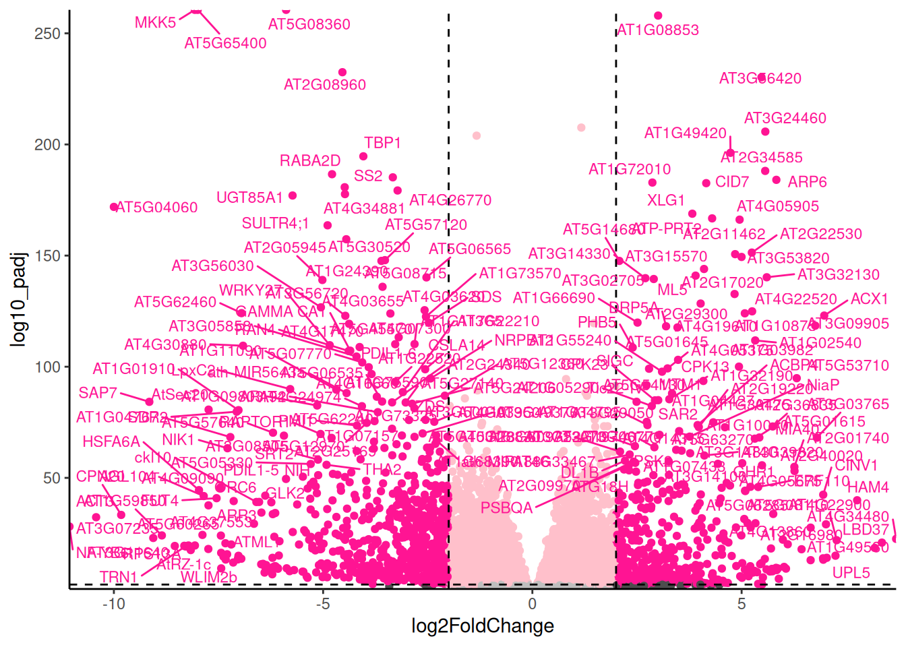
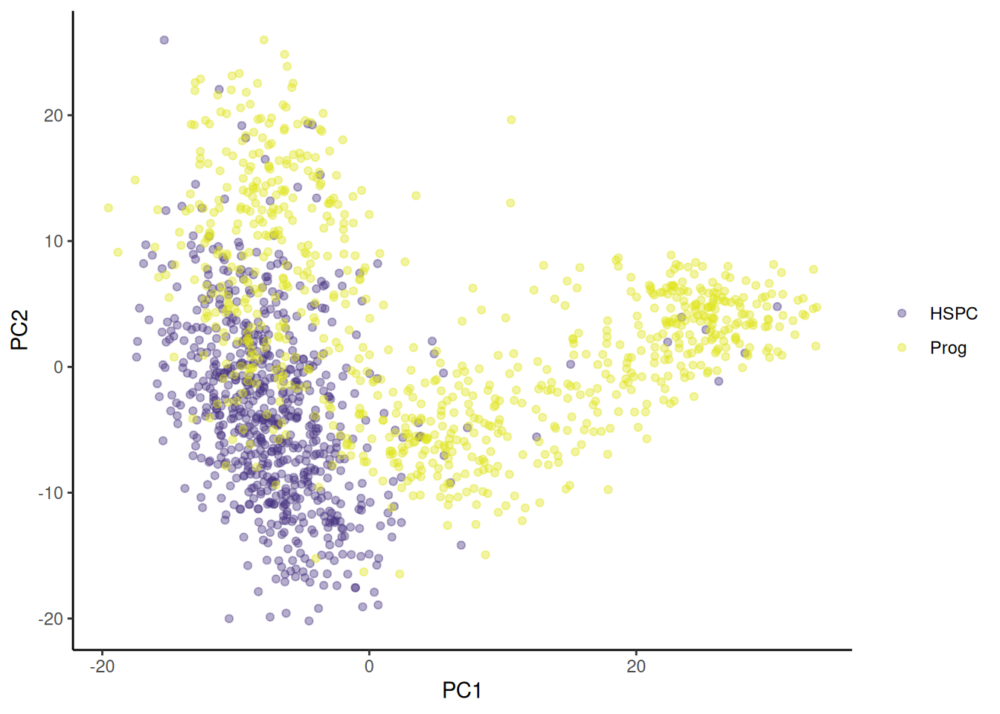
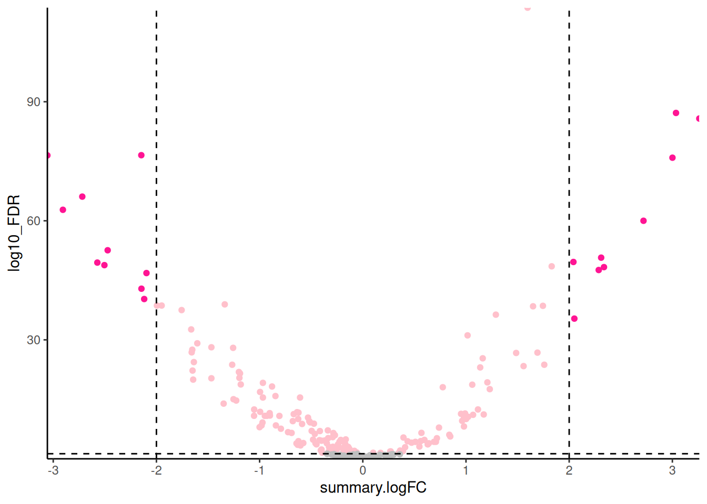

Workshop
Transcriptomics 3: Visualising
Introduction
Session overview
In the workshop, you will learn how to conduct and plot a Principle Component Analysis (PCA) as well as how to create a nicely formatted Volcano plot. You will also save significant genes to file to make it easier to identify genes of interest and perform Gene Ontology (GO) term enrichment analysis.
import log where needed write sig to file add go terms prep data for pca do pca and plot volcano go term enrichment
Set up
🸠Frog development
🬠Open the frogs-88H RStudio Project and the cont-fgf-s30.R script.
🄠Arabidopsis
🬠Open the arabi-88H RStudio Project and the wildsuf-wilddef-s30.R script.
💉 Leishmania
🬠Open the leish-88H RStudio Project and the pro-meta-s30.R script.
ğŸ Stem cells
🬠Open the mice-88H RStudio Project and the hspc-prog.R script.
Everyone
🬠Make a new folder figures in the project directory.
This is where we will save our figure files
🬠Load tidyverse (Wickham et al. 2019) and conflicted (Wickham 2023). You most likely have this code at the top of your script already.
── Attaching core tidyverse packages ─────────────────────────────────────────────── tidyverse 2.0.0 ──
✔ dplyr 1.1.3 ✔ readr 2.1.4
✔ forcats 1.0.0 ✔ stringr 1.5.0
✔ ggplot2 3.4.3 ✔ tibble 3.2.1
✔ lubridate 1.9.3 ✔ tidyr 1.3.0
✔ purrr 1.0.2
── Conflicts ───────────────────────────────────────────────────────────────── tidyverse_conflicts() ──
✖ dplyr::filter() masks stats::filter()
✖ dplyr::lag() masks stats::lag()
ℹ Use the conflicted package to force all conflicts to become errorsI recommend you set the dplyr versions of filter() and select() to use by default
🬠Use the dplyr version of filter() by default:
conflicts_prefer(dplyr::filter)
conflicts_prefer(dplyr::select)Import
Everyone
🬠Import your results data. This should be a file in the results folder called xxxx_results.csv where xxxx indicates the comparison you made.
🬠Remind yourself what is in the rows and columns and the structure of the dataframes (perhaps using glimpse())
When we do PCA we will want to label the samples with their treatment for figures. For 🸠Frog development, 🄠Arabidopsis and 💉 Leishmania, this labelling information is most easily added using the metadata. You will need to filter for only the samples in the comparison that was made in the results file.
You may need to refer back to the Week 4 Statistical Analysis workshop (in section 2. Create DESeqDataSet object) to remind yourself how to import and filter the metadata you need.
🬠Import the metadata that maps the sample names to treatments. Remember to select only the samples for comparison that was made.
For ğŸ Stem cells, cell types are encoded in the column names. We will do some regular expression magic to extract the cell type from the column names.
log2 transform the normalised counts
We use the normalised counts for data visualisations so that the comparisons are meaningful. Since the fold changes are given is log2 it is useful to log2 transform the normalised counts too. We will add columns to the dataframe with these transformed values. Since we have some counts of 0 we will add a tiny amount to avoid -Inf values.
log2 transformation would be applied to one column like this:
We are going to use a wonderful bit of R wizardry to apply a transformation to multiple columns. This is the across() function which has three arguments:
across(.cols, .fns, .names)where:
-
.colsis the selection of columns to transform -
.fnsis the function we want to apply to the selected columns -
.namesis the naming convention for the new columns
The general form of the code you need is:
# DO NOT DO
# log2 transform the counts plus a tiny amount to avoid log(0)
xxxx_results <- xxxx_results |>
mutate(across(starts_with("pattern"),
\(x) log2(x + 0.001),
.names = "log2_{.col}"))where:
-
xxxx_resultsis the name of the dataframe of results -
patternmatches the starting letters for all of the normalised counts so thatstarts_with("pattern")gives the selection of columns to transform - the bit after the
\(x)is the function we want to apply to the selected columns - the
\(x)means it is an “anonymous†function which means we don’t have to define a function name. -
"log2_{.col}"means the columns will have the same name (in the.col) but with the prefixlog2_added.
You can read more about across() and anonymous functions from my posit::conf(2024) workshop
🸠Frog development, 🄠Arabidopsis and 💉 Leishmania
🬠Design the code to log2 transform the normalised counts using the template given
I recommend viewing the dataframe to see the new columns. Check you have the expected number of columns.
ğŸ Stem cells
You do not need to apply this transformation because the data is already log2 transformed.
Everyone
We now all have dataframes with all the information we need: normalised counts, log2 normalised counts, statistical comparisons with fold changes and p-values, and information about the gene.
Write the significant genes to file
Everyone
We will create dataframe of the significant genes and write them to file. This is subset from the results file but will make it a little easier to examine and select genes of interest.
The general form of the code you need is:
# DO NOT DO
# create a dataframe of genes significant at 0.05 level
xxxx_results_sig0.05 <- xxxx_results |>
filter(pvalue <= 0.05)Note that you determine the significance level using the adjusted p-values rather than the uncorrected p-values. This column is name padj in DESeq2 output and FDR in scran output.
🬠Create a dataframe of the genes significant at the 0.05 level using filter(). You will need to know the name of column with the adjusted p-values.
❓How many genes are significant at the 0.05 levels?
If you have a very large number of genes significant at the 0.05 level, you may want to consider a more stringent cut-off such as 0.01.
🬠Write the dataframe to a csv file. I recommend using the same file name as you used for the dataframe.
Principal Component Analysis (PCA)
We have many genes in our datasets. PCA will allow us to plot our samples in the “gene expression†space so we can see if replicates with the same treatment cluster together as we would expect. PCA is a dimension reduction technique that finds the directions of maximum variance in the data. We are doing PCA after our statistical analysis but often it is one of the first techniques used to explore the data. If we do not see treatment effects in a PCA plot then we are not likely to see them in the statistical analysis. PCA can also help you identify any outlier replicates. The PCA is best conducted on the normalised counts or the log2 transformed normalised counts. We will use the log2 transformed normalised counts.
We will carry out the following steps to do the PCA:
- Select the log2 transformed normalised counts. You can only use numerical data in PCA.
- Transpose our data. We have genes in rows and samples in columns (this is common for gene expression data). However, to treatment the genes as variables, PCA expects samples in rows and genes in columns.
- Add the gene names as column names in the transposed data
- Perform the PCA
- Extract the scores on the first two principal components and label the data
- Plot the the first two principal components as a scatter plot
In each case we will use only the samples for the comparison that was made in the PCA. However, it would be informative to do PCA on all the samples you have and that is something you may want to consider in your independent study.
Now go to PCA for:
🸠Frog development
🬠Transpose the log2 transformed normalised counts:
s30_log2_trans <- s30_results |>
select(starts_with("log2_")) |>
t() |>
data.frame()We have used the select() function to select all the columns that start with log2_. We then use the t() function to transpose the dataframe. We then convert the resulting matrix to a dataframe using data.frame(). If you view that dataframe you’ll see it has default column name which we can fix using colnames() to set the column names to the Xenbase gene ids.
🬠Set the column names to the Xenbase gene ids:
colnames(s30_log2_trans) <- s30_results$xenbase_gene_id🬠Perform PCA on the log2 transformed normalised counts:
pca <- s30_log2_trans |>
prcomp(rank. = 4) The rank. argument tells prcomp() to only calculate the first 4 principal components. This is useful for visualisation as we can only plot in 2 or 3 dimensions. We can see the results of the PCA by viewing the summary() of the pca object.
summary(pca)Importance of first k=4 (out of 6) components:
PC1 PC2 PC3 PC4
Standard deviation 64.0124 47.3351 38.4706 31.4111
Proportion of Variance 0.4243 0.2320 0.1532 0.1022
Cumulative Proportion 0.4243 0.6562 0.8095 0.9116The Proportion of Variance tells us how much of the variance is explained by each component. We can see that the first component explains 0.4243 of the variance, the second 0.2320, and the third 0.1532. Together the first three components explain nearly 81% of the total variance in the data. Plotting PC1 against PC2 will capture about 66% of the variance which is likely very much better than we would get plotting any two genes against each other. To plot the PC1 against PC2 we will need to extract the PC1 and PC2 “scores†from the PCA object and add labels for the samples. Those labels will come from the row names of the transformed data which has the sample ids and from the metadata.
🬠Create a vector of the sample ids from the row names. These include the log2 prefix which we can removed for labelling:
sample_id <- row.names(s30_log2_trans) |> str_remove("log2_")You might want to check the result.
Now we will extract the PC1 and PC2 scores from the PCA object and add. Our PCA object is called pca and the scores are in pca$x. We will create a dataframe of the scores and add the sample ids.
🬠Create a dataframe of PC1 and PC2 scores and add the sample ids:
pca_labelled <- data.frame(pca$x,
sample_id)🬠Merge with the metadata so we can label points by treatment and sibling pair:
pca_labelled <- pca_labelled |>
left_join(meta_s30,
by = "sample_id")Since the metadata contained the sample ids, it was especially important to remove the log2_ from the row names so that the join would work.
The dataframe should look like this:
| PC1 | PC2 | PC3 | PC4 | sample_id | stage | treatment | sibling_rep |
|---|---|---|---|---|---|---|---|
| -76.38391 | 0.814699 | -60.728327 | -5.820669 | S30_C_1 | stage_30 | control | one |
| -67.02571 | 25.668563 | 51.476835 | 28.480254 | S30_C_2 | stage_30 | control | two |
| -14.02772 | -78.474054 | 15.282058 | -9.213076 | S30_C_3 | stage_30 | control | three |
| 47.60726 | 49.035510 | -19.288753 | 20.928290 | S30_F_1 | stage_30 | FGF | one |
| 26.04954 | 32.914201 | 20.206072 | -55.752818 | S30_F_2 | stage_30 | FGF | two |
| 83.78054 | -29.958919 | -6.947884 | 21.378020 | S30_F_3 | stage_30 | FGF | three |
The next task is to plot PC2 against PC1 and colour by sibling pair. This is just a scatterplot so we can use geom_point(). We will use colour to indicate the sibling pair and shape to indicate the treatment.
🬠Customise the PC2 against PC1 plot:
pca_labelled |>
ggplot(aes(x = PC1, y = PC2,
colour = sibling_rep,
shape = treatment)) +
geom_point(size = 3) +
theme_classic()
There is a good separation between treatments on PCA1. The sibling pairs do not seem to cluster together. You can also try plotting PC3 or PC4.
I prefer to customise the colours and shapes. I especially like the
viridis colour scales which provide colour scales that are perceptually uniform in both colour and black-and-white. They are also designed to be perceived by viewers with common forms of colour blindness. See Introduction to viridis for more information.
ggplot provides functions to access the viridis scales. Here I use scale_fill_viridis_d(). The d stands for discrete. The function scale_fill_viridis_c() would be used for continuous data. I’ve used the default “viridis†(or “D”) option (do ?scale_fill_viridis_d for all the options) and used the begin and end arguments to control the range of colour - I have set the range to be from 0.15 to 0.95 the avoid the strongest contrast. I have also set the name argument to provide a label for the legend.
I have used scale_shape_manual() to set the shapes for the treatments. I have used the values 21 and 19 which are the codes for filled and open circles and filled triangles. I have set the name argument to NULL to remove the label (it’s obvious what that categories are treatments) and the labels argument to improve the legend.
🬠Plot PC2 against PC1 and colour by sibling pair and shape by treatment:
pca_labelled |>
ggplot(aes(x = PC1, y = PC2,
colour = sibling_rep,
shape = treatment)) +
geom_point(size = 3) +
scale_colour_viridis_d(end = 0.95, begin = 0.15,
name = "Sibling pair") +
scale_shape_manual(values = c(21, 19),
name = NULL,
labels = c("Control", "FGF-Treated")) +
theme_classic()
Now go to Volcano plots for 🸠Frog development
🄠Arabidopsis
🬠Transpose the log2 transformed normalised counts:
wild_log2_trans <- wild_results |>
select(starts_with("log2_")) |>
t() |>
data.frame()We have used the select() function to select all the columns that start with log2_. We then use the t() function to transpose the dataframe. We then convert the resulting matrix to a dataframe using data.frame(). If you view that dataframe you’ll see it has default column name which we can fix using colnames() to set the column names to the gene ids.
🬠Set the column names to the gene ids:
colnames(wild_log2_trans) <- wild_results$gene_id🬠Perform PCA on the log2 transformed normalised counts:
pca <- wild_log2_trans |>
prcomp(rank. = 4, scale = TRUE)The scale argument tells prcomp() to scale the data before doing the PCA. This is important when the variables are on different scales to stop variables with large values dominating the PCA. The rank. argument tells prcomp() to only calculate the first 4 principal components. This is useful for visualisation as we can only plot in 2 or 3 dimensions. We can see the results of the PCA by viewing the summary() of the pca object.
summary(pca)Importance of components:
PC1 PC2 PC3 PC4
Standard deviation 123.0171 85.6822 62.2924 2.186e-13
Proportion of Variance 0.5742 0.2786 0.1472 0.000e+00
Cumulative Proportion 0.5742 0.8528 1.0000 1.000e+00The Proportion of Variance tells us how much of the variance is explained by each component. We can see that the first component explains 0.5742 of the variance, the second 0.2786, and the third 0.1472. Together the first three components explain nearly 100% of the total variance in the data. Plotting PC1 against PC2 will capture about 92% of the variance which is very likely very much better than we would get plotting any two genes against each other. To plot the PC1 against PC2 we will need to extract the PC1 and PC2 “scores†from the PCA object and add labels for the samples. Those labels will come from the row names of the transformed data which has the sample ids and from the metadata.
🬠Create a vector of the sample ids from the row names. These include the log2 prefix which we can removed for labelling:
sample_id <- row.names(wild_log2_trans) |> str_remove("log2_")You might want to check the result.
Now we will extract the PC1 and PC2 scores from the PCA object and add. Our PCA object is called pca and the scores are in pca$x. We will create a dataframe of the scores and add the sample ids.
🬠Create a dataframe of PC1 and PC2 scores and add the sample ids:
pca_labelled <- data.frame(pca$x,
sample_id)🬠Merge with the metadata so we can label points by treatment and sibling pair:
pca_labelled <- pca_labelled |>
left_join(meta_wild,
by = "sample_id")Since the metadata contained the sample ids, it was especially important to remove the log2_ from the row names so that the join would work.
The dataframe should look like this:
| PC1 | PC2 | PC3 | PC4 | sample_id | genotype | copper |
|---|---|---|---|---|---|---|
| -91.23038 | 105.92675 | 25.80774 | 0 | SRX028956_wild_suf | wt | sufficient |
| -120.00085 | -95.79115 | -13.72618 | 0 | SRX028957_wild_def | wt | deficient |
| 92.06667 | 23.00841 | -79.23090 | 0 | SRX028960_wild_suf | wt | sufficient |
| 119.16456 | -33.14401 | 67.14935 | 0 | SRX028961_wild_def | wt | deficient |
The next task is to plot PC2 against PC1 and colour by copper conditions. This is just a scatterplot so we can use geom_point(). We will use colour to indicate the copper conditions.
🬠Plot PC2 against PC1 and colour by copper conditions:
pca_labelled |>
ggplot(aes(x = PC3, y = PC2,
colour = copper)) +
geom_point(size = 3) +
theme_classic()
We do not see particularly good separation between treatments, though perhaps there is some separation between the copper sufficient and copper deficient on PC2. It is also difficult to see if the replicates cluster together (the treatments separate) when there are only two reps. You can also try plotting PC3 or PC4.
I prefer to customise the colours and shapes. I especially like the
viridis colour scales which provide colour scales that are perceptually uniform in both colour and black-and-white. They are also designed to be perceived by viewers with common forms of colour blindness. See Introduction to viridis for more information.
ggplot provides functions to access the viridis scales. Here I use scale_fill_viridis_d(). The d stands for discrete. The function scale_fill_viridis_c() would be used for continuous data. I’ve used the default “viridis†(or “D”) option (do ?scale_fill_viridis_d for all the options) and used the begin and end arguments to control the range of colour - I have set the range to be from 0.15 to 0.95 the avoid the strongest contrast. I have also set the name argument to provide a label for the legend.
🬠Customise the PC2 against PC1 plot:
pca_labelled |>
ggplot(aes(x = PC1, y = PC2,
colour = copper)) +
geom_point(size = 3) +
scale_colour_viridis_d(end = 0.95, begin = 0.15,
name = "Copper") +
theme_classic()
Now go to Volcano plots for 🄠Arabidopsis
💉 Leishmania
🬠Transpose the log2 transformed normalised counts:
pro_meta_log2_trans <- pro_meta_results |>
select(starts_with("log2_")) |>
t() |>
data.frame()We have used the select() function to select all the columns that start with log2_. We then use the t() function to transpose the dataframe. We then convert the resulting matrix to a dataframe using data.frame(). If you view that dataframe you’ll see it has default column name which we can fix using colnames() to set the column names to the gene ids.
🬠Set the column names to the gene ids:
colnames(pro_meta_log2_trans) <- pro_meta_results$gene_id🬠Perform PCA on the log2 transformed normalised counts:
pca <- pro_meta_log2_trans |>
prcomp(rank. = 4, scale = TRUE) The scale argument tells prcomp() to scale the data before doing the PCA. This is important when the variables are on different scales to stop variables with large values dominating the PCA. The rank. argument tells prcomp() to only calculate the first 4 principal components. This is useful for visualisation as we can only plot in 2 or 3 dimensions. We can see the results of the PCA by viewing the summary() of the pca object.
summary(pca)Importance of first k=4 (out of 6) components:
PC1 PC2 PC3 PC4
Standard deviation 66.0744 41.9741 29.4077 27.61377
Proportion of Variance 0.5175 0.2088 0.1025 0.09038
Cumulative Proportion 0.5175 0.7263 0.8288 0.91916The Proportion of Variance tells us how much of the variance is explained by each component. We can see that the first component explains 0.5175 of the variance, the second 0.2088, and the third 0.1025. Together the first three components explain nearly 92% of the total variance in the data. Plotting PC1 against PC2 will capture about 66% of the variance which is likely very much better than we would get plotting any two genes against each other. To plot the PC1 against PC2 we will need to extract the PC1 and PC2 “scores†from the PCA object and add labels for the samples. Those labels will come from the row names of the transformed data which has the sample ids and from the metadata.
🬠Create a vector of the sample ids from the row names. These include the log2 prefix which we can removed for labelling:
sample_id <- row.names(pro_meta_log2_trans) |> str_remove("log2_")You might want to check the result.
Now we will extract the PC1 and PC2 scores from the PCA object and add. Our PCA object is called pca and the scores are in pca$x. We will create a dataframe of the scores and add the sample ids.
🬠Create a dataframe of PC1 and PC2 scores and add the sample ids:
pca_labelled <- data.frame(pca$x,
sample_id)🬠Merge with the metadata so we can label points by life cycle stage:
pca_labelled <- pca_labelled |>
left_join(meta_pro_meta,
by = "sample_id")Since the metadata contained the sample ids, it was especially important to remove the log2_ from the row names so that the join would work.
The dataframe should look like this:
| PC1 | PC2 | PC3 | PC4 | sample_id | stage | replicate |
|---|---|---|---|---|---|---|
| -59.42107 | -2.922229 | -11.043368 | -13.4641060 | lm_pro_1 | procyclic | 1 |
| -63.25818 | -15.985856 | -36.248191 | 0.7025242 | lm_pro_2 | procyclic | 2 |
| -57.92065 | 25.679645 | 47.373874 | 13.7893070 | lm_pro_3 | procyclic | 3 |
| 56.20326 | -59.707787 | 5.958727 | 31.5528028 | lm_meta_1 | metacyclic | 1 |
| 57.41205 | -11.738157 | 14.157242 | -47.2285609 | lm_meta_2 | metacyclic | 2 |
| 66.98459 | 64.674383 | -20.198284 | 14.6480329 | lm_meta_3 | metacyclic | 3 |
The next task is to plot PC2 against PC1 and colour by sibling pair. This is just a scatterplot so we can use geom_point(). We will use colour to indicate the life cycle stage.
🬠Plot PC2 against PC1 and colour by copper conditions:
pca_labelled |>
ggplot(aes(x = PC1, y = PC2,
colour = stage)) +
geom_point(size = 3) +
theme_classic()
There is a good separation between treatments on PCA1. The replicates do seem to cluster together. You can also try plotting PC3 or PC4.
I prefer to customise the colours. I especially like the
viridis colour scales which provide colour scales that are perceptually uniform in both colour and black-and-white. They are also designed to be perceived by viewers with common forms of colour blindness. See Introduction to viridis for more information.
ggplot provides functions to access the viridis scales. Here I use scale_fill_viridis_d(). The d stands for discrete. The function scale_fill_viridis_c() would be used for continuous data. I’ve used the default “viridis†(or “D”) option (do ?scale_fill_viridis_d for all the options) and used the begin and end arguments to control the range of colour - I have set the range to be from 0.15 to 0.95 the avoid the strongest contrast. I have also set the name argument to provide a label for the legend.
🬠Plot PC2 against PC1 and colour by life stage:
pca_labelled |>
ggplot(aes(x = PC1, y = PC2,
colour = stage)) +
geom_point(size = 3) +
scale_colour_viridis_d(end = 0.95, begin = 0.15,
name = "Stage") +
theme_classic()Now go to Volcano plots for 💉 Leishmania
ğŸ Stem cells
🬠Transpose the log2 transformed normalised counts:
hspc_prog_trans <- hspc_prog_results |>
dplyr::select(starts_with(c("HSPC_", "Prog_"))) |>
t() |>
data.frame()We have used the select() function to select all the columns that start with Prog_ or HSPC_. We then use the t() function to transpose the dataframe. We then convert the resulting matrix to a dataframe using data.frame(). If you view that dataframe you’ll see it has default column name which we can fix using colnames() to set the column names to the gene ids.
🬠Set the column names to the gene ids:
colnames(hspc_prog_trans) <- hspc_prog_results$ensembl_gene_id🬠Perform PCA on the log2 transformed normalised counts:
pca <- hspc_prog_trans |>
prcomp(rank. = 8)The rank. argument tells prcomp() to only calculate the first 8 principal components. This is useful for visualisation as we can only plot in 2 or 3 dimensions. We can see the results of the PCA by viewing the summary() of the pca object.
summary(pca)Importance of first k=8 (out of 280) components:
PC1 PC2 PC3 PC4 PC5 PC6 PC7
Standard deviation 12.5612 8.36646 5.98988 5.41386 4.55730 4.06142 3.84444
Proportion of Variance 0.1099 0.04874 0.02498 0.02041 0.01446 0.01149 0.01029
Cumulative Proportion 0.1099 0.15861 0.18359 0.20400 0.21846 0.22995 0.24024
PC8
Standard deviation 3.70848
Proportion of Variance 0.00958
Cumulative Proportion 0.24982The Proportion of Variance tells us how much of the variance is explained by each component. We can see that the first component explains 0.1099 of the variance, the second 0.04874, and the third 0.02498. Together the first three components explain 18% of the total variance in the data. This is not that high but it is also quite a lot better than than we would get plotting any two genes randomly chosen against each other.
To plot the PC1 against PC2 we will need to extract the PC1 and PC2 “scores†from the PCA object and add labels for the cells. Our PCA object is called pca and the scores are in pca$x. The cells labels will come from the row names of the transformed data.
🬠Create a dataframe of the PC1 and PC2 scores (in pca$x) and add the cell ids:
pca_labelled <- data.frame(pca$x,
cell_id = row.names(hspc_prog_trans))It will be helpful to add a column for the cell type so we can label points. One way to do this is to extract the information in the cell_id column into two columns: one with the complete cell id and one with just the cell type. This extraction is done with Regular Expression magic.
🬠Extract the cell type and cell number from the cell_id column (keeping the cell_id column):
What this code does is take what is in the cell_id column (something like Prog_001 and HSPC_001) and split it into two columns (“cell_type†and “cell_number”). The reason why we want to do that is to colour the points by cell type (we don’t want to colour by cell number because that would be 1000+ colours). How it does that is by matching the pattern before the _ and matching the pattern after _. Each pattern is inside a set of (). Patterns are matched with regular expression
"([a-zA-Z]{4})_([0-9]{3})" is a regular expression - or regex.
-
[a-zA-Z]means any lower (a-z) or upper case letter (A-Z). - The square brackets means any of the characters in the square brackets will be matched
- {4} means 4 of them.
- So the first pattern inside the first () will match exactly 4 upper or lower case letters (like Prog or HSPC)
- [0-9] means any number,
- {3} means 3 of them.
- So the second pattern inside the second () will match exactly 3 numbers (like 001 or 851)
- The _ between the two patterns matches the underscore and the fact it isn’t in a set of () means we do not want to keep it.
Important: Prog and HPSC have 4 letters. The column names, LT.HSPC_ have 6 characters and includes a dot. You will need to adjust the regex when make comparison between LT-HSPC and other cell types. The pattern to match the LT.HSPC as well as the Prog and HSPC is ([a-zA-Z.]{4, 6}). The pattern to match the underscore and the cell number is the same.
The dataframe should look like this (but with more decimal places)
| PC1 | PC2 | PC3 | PC4 | PC5 | PC6 | PC7 | PC8 | cell_id | cell_type | cell_number | |
|---|---|---|---|---|---|---|---|---|---|---|---|
| HSPC_001 | 2.62 | 15.39 | -7.94 | -4.87 | 2.52 | 4.29 | -1.69 | 4.45 | HSPC_001 | HSPC | 001 |
| HSPC_002 | -0.70 | 15.22 | 0.13 | 3.74 | 6.47 | -1.70 | 0.83 | -3.35 | HSPC_002 | HSPC | 002 |
| HSPC_003 | 15.52 | -7.80 | 0.53 | -4.04 | -0.10 | -1.48 | -0.32 | -7.40 | HSPC_003 | HSPC | 003 |
| HSPC_004 | 4.11 | 7.04 | 0.45 | 10.58 | 3.09 | -8.30 | -6.01 | 2.27 | HSPC_004 | HSPC | 004 |
| HSPC_006 | 7.89 | -5.15 | -2.95 | 12.45 | -4.77 | 4.63 | 5.46 | 1.97 | HSPC_006 | HSPC | 006 |
| HSPC_008 | 10.29 | 8.06 | -8.33 | -2.69 | -1.86 | -2.42 | 0.03 | -2.01 | HSPC_008 | HSPC | 008 |
| HSPC_009 | 9.14 | 2.22 | -5.01 | 8.35 | 1.62 | 3.25 | 3.81 | 5.74 | HSPC_009 | HSPC | 009 |
| HSPC_011 | 10.99 | -4.62 | -9.68 | 7.16 | -1.68 | 3.54 | 6.87 | -1.05 | HSPC_011 | HSPC | 011 |
| HSPC_012 | 7.40 | -4.59 | -7.76 | 12.36 | -5.95 | 1.34 | 2.67 | 2.62 | HSPC_012 | HSPC | 012 |
| HSPC_014 | 8.41 | 5.41 | -9.08 | -3.12 | 2.44 | -0.43 | 2.43 | 0.30 | HSPC_014 | HSPC | 014 |
| HSPC_015 | 11.60 | 3.15 | -2.90 | 1.31 | -5.06 | 0.33 | -4.52 | 1.07 | HSPC_015 | HSPC | 015 |
| HSPC_016 | 15.12 | -3.56 | -10.93 | 3.70 | -6.64 | 1.28 | 6.24 | -1.22 | HSPC_016 | HSPC | 016 |
| HSPC_017 | 9.01 | 10.92 | -5.68 | -3.88 | 8.36 | 1.41 | -2.70 | -3.01 | HSPC_017 | HSPC | 017 |
| HSPC_018 | 10.10 | -0.10 | -4.91 | -6.37 | -4.67 | -4.59 | -2.13 | -1.17 | HSPC_018 | HSPC | 018 |
| HSPC_020 | 4.30 | 12.95 | -5.51 | -11.58 | 2.84 | 6.59 | 3.48 | -2.62 | HSPC_020 | HSPC | 020 |
| HSPC_021 | 9.48 | 7.46 | 6.49 | -5.37 | -2.43 | -7.93 | -4.14 | -2.26 | HSPC_021 | HSPC | 021 |
| HSPC_022 | 5.47 | 4.09 | 4.78 | -6.67 | -1.55 | -4.16 | 0.83 | 4.52 | HSPC_022 | HSPC | 022 |
| HSPC_023 | 10.59 | 0.13 | 0.26 | -0.24 | -3.50 | -7.96 | -1.11 | -0.05 | HSPC_023 | HSPC | 023 |
| HSPC_024 | 11.08 | 10.43 | -2.83 | 1.84 | -1.78 | 1.25 | 0.46 | -2.29 | HSPC_024 | HSPC | 024 |
| HSPC_025 | 9.95 | 2.43 | -8.41 | -4.10 | -2.93 | -1.24 | -3.34 | 10.31 | HSPC_025 | HSPC | 025 |
| HSPC_026 | 13.02 | -14.52 | -2.71 | 6.02 | -1.51 | 11.94 | 3.52 | 0.34 | HSPC_026 | HSPC | 026 |
| HSPC_027 | 12.79 | 1.56 | -10.31 | -0.61 | 0.34 | 0.76 | 0.33 | 1.42 | HSPC_027 | HSPC | 027 |
| HSPC_028 | 6.33 | 4.23 | -7.53 | 14.54 | 3.27 | -1.29 | -0.49 | 5.56 | HSPC_028 | HSPC | 028 |
| HSPC_030 | 12.62 | -1.19 | -3.52 | 6.62 | -3.38 | 0.90 | -0.07 | 7.35 | HSPC_030 | HSPC | 030 |
| HSPC_031 | 7.10 | 10.91 | -4.82 | 1.36 | -3.89 | -2.62 | -6.50 | 4.49 | HSPC_031 | HSPC | 031 |
| HSPC_033 | 7.89 | 9.16 | -5.76 | 10.01 | -5.72 | 0.95 | 2.20 | -2.78 | HSPC_033 | HSPC | 033 |
| HSPC_034 | 7.62 | -6.82 | 0.65 | 3.69 | -4.48 | -7.56 | 1.62 | -1.86 | HSPC_034 | HSPC | 034 |
| HSPC_035 | 3.57 | 14.96 | 0.12 | 0.64 | 9.35 | 0.29 | -1.73 | -6.06 | HSPC_035 | HSPC | 035 |
| HSPC_036 | 13.02 | -8.55 | 1.02 | -5.43 | -8.26 | -5.10 | 2.61 | -8.96 | HSPC_036 | HSPC | 036 |
| HSPC_037 | 11.54 | 0.67 | -5.89 | 7.00 | -0.73 | -0.66 | -3.62 | 8.67 | HSPC_037 | HSPC | 037 |
| HSPC_038 | 15.29 | 0.06 | -7.02 | 16.39 | 0.02 | 4.40 | -0.52 | -1.91 | HSPC_038 | HSPC | 038 |
| HSPC_040 | 10.61 | 0.26 | -13.63 | 3.62 | -11.06 | 2.04 | 4.86 | 2.41 | HSPC_040 | HSPC | 040 |
| HSPC_041 | 14.64 | -2.43 | -6.76 | 0.58 | -4.10 | -0.51 | -1.01 | -6.52 | HSPC_041 | HSPC | 041 |
| HSPC_042 | 13.30 | -2.97 | -3.16 | 4.42 | -4.27 | -4.21 | -1.00 | -8.29 | HSPC_042 | HSPC | 042 |
| HSPC_043 | 9.70 | 4.80 | -1.97 | -2.63 | -0.32 | 1.14 | -2.19 | -5.96 | HSPC_043 | HSPC | 043 |
| HSPC_044 | 7.80 | -16.49 | 7.85 | 0.78 | 10.20 | 5.10 | 1.27 | 4.47 | HSPC_044 | HSPC | 044 |
| HSPC_045 | 8.15 | 5.61 | -5.52 | 0.09 | -3.73 | -2.85 | -0.78 | 4.04 | HSPC_045 | HSPC | 045 |
| HSPC_046 | 9.69 | 11.28 | -4.73 | 5.73 | 3.68 | -5.32 | -4.29 | -3.35 | HSPC_046 | HSPC | 046 |
| HSPC_047 | 8.87 | 7.00 | -3.37 | -1.70 | 0.74 | -1.56 | -6.00 | 1.78 | HSPC_047 | HSPC | 047 |
| HSPC_048 | 14.38 | 3.89 | -5.29 | 9.05 | -1.40 | 1.66 | -0.77 | -3.62 | HSPC_048 | HSPC | 048 |
| HSPC_049 | 10.01 | 0.79 | -6.63 | 0.21 | -6.63 | 1.00 | 1.48 | -1.12 | HSPC_049 | HSPC | 049 |
| HSPC_050 | 13.19 | -10.42 | -5.86 | 5.65 | -8.59 | 6.57 | 0.54 | -7.02 | HSPC_050 | HSPC | 050 |
| HSPC_051 | 11.49 | -0.19 | -1.71 | 8.35 | -4.83 | -4.91 | 0.52 | 3.13 | HSPC_051 | HSPC | 051 |
| HSPC_052 | 0.71 | -7.44 | 0.60 | -5.14 | 12.95 | -6.50 | -1.97 | 7.11 | HSPC_052 | HSPC | 052 |
| HSPC_053 | 9.68 | -7.44 | -3.58 | -3.46 | -6.81 | 0.25 | 5.46 | -7.76 | HSPC_053 | HSPC | 053 |
| HSPC_054 | 10.03 | 7.51 | -7.96 | 6.31 | -0.73 | -0.28 | -3.82 | 3.77 | HSPC_054 | HSPC | 054 |
| HSPC_055 | 6.91 | 6.67 | -1.37 | 8.06 | 1.22 | -5.10 | 0.17 | 1.29 | HSPC_055 | HSPC | 055 |
| HSPC_056 | 5.95 | 1.95 | -2.13 | 4.13 | -2.40 | -5.61 | -8.68 | 2.30 | HSPC_056 | HSPC | 056 |
| HSPC_057 | 6.15 | 11.51 | -5.04 | -6.29 | 8.45 | 4.96 | 3.11 | -3.36 | HSPC_057 | HSPC | 057 |
| HSPC_058 | 10.56 | 1.45 | -1.93 | 6.92 | -2.12 | 1.93 | -5.16 | 0.82 | HSPC_058 | HSPC | 058 |
| HSPC_060 | 2.97 | 12.38 | -1.83 | -3.98 | 3.70 | 1.89 | -0.31 | -2.10 | HSPC_060 | HSPC | 060 |
| HSPC_061 | 4.03 | 3.44 | 1.22 | 7.64 | 5.02 | -5.99 | 0.10 | -4.21 | HSPC_061 | HSPC | 061 |
| HSPC_062 | 1.23 | 5.74 | -3.76 | -5.25 | 9.15 | -4.14 | 6.04 | -2.92 | HSPC_062 | HSPC | 062 |
| HSPC_063 | 5.36 | -14.28 | 4.28 | -7.55 | 7.95 | -3.47 | 6.30 | 2.02 | HSPC_063 | HSPC | 063 |
| HSPC_064 | 10.60 | -7.59 | -7.50 | 4.14 | -3.97 | 6.97 | 2.63 | -2.46 | HSPC_064 | HSPC | 064 |
| HSPC_065 | 6.22 | 0.53 | -4.42 | -1.51 | -0.78 | -8.11 | 4.65 | 3.04 | HSPC_065 | HSPC | 065 |
| HSPC_066 | 4.45 | 17.11 | -2.05 | -5.25 | 8.61 | 2.91 | 1.74 | -9.34 | HSPC_066 | HSPC | 066 |
| HSPC_067 | 15.45 | -0.17 | 1.77 | 0.83 | -5.36 | -7.34 | -2.89 | 0.95 | HSPC_067 | HSPC | 067 |
| HSPC_068 | 15.52 | -2.76 | -4.66 | 4.79 | -4.46 | 0.99 | 4.48 | -1.39 | HSPC_068 | HSPC | 068 |
| HSPC_069 | 7.15 | 10.93 | -4.54 | -6.87 | -1.83 | 0.37 | 4.54 | -3.60 | HSPC_069 | HSPC | 069 |
| HSPC_070 | 14.96 | -2.19 | -6.69 | 1.01 | -4.27 | -2.15 | -1.57 | 1.02 | HSPC_070 | HSPC | 070 |
| HSPC_071 | 10.36 | -3.48 | -0.06 | -0.05 | -1.57 | -6.43 | 4.53 | -0.53 | HSPC_071 | HSPC | 071 |
| HSPC_072 | 9.26 | -18.19 | 1.50 | 0.78 | 9.70 | 6.75 | -2.89 | -2.65 | HSPC_072 | HSPC | 072 |
| HSPC_073 | 5.97 | 0.17 | -2.93 | -0.50 | -2.81 | -0.32 | -4.84 | -5.21 | HSPC_073 | HSPC | 073 |
| HSPC_074 | 4.29 | 9.57 | -4.57 | -9.56 | -1.02 | 7.27 | -2.98 | -6.89 | HSPC_074 | HSPC | 074 |
| HSPC_075 | 4.82 | 16.75 | -4.38 | -8.66 | 6.34 | 1.18 | -5.07 | -5.88 | HSPC_075 | HSPC | 075 |
| HSPC_076 | 7.87 | 3.28 | -5.18 | -6.52 | -1.40 | -1.67 | 0.11 | -5.28 | HSPC_076 | HSPC | 076 |
| HSPC_077 | 9.22 | -2.28 | -1.49 | -5.58 | -2.50 | -5.14 | 7.92 | -10.90 | HSPC_077 | HSPC | 077 |
| HSPC_078 | 6.44 | -4.28 | -5.71 | 1.77 | -7.59 | 0.07 | 5.64 | -2.58 | HSPC_078 | HSPC | 078 |
| HSPC_079 | 3.67 | 1.23 | -3.80 | -5.03 | -3.32 | -5.72 | -1.16 | -3.10 | HSPC_079 | HSPC | 079 |
| HSPC_080 | 16.74 | -9.70 | -9.06 | -2.65 | -7.45 | -2.59 | 4.11 | -1.08 | HSPC_080 | HSPC | 080 |
| HSPC_081 | 6.29 | 3.57 | -3.21 | 5.93 | 2.87 | -4.24 | 3.71 | -5.09 | HSPC_081 | HSPC | 081 |
| HSPC_082 | 9.59 | 3.57 | -0.50 | -4.90 | -2.83 | -0.09 | 0.99 | 0.97 | HSPC_082 | HSPC | 082 |
| HSPC_083 | 7.02 | 9.13 | -7.13 | -16.85 | 1.88 | 6.35 | -4.06 | -0.49 | HSPC_083 | HSPC | 083 |
| HSPC_084 | 9.28 | 1.16 | -6.47 | 1.64 | 1.95 | 3.34 | -4.44 | -3.31 | HSPC_084 | HSPC | 084 |
| HSPC_085 | 7.05 | 4.55 | -6.11 | 1.88 | 0.31 | 1.88 | 2.15 | -2.78 | HSPC_085 | HSPC | 085 |
| HSPC_087 | 1.04 | 17.56 | -3.47 | -7.31 | 5.58 | 7.97 | -2.08 | -2.03 | HSPC_087 | HSPC | 087 |
| HSPC_088 | 8.72 | -1.66 | -2.91 | 0.90 | 0.16 | -5.65 | 3.86 | 2.06 | HSPC_088 | HSPC | 088 |
| HSPC_089 | 4.14 | -0.97 | -4.08 | 2.11 | -5.68 | 0.86 | -0.87 | 8.31 | HSPC_089 | HSPC | 089 |
| HSPC_090 | 9.80 | -9.91 | -2.72 | 8.31 | -1.88 | -1.14 | -2.57 | -5.01 | HSPC_090 | HSPC | 090 |
| HSPC_094 | 4.01 | 4.07 | -1.52 | -1.94 | -0.90 | -3.54 | 6.94 | 3.32 | HSPC_094 | HSPC | 094 |
| HSPC_095 | 5.69 | 6.45 | -3.62 | -9.77 | 0.64 | 3.03 | -6.62 | 2.79 | HSPC_095 | HSPC | 095 |
| HSPC_096 | 5.46 | -0.71 | -1.93 | 6.41 | -5.75 | 5.93 | 0.18 | 5.02 | HSPC_096 | HSPC | 096 |
| HSPC_098 | 7.25 | -5.98 | -0.36 | 8.17 | 0.01 | 3.84 | 3.33 | 3.96 | HSPC_098 | HSPC | 098 |
| HSPC_099 | 7.51 | 10.77 | -6.41 | 7.33 | 2.76 | 1.11 | -3.43 | 3.21 | HSPC_099 | HSPC | 099 |
| HSPC_100 | 7.38 | -8.05 | -4.98 | 7.69 | -6.17 | -1.16 | 1.85 | 1.38 | HSPC_100 | HSPC | 100 |
| HSPC_101 | 6.77 | -8.96 | -8.04 | 1.59 | -4.48 | 3.32 | 10.04 | 7.05 | HSPC_101 | HSPC | 101 |
| HSPC_102 | 7.42 | -13.19 | 5.52 | 4.83 | 7.62 | 2.81 | -0.62 | -2.07 | HSPC_102 | HSPC | 102 |
| HSPC_103 | 13.34 | -0.90 | -8.57 | -0.94 | -3.35 | 1.80 | -6.72 | 5.89 | HSPC_103 | HSPC | 103 |
| HSPC_104 | 7.81 | 6.19 | 1.21 | 2.20 | 1.26 | 0.67 | -2.26 | 4.16 | HSPC_104 | HSPC | 104 |
| HSPC_105 | 6.85 | 6.47 | -4.26 | 6.61 | 6.75 | -2.34 | -2.70 | -0.20 | HSPC_105 | HSPC | 105 |
| HSPC_106 | 4.60 | 9.93 | 0.21 | -0.87 | 3.25 | -0.56 | 3.54 | -3.07 | HSPC_106 | HSPC | 106 |
| HSPC_107 | 10.25 | 3.31 | -3.07 | 6.66 | -9.03 | -3.45 | 1.16 | 4.92 | HSPC_107 | HSPC | 107 |
| HSPC_108 | 11.67 | 2.43 | -3.97 | 3.51 | -2.78 | -9.01 | -5.91 | 0.44 | HSPC_108 | HSPC | 108 |
| HSPC_109 | 5.22 | 1.44 | 5.10 | -3.88 | -4.35 | -5.16 | 0.78 | -4.32 | HSPC_109 | HSPC | 109 |
| HSPC_110 | -7.35 | 4.84 | 7.58 | -4.87 | -3.40 | 4.93 | 4.45 | 3.41 | HSPC_110 | HSPC | 110 |
| HSPC_111 | 3.80 | 19.20 | -7.20 | 5.45 | 6.82 | 1.27 | 1.22 | 3.96 | HSPC_111 | HSPC | 111 |
| HSPC_114 | 4.19 | 3.97 | -1.43 | 12.46 | 1.38 | -0.72 | 0.33 | -4.23 | HSPC_114 | HSPC | 114 |
| HSPC_115 | 5.20 | 2.38 | -7.26 | -9.98 | -3.88 | -1.53 | -2.41 | 5.96 | HSPC_115 | HSPC | 115 |
| HSPC_117 | 1.10 | 2.12 | -2.26 | 9.71 | 6.75 | 5.85 | -5.46 | -8.99 | HSPC_117 | HSPC | 117 |
| HSPC_118 | 3.71 | 6.90 | -2.21 | 9.71 | -0.70 | -6.41 | 6.49 | -0.13 | HSPC_118 | HSPC | 118 |
| HSPC_119 | 2.89 | 5.57 | -3.23 | -3.38 | 4.37 | -2.05 | 4.97 | 0.08 | HSPC_119 | HSPC | 119 |
| HSPC_120 | 3.00 | 15.00 | -2.41 | 0.12 | 6.36 | -1.31 | 3.36 | -3.39 | HSPC_120 | HSPC | 120 |
| HSPC_121 | 15.23 | -12.42 | -0.73 | 3.26 | -3.00 | 8.50 | -3.64 | -4.29 | HSPC_121 | HSPC | 121 |
| HSPC_122 | 11.57 | 8.64 | -0.62 | 7.44 | 1.47 | -3.38 | 4.85 | 0.40 | HSPC_122 | HSPC | 122 |
| HSPC_123 | 5.56 | 1.19 | -1.41 | 2.39 | 0.19 | -0.40 | -0.96 | -4.34 | HSPC_123 | HSPC | 123 |
| HSPC_125 | 5.90 | 5.41 | -6.66 | 3.99 | 4.74 | -0.22 | -3.78 | 0.28 | HSPC_125 | HSPC | 125 |
| HSPC_126 | 6.36 | 10.93 | -3.26 | 3.45 | 4.09 | -7.64 | 0.32 | -0.97 | HSPC_126 | HSPC | 126 |
| HSPC_127 | 6.15 | 7.36 | 1.22 | -3.91 | 2.32 | 3.24 | 2.76 | -4.33 | HSPC_127 | HSPC | 127 |
| HSPC_130 | 7.52 | 4.48 | 1.44 | -9.21 | -0.72 | 6.10 | -4.18 | -2.49 | HSPC_130 | HSPC | 130 |
| HSPC_131 | 10.70 | -3.61 | -0.56 | 5.45 | 2.95 | 1.56 | 2.02 | 2.16 | HSPC_131 | HSPC | 131 |
| HSPC_132 | 7.65 | 8.73 | -5.02 | 0.39 | 0.58 | 0.53 | 5.33 | 0.08 | HSPC_132 | HSPC | 132 |
| HSPC_133 | 8.96 | 4.74 | -0.09 | -9.57 | -1.36 | 2.51 | 1.36 | -4.02 | HSPC_133 | HSPC | 133 |
| HSPC_134 | 6.70 | -1.06 | 2.40 | 1.61 | -2.46 | -2.94 | 2.62 | -0.52 | HSPC_134 | HSPC | 134 |
| HSPC_135 | 5.06 | 11.92 | -1.57 | -10.70 | 2.79 | 5.48 | 0.09 | -3.95 | HSPC_135 | HSPC | 135 |
| HSPC_136 | 9.32 | 5.26 | -2.43 | -9.78 | -0.82 | -1.08 | 2.90 | -2.02 | HSPC_136 | HSPC | 136 |
| HSPC_138 | 2.26 | 14.00 | -6.36 | -5.58 | 7.07 | 2.82 | 5.08 | -5.05 | HSPC_138 | HSPC | 138 |
| HSPC_139 | 3.95 | 5.13 | -3.72 | -13.27 | 4.17 | 4.46 | -3.17 | -0.51 | HSPC_139 | HSPC | 139 |
| HSPC_140 | 3.24 | 0.65 | -0.67 | 3.32 | 3.30 | 0.18 | -1.34 | 1.12 | HSPC_140 | HSPC | 140 |
| HSPC_141 | 5.89 | 3.45 | -7.05 | -2.79 | 2.31 | -3.87 | 0.10 | 2.19 | HSPC_141 | HSPC | 141 |
| HSPC_142 | 8.38 | -1.23 | -1.65 | 3.12 | -2.39 | -5.09 | 1.75 | -4.76 | HSPC_142 | HSPC | 142 |
| HSPC_143 | -0.63 | -8.21 | 2.96 | 3.82 | 2.75 | 7.19 | 3.26 | -1.61 | HSPC_143 | HSPC | 143 |
| HSPC_144 | 12.49 | 11.18 | -1.16 | 7.53 | 3.11 | 0.60 | -3.67 | 5.50 | HSPC_144 | HSPC | 144 |
| HSPC_146 | -0.61 | 0.93 | 1.65 | -5.21 | -2.65 | -1.57 | 1.08 | -0.77 | HSPC_146 | HSPC | 146 |
| HSPC_148 | 3.67 | -15.26 | 0.89 | 6.74 | 9.46 | 8.60 | -2.49 | -3.66 | HSPC_148 | HSPC | 148 |
| HSPC_149 | 6.06 | 5.91 | -2.45 | -5.74 | 0.14 | 2.08 | -1.40 | -3.77 | HSPC_149 | HSPC | 149 |
| HSPC_151 | 7.59 | -0.98 | 6.28 | -0.54 | -4.64 | -2.66 | -5.27 | -3.04 | HSPC_151 | HSPC | 151 |
| HSPC_152 | 10.73 | -2.40 | 0.55 | 6.01 | -2.94 | 2.36 | 3.39 | 1.10 | HSPC_152 | HSPC | 152 |
| HSPC_153 | 16.50 | -3.73 | -2.01 | 5.00 | -3.34 | 2.04 | -1.85 | 3.51 | HSPC_153 | HSPC | 153 |
| HSPC_154 | 16.91 | -8.21 | 0.03 | 2.90 | -3.19 | -1.94 | -0.13 | -2.01 | HSPC_154 | HSPC | 154 |
| HSPC_155 | 9.45 | 5.28 | -2.79 | -3.39 | 3.92 | 4.05 | -4.25 | -0.52 | HSPC_155 | HSPC | 155 |
| HSPC_156 | 9.45 | -2.06 | -1.36 | 11.19 | -2.14 | 4.24 | 0.31 | 5.65 | HSPC_156 | HSPC | 156 |
| HSPC_157 | 6.45 | -8.44 | 3.03 | -6.60 | 1.82 | -0.55 | 5.86 | -3.65 | HSPC_157 | HSPC | 157 |
| HSPC_158 | 7.43 | 2.10 | -3.36 | 4.35 | -2.18 | -1.70 | 6.61 | -5.84 | HSPC_158 | HSPC | 158 |
| HSPC_159 | 4.63 | 9.12 | -0.62 | -8.67 | 2.62 | 3.70 | 3.43 | 5.62 | HSPC_159 | HSPC | 159 |
| HSPC_161 | 11.45 | 3.33 | -0.91 | -6.01 | 0.08 | -0.42 | -0.58 | 0.13 | HSPC_161 | HSPC | 161 |
| HSPC_162 | 8.86 | -1.07 | -2.36 | 9.62 | -2.42 | 1.71 | -5.18 | 1.89 | HSPC_162 | HSPC | 162 |
| HSPC_164 | 8.15 | 1.80 | -2.87 | 3.03 | 0.77 | -3.44 | 4.17 | 2.57 | HSPC_164 | HSPC | 164 |
| HSPC_165 | 5.98 | -2.50 | 0.46 | 10.32 | 0.67 | 0.42 | 2.79 | -3.25 | HSPC_165 | HSPC | 165 |
| HSPC_166 | 7.62 | -7.18 | 3.49 | 4.11 | 3.38 | 6.68 | 1.02 | -3.10 | HSPC_166 | HSPC | 166 |
| HSPC_168 | 4.21 | -0.05 | 5.01 | -2.61 | -4.49 | -7.96 | 0.96 | -7.45 | HSPC_168 | HSPC | 168 |
| HSPC_169 | 1.85 | 7.31 | 0.13 | 1.72 | 3.09 | -0.48 | 2.72 | -1.73 | HSPC_169 | HSPC | 169 |
| HSPC_170 | 9.06 | -1.74 | -7.65 | 8.64 | -0.61 | 7.07 | 5.12 | 4.01 | HSPC_170 | HSPC | 170 |
| HSPC_171 | 7.25 | 9.52 | -6.98 | 0.66 | 2.00 | -4.58 | -5.71 | -5.75 | HSPC_171 | HSPC | 171 |
| HSPC_172 | 8.56 | 4.40 | -1.26 | -4.99 | -1.19 | -4.48 | 1.04 | -3.65 | HSPC_172 | HSPC | 172 |
| HSPC_173 | 11.86 | -5.81 | 0.59 | 9.06 | 3.57 | 3.91 | -0.53 | 2.90 | HSPC_173 | HSPC | 173 |
| HSPC_174 | 11.19 | -5.38 | -6.15 | 1.51 | -2.74 | 0.23 | 9.19 | -2.93 | HSPC_174 | HSPC | 174 |
| HSPC_175 | 11.75 | -6.22 | -7.80 | 5.31 | -2.83 | 1.21 | 4.92 | 1.58 | HSPC_175 | HSPC | 175 |
| HSPC_176 | 9.48 | -0.29 | -3.65 | -1.61 | -1.53 | 4.36 | -0.11 | 0.35 | HSPC_176 | HSPC | 176 |
| HSPC_177 | 9.59 | -0.10 | -2.10 | 2.20 | 2.54 | -6.51 | -2.05 | 1.73 | HSPC_177 | HSPC | 177 |
| HSPC_178 | 13.42 | 2.20 | -6.48 | 10.81 | -1.09 | 3.17 | -3.03 | 3.94 | HSPC_178 | HSPC | 178 |
| HSPC_179 | 11.42 | -1.06 | 2.61 | 8.08 | -3.50 | 1.61 | 7.71 | 5.70 | HSPC_179 | HSPC | 179 |
| HSPC_180 | 9.23 | -3.48 | -7.43 | 5.10 | -3.69 | -4.81 | 0.36 | 4.98 | HSPC_180 | HSPC | 180 |
| HSPC_181 | 6.24 | -3.82 | 0.09 | -6.95 | -0.64 | 6.33 | -5.66 | 7.09 | HSPC_181 | HSPC | 181 |
| HSPC_182 | 3.06 | 2.33 | -7.60 | -3.50 | 2.86 | -0.12 | -7.06 | -4.61 | HSPC_182 | HSPC | 182 |
| HSPC_183 | 2.02 | 3.04 | -2.34 | 1.11 | 4.04 | -1.23 | -0.23 | -5.67 | HSPC_183 | HSPC | 183 |
| HSPC_185 | 6.60 | 0.41 | -4.71 | -5.98 | 1.29 | 6.42 | -3.78 | 0.08 | HSPC_185 | HSPC | 185 |
| HSPC_186 | -15.08 | -0.20 | 7.62 | 0.84 | 0.17 | 1.43 | -3.06 | 0.01 | HSPC_186 | HSPC | 186 |
| HSPC_187 | 6.11 | 2.83 | -1.27 | -2.65 | 1.95 | -5.47 | -0.29 | -1.55 | HSPC_187 | HSPC | 187 |
| HSPC_189 | 11.08 | 5.44 | -2.50 | 5.41 | 1.55 | -6.41 | -3.62 | 4.18 | HSPC_189 | HSPC | 189 |
| HSPC_190 | 4.60 | -19.31 | 0.29 | 1.05 | 9.77 | 3.83 | -0.90 | 3.70 | HSPC_190 | HSPC | 190 |
| HSPC_191 | 3.15 | 16.45 | -3.06 | -7.05 | 11.08 | 6.67 | 2.25 | -5.64 | HSPC_191 | HSPC | 191 |
| HSPC_192 | 13.22 | 2.02 | -5.06 | 11.97 | 4.49 | 8.54 | 6.01 | 3.84 | HSPC_192 | HSPC | 192 |
| HSPC_193 | 3.29 | -6.54 | 11.02 | -3.56 | -2.40 | -8.42 | -4.88 | 0.73 | HSPC_193 | HSPC | 193 |
| HSPC_195 | 14.04 | -12.77 | -4.03 | 5.41 | -5.82 | 7.81 | 4.29 | -7.07 | HSPC_195 | HSPC | 195 |
| HSPC_196 | 6.44 | 3.30 | -9.23 | 6.19 | -1.67 | -1.97 | -4.24 | 1.41 | HSPC_196 | HSPC | 196 |
| HSPC_198 | 6.26 | 12.23 | -7.51 | -1.47 | 5.48 | 3.78 | -4.40 | -4.38 | HSPC_198 | HSPC | 198 |
| HSPC_199 | 7.28 | 9.08 | 2.36 | 4.86 | 8.74 | -1.73 | -2.01 | -1.59 | HSPC_199 | HSPC | 199 |
| HSPC_200 | 5.55 | 6.23 | -2.64 | -3.26 | 3.96 | 5.82 | 1.27 | 0.53 | HSPC_200 | HSPC | 200 |
| HSPC_202 | 1.51 | 9.47 | -2.51 | 0.35 | 4.77 | 0.92 | -3.10 | -0.31 | HSPC_202 | HSPC | 202 |
| HSPC_203 | 11.18 | 0.45 | 1.30 | 9.49 | 2.38 | -1.27 | 1.74 | 3.05 | HSPC_203 | HSPC | 203 |
| HSPC_204 | 7.32 | 4.27 | -3.98 | -12.79 | 1.08 | 4.29 | -0.18 | 0.03 | HSPC_204 | HSPC | 204 |
| HSPC_205 | 14.59 | -3.85 | 0.46 | 1.15 | -4.80 | 1.93 | 3.40 | 2.78 | HSPC_205 | HSPC | 205 |
| HSPC_206 | 2.26 | -7.44 | 7.34 | -7.54 | 3.03 | -0.09 | 2.25 | 3.00 | HSPC_206 | HSPC | 206 |
| HSPC_207 | 11.61 | -0.45 | -6.42 | 4.18 | -7.74 | -2.54 | 3.30 | -5.16 | HSPC_207 | HSPC | 207 |
| HSPC_208 | 10.53 | -6.02 | -6.71 | 0.81 | -6.70 | 8.18 | 2.14 | 1.64 | HSPC_208 | HSPC | 208 |
| HSPC_210 | 3.89 | -0.44 | -1.76 | 8.47 | -0.35 | 7.47 | 4.67 | -2.43 | HSPC_210 | HSPC | 210 |
| HSPC_211 | 2.14 | 8.24 | -4.88 | -2.11 | 4.50 | 3.32 | -3.74 | -1.65 | HSPC_211 | HSPC | 211 |
| HSPC_212 | 4.08 | 8.27 | -6.43 | 0.39 | -2.46 | 1.46 | 1.51 | 1.90 | HSPC_212 | HSPC | 212 |
| HSPC_213 | 9.42 | -6.97 | -7.36 | 5.22 | -7.07 | 4.73 | 6.03 | -1.75 | HSPC_213 | HSPC | 213 |
| HSPC_214 | 0.26 | 4.25 | -1.81 | -1.92 | 1.44 | 0.34 | 3.66 | 2.82 | HSPC_214 | HSPC | 214 |
| HSPC_215 | 4.27 | -19.23 | 3.13 | 1.84 | 10.96 | 9.39 | -6.48 | -1.95 | HSPC_215 | HSPC | 215 |
| HSPC_216 | 11.31 | -9.56 | -5.24 | 9.26 | -10.04 | 1.22 | 0.77 | 7.99 | HSPC_216 | HSPC | 216 |
| HSPC_218 | 2.92 | 6.55 | -7.09 | -3.01 | 3.53 | 4.44 | -3.76 | 5.88 | HSPC_218 | HSPC | 218 |
| HSPC_219 | 2.14 | 10.88 | -0.99 | -9.00 | 1.27 | -2.60 | -3.21 | 1.03 | HSPC_219 | HSPC | 219 |
| HSPC_220 | -3.83 | 5.50 | -4.51 | -8.41 | -5.36 | 5.82 | 2.49 | -1.65 | HSPC_220 | HSPC | 220 |
| HSPC_221 | 2.05 | 13.51 | -5.75 | -16.11 | 5.14 | 2.72 | -3.44 | -0.28 | HSPC_221 | HSPC | 221 |
| HSPC_222 | 8.90 | -5.84 | 0.66 | 12.13 | -2.31 | 0.67 | 0.36 | 2.67 | HSPC_222 | HSPC | 222 |
| HSPC_223 | 5.24 | 7.34 | 2.26 | -7.04 | 3.30 | -1.29 | 3.62 | -0.43 | HSPC_223 | HSPC | 223 |
| HSPC_224 | 5.08 | 9.33 | -7.65 | -8.93 | 6.82 | -3.58 | -6.10 | 3.62 | HSPC_224 | HSPC | 224 |
| HSPC_225 | 8.78 | 8.27 | -6.32 | -6.72 | -3.82 | -1.60 | -0.78 | 3.16 | HSPC_225 | HSPC | 225 |
| HSPC_227 | 9.07 | -2.43 | -4.54 | 5.28 | -7.43 | 4.45 | -1.96 | 6.02 | HSPC_227 | HSPC | 227 |
| HSPC_228 | 5.74 | -1.30 | 8.14 | -3.34 | -4.77 | -5.39 | 1.46 | 4.21 | HSPC_228 | HSPC | 228 |
| HSPC_229 | 4.57 | 8.72 | -0.85 | -13.76 | 4.47 | 4.56 | -4.07 | -0.27 | HSPC_229 | HSPC | 229 |
| HSPC_230 | 2.58 | 6.88 | -3.81 | -8.94 | -0.46 | 1.65 | 0.07 | -1.89 | HSPC_230 | HSPC | 230 |
| HSPC_231 | 5.64 | -0.56 | 1.83 | -0.29 | -2.57 | -4.21 | -3.19 | 2.63 | HSPC_231 | HSPC | 231 |
| HSPC_232 | -5.56 | 0.49 | -2.86 | 6.64 | 7.50 | 8.25 | -0.33 | -0.30 | HSPC_232 | HSPC | 232 |
| HSPC_233 | 5.42 | 1.16 | -6.65 | -5.01 | 2.48 | 0.10 | -6.94 | -4.50 | HSPC_233 | HSPC | 233 |
| HSPC_235 | 5.43 | -4.02 | -1.74 | 3.46 | -6.77 | -4.39 | -5.46 | -1.07 | HSPC_235 | HSPC | 235 |
| HSPC_236 | 4.93 | -0.59 | -0.03 | 0.79 | 1.78 | -3.81 | 1.69 | -6.96 | HSPC_236 | HSPC | 236 |
| HSPC_237 | 4.09 | 8.16 | -1.51 | -11.31 | 2.58 | 2.03 | 3.70 | -4.28 | HSPC_237 | HSPC | 237 |
| HSPC_239 | 7.88 | -4.49 | -5.92 | 1.22 | -7.05 | -3.82 | 1.24 | -2.28 | HSPC_239 | HSPC | 239 |
| HSPC_240 | 7.96 | 7.24 | -0.45 | 0.08 | 1.54 | 3.38 | 4.06 | -2.46 | HSPC_240 | HSPC | 240 |
| HSPC_243 | 11.25 | 0.79 | -1.51 | 0.71 | -2.43 | -3.70 | 1.27 | 0.60 | HSPC_243 | HSPC | 243 |
| HSPC_244 | 7.31 | 6.73 | -11.14 | -11.19 | 5.74 | 2.98 | -9.50 | 4.64 | HSPC_244 | HSPC | 244 |
| HSPC_245 | 12.91 | -4.50 | -3.47 | 4.79 | -1.60 | 4.72 | -3.14 | 0.86 | HSPC_245 | HSPC | 245 |
| HSPC_246 | 13.21 | 0.60 | -6.62 | 4.66 | -1.94 | 1.12 | -0.25 | 9.64 | HSPC_246 | HSPC | 246 |
| HSPC_247 | 0.97 | -2.55 | -3.46 | -2.00 | -2.25 | -8.32 | -6.66 | 4.38 | HSPC_247 | HSPC | 247 |
| HSPC_248 | 7.23 | 3.61 | -3.33 | -1.74 | -0.14 | -3.11 | -4.38 | -0.13 | HSPC_248 | HSPC | 248 |
| HSPC_249 | 2.40 | 11.83 | 3.87 | 4.11 | 6.51 | -2.10 | 1.56 | -0.24 | HSPC_249 | HSPC | 249 |
| HSPC_250 | 9.97 | -3.69 | -3.76 | -8.01 | -6.23 | -4.53 | -2.12 | 0.87 | HSPC_250 | HSPC | 250 |
| HSPC_251 | 12.11 | -7.75 | -6.35 | 8.73 | -2.07 | 1.20 | 1.23 | -6.79 | HSPC_251 | HSPC | 251 |
| HSPC_253 | 6.10 | -8.03 | -0.87 | -0.30 | -0.82 | -1.74 | 3.49 | -0.79 | HSPC_253 | HSPC | 253 |
| HSPC_254 | 5.36 | 0.49 | -2.70 | 4.33 | -4.11 | -1.57 | -1.20 | -0.60 | HSPC_254 | HSPC | 254 |
| HSPC_255 | 10.09 | 5.22 | 1.02 | 0.29 | -1.77 | -4.70 | -2.57 | -5.46 | HSPC_255 | HSPC | 255 |
| HSPC_256 | -23.39 | -3.94 | -8.59 | -0.83 | 3.93 | -1.03 | 1.97 | 3.51 | HSPC_256 | HSPC | 256 |
| HSPC_257 | 12.01 | -5.36 | -6.67 | -0.24 | -5.51 | -3.47 | 0.91 | -0.78 | HSPC_257 | HSPC | 257 |
| HSPC_258 | -1.11 | 3.68 | 14.89 | -0.99 | -0.81 | -5.42 | 0.52 | -0.45 | HSPC_258 | HSPC | 258 |
| HSPC_261 | 11.93 | 7.47 | -4.50 | 1.16 | 3.28 | -3.95 | 5.84 | -1.07 | HSPC_261 | HSPC | 261 |
| HSPC_263 | 11.20 | -6.31 | -1.76 | -3.67 | -4.45 | 0.53 | 6.64 | -1.07 | HSPC_263 | HSPC | 263 |
| HSPC_264 | 13.81 | 9.66 | -4.90 | -1.54 | 4.37 | 1.66 | 0.38 | 3.24 | HSPC_264 | HSPC | 264 |
| HSPC_265 | 8.10 | 5.68 | -6.37 | -17.61 | -1.67 | 5.94 | -3.68 | -0.48 | HSPC_265 | HSPC | 265 |
| HSPC_266 | 11.40 | 0.46 | -7.03 | -2.97 | -5.39 | 4.57 | -2.94 | 0.62 | HSPC_266 | HSPC | 266 |
| HSPC_267 | 10.86 | -8.51 | -6.37 | 6.58 | -3.57 | 4.93 | 1.80 | 0.28 | HSPC_267 | HSPC | 267 |
| HSPC_268 | 4.35 | -4.81 | 2.59 | -2.71 | -6.76 | 3.77 | 6.92 | -6.85 | HSPC_268 | HSPC | 268 |
| HSPC_269 | 7.98 | 8.56 | -3.91 | -5.43 | 3.17 | -1.02 | 3.46 | -0.42 | HSPC_269 | HSPC | 269 |
| HSPC_270 | 11.21 | -4.97 | -4.15 | -4.90 | -2.29 | 2.43 | 3.46 | 1.92 | HSPC_270 | HSPC | 270 |
| HSPC_271 | 5.19 | -6.44 | -1.24 | -5.33 | -6.87 | -3.83 | 0.48 | 3.66 | HSPC_271 | HSPC | 271 |
| HSPC_274 | 7.41 | 9.19 | -3.25 | 0.32 | -4.40 | -1.24 | -8.81 | -3.22 | HSPC_274 | HSPC | 274 |
| HSPC_275 | 5.19 | -0.01 | 0.42 | -9.68 | -10.78 | -4.47 | 5.18 | 1.90 | HSPC_275 | HSPC | 275 |
| HSPC_276 | 13.88 | -2.09 | -7.28 | 1.16 | -3.70 | -2.14 | -0.02 | 1.08 | HSPC_276 | HSPC | 276 |
| HSPC_278 | 6.26 | 10.91 | -9.67 | -1.87 | 6.50 | -1.82 | 1.44 | -2.75 | HSPC_278 | HSPC | 278 |
| HSPC_279 | 3.95 | -13.42 | 4.86 | 8.90 | 12.28 | 9.81 | -6.19 | -0.03 | HSPC_279 | HSPC | 279 |
| HSPC_280 | 7.76 | -7.15 | -5.90 | -1.49 | -5.27 | -1.47 | 7.26 | -3.94 | HSPC_280 | HSPC | 280 |
| HSPC_281 | 2.03 | -6.42 | -5.57 | -0.15 | -3.85 | 2.52 | 2.82 | -2.01 | HSPC_281 | HSPC | 281 |
| HSPC_282 | 4.96 | -0.63 | -0.93 | -4.86 | -0.70 | -5.86 | 4.86 | -0.01 | HSPC_282 | HSPC | 282 |
| HSPC_283 | 7.46 | -0.87 | -1.03 | -4.18 | 2.93 | 1.94 | -4.84 | -0.47 | HSPC_283 | HSPC | 283 |
| HSPC_285 | 8.32 | -3.58 | 1.88 | -1.27 | -4.05 | 0.92 | -0.52 | 3.44 | HSPC_285 | HSPC | 285 |
| HSPC_286 | 8.12 | 5.86 | -2.44 | 1.41 | -1.45 | -2.56 | -1.34 | 3.78 | HSPC_286 | HSPC | 286 |
| HSPC_287 | 12.10 | -2.91 | -2.68 | -3.64 | -9.70 | -4.32 | -0.80 | 1.00 | HSPC_287 | HSPC | 287 |
| HSPC_288 | 10.84 | -13.34 | -7.05 | 3.20 | -0.57 | 3.40 | -0.36 | -1.91 | HSPC_288 | HSPC | 288 |
| HSPC_289 | 9.71 | -9.58 | -5.00 | -1.28 | -5.98 | 6.76 | 2.80 | 3.09 | HSPC_289 | HSPC | 289 |
| HSPC_290 | 7.87 | 1.66 | -1.79 | 1.82 | -4.49 | -0.91 | 5.34 | 4.90 | HSPC_290 | HSPC | 290 |
| HSPC_291 | 17.21 | -4.67 | -4.27 | 4.29 | -6.14 | 5.14 | 4.32 | -2.81 | HSPC_291 | HSPC | 291 |
| HSPC_292 | 8.19 | 1.34 | -1.18 | -0.59 | -6.57 | -2.43 | 1.07 | -2.92 | HSPC_292 | HSPC | 292 |
| HSPC_293 | 2.99 | 11.46 | -3.18 | -9.06 | 1.33 | 5.90 | 0.57 | 2.56 | HSPC_293 | HSPC | 293 |
| HSPC_294 | 6.55 | 6.04 | -4.16 | -8.85 | 2.22 | -5.61 | 2.36 | 2.11 | HSPC_294 | HSPC | 294 |
| HSPC_295 | 9.02 | -7.57 | 1.37 | -3.09 | -7.31 | 4.34 | 0.61 | 1.36 | HSPC_295 | HSPC | 295 |
| HSPC_296 | 6.40 | -5.62 | -0.91 | -9.60 | -9.70 | 1.47 | -0.59 | -0.13 | HSPC_296 | HSPC | 296 |
| HSPC_297 | 11.65 | 0.01 | -3.97 | -10.75 | -5.61 | -0.82 | -2.25 | 4.37 | HSPC_297 | HSPC | 297 |
| HSPC_298 | 2.97 | 7.35 | -4.86 | 2.08 | 1.91 | -1.98 | -3.42 | 1.47 | HSPC_298 | HSPC | 298 |
| HSPC_299 | 9.18 | 1.22 | -1.56 | -0.78 | -6.94 | -2.43 | -3.38 | -0.43 | HSPC_299 | HSPC | 299 |
| HSPC_300 | 8.00 | 1.94 | -4.90 | 1.67 | 1.08 | 1.93 | 1.95 | 4.12 | HSPC_300 | HSPC | 300 |
| HSPC_301 | 1.71 | 0.09 | -2.85 | -8.51 | -2.00 | 3.76 | -4.68 | -1.58 | HSPC_301 | HSPC | 301 |
| HSPC_302 | 3.43 | -1.05 | -2.52 | -8.75 | 1.85 | 9.45 | -2.44 | -2.88 | HSPC_302 | HSPC | 302 |
| HSPC_303 | 9.02 | -1.25 | -2.49 | 3.34 | -5.50 | -0.17 | -2.29 | -5.52 | HSPC_303 | HSPC | 303 |
| HSPC_304 | 5.00 | 6.13 | -3.81 | -7.15 | 0.56 | 6.27 | -1.09 | -2.89 | HSPC_304 | HSPC | 304 |
| HSPC_305 | 2.90 | 2.56 | -5.25 | -2.97 | 0.17 | 2.17 | 3.14 | -3.54 | HSPC_305 | HSPC | 305 |
| HSPC_306 | 8.99 | -6.09 | -3.25 | 5.05 | -2.11 | 2.17 | -3.94 | -1.38 | HSPC_306 | HSPC | 306 |
| HSPC_307 | 3.52 | -4.68 | -8.57 | -4.24 | -2.93 | 4.15 | -6.23 | 3.64 | HSPC_307 | HSPC | 307 |
| HSPC_308 | 4.27 | -3.13 | -6.42 | -7.77 | -2.73 | -1.85 | 2.79 | -3.26 | HSPC_308 | HSPC | 308 |
| HSPC_309 | 7.76 | -2.96 | -6.74 | -4.74 | -4.31 | 5.30 | -2.53 | 4.65 | HSPC_309 | HSPC | 309 |
| HSPC_310 | 4.10 | -4.94 | -1.99 | -8.72 | -0.58 | 4.46 | -3.56 | -1.14 | HSPC_310 | HSPC | 310 |
| HSPC_312 | 3.82 | 4.91 | -5.87 | -9.69 | 3.91 | 0.28 | 0.71 | -1.67 | HSPC_312 | HSPC | 312 |
| HSPC_313 | 3.31 | -4.62 | 0.02 | -5.37 | -4.05 | 2.77 | -2.32 | 0.26 | HSPC_313 | HSPC | 313 |
| HSPC_314 | 0.16 | 6.43 | -3.09 | -8.35 | -0.03 | 4.28 | -2.76 | 0.18 | HSPC_314 | HSPC | 314 |
| HSPC_315 | 8.44 | 4.00 | -7.00 | -5.26 | 1.82 | 2.16 | -2.53 | -2.44 | HSPC_315 | HSPC | 315 |
| HSPC_317 | 6.51 | 2.12 | -6.52 | -1.88 | -1.99 | 8.24 | -2.02 | 0.63 | HSPC_317 | HSPC | 317 |
| HSPC_318 | 10.53 | -6.58 | -3.54 | -3.52 | -1.26 | 3.01 | 2.88 | -0.09 | HSPC_318 | HSPC | 318 |
| HSPC_320 | 12.48 | -3.11 | -9.05 | -3.84 | -3.62 | 1.86 | -1.96 | 2.65 | HSPC_320 | HSPC | 320 |
| HSPC_321 | 8.64 | 5.06 | -4.75 | -14.29 | 0.42 | 3.01 | 0.89 | 0.06 | HSPC_321 | HSPC | 321 |
| HSPC_322 | 7.33 | 10.84 | -4.07 | -10.40 | 3.78 | 2.20 | -4.19 | 5.81 | HSPC_322 | HSPC | 322 |
| HSPC_323 | 14.40 | -6.36 | -10.43 | 3.91 | -6.74 | 9.25 | 0.89 | 9.54 | HSPC_323 | HSPC | 323 |
| HSPC_324 | 10.88 | 6.05 | -5.60 | -8.74 | -1.56 | 2.33 | -0.31 | -6.14 | HSPC_324 | HSPC | 324 |
| HSPC_325 | 9.06 | -3.28 | -8.80 | -6.58 | -8.25 | 7.94 | -4.42 | 1.49 | HSPC_325 | HSPC | 325 |
| HSPC_326 | 8.79 | 1.28 | -9.70 | -10.57 | -1.85 | 11.16 | -5.13 | -1.18 | HSPC_326 | HSPC | 326 |
| HSPC_327 | 11.99 | -10.38 | -7.82 | -0.22 | -7.13 | 3.58 | 5.12 | 6.33 | HSPC_327 | HSPC | 327 |
| HSPC_328 | 9.66 | 2.15 | -4.07 | -1.41 | -1.32 | 3.49 | -0.61 | 0.80 | HSPC_328 | HSPC | 328 |
| HSPC_329 | 12.32 | -4.97 | -9.22 | -2.45 | -4.79 | 12.78 | -4.28 | 9.71 | HSPC_329 | HSPC | 329 |
| HSPC_330 | 10.23 | -3.88 | -5.03 | 2.00 | 0.59 | 7.94 | -5.85 | 3.90 | HSPC_330 | HSPC | 330 |
| HSPC_331 | 8.04 | -0.21 | -4.69 | -11.05 | 1.02 | 9.28 | -9.13 | 0.49 | HSPC_331 | HSPC | 331 |
| HSPC_332 | 9.55 | -19.18 | 5.35 | -1.90 | 7.46 | 8.34 | -2.55 | -1.99 | HSPC_332 | HSPC | 332 |
| HSPC_333 | 12.14 | -6.56 | -0.83 | 4.36 | -2.90 | 0.75 | -1.29 | -1.44 | HSPC_333 | HSPC | 333 |
| HSPC_334 | 13.18 | -8.95 | -5.23 | 0.70 | -2.88 | 3.82 | -3.08 | -3.89 | HSPC_334 | HSPC | 334 |
| HSPC_335 | 11.24 | 3.82 | -1.76 | -4.81 | 0.42 | 3.12 | -6.19 | 2.34 | HSPC_335 | HSPC | 335 |
| HSPC_336 | 7.80 | -4.24 | -1.35 | 1.26 | -6.35 | 10.56 | -3.88 | 6.31 | HSPC_336 | HSPC | 336 |
| HSPC_337 | -2.51 | 5.62 | -5.69 | -11.40 | -1.76 | 3.54 | 8.44 | -2.64 | HSPC_337 | HSPC | 337 |
| HSPC_338 | -30.56 | -4.79 | -7.44 | 0.09 | -1.38 | -4.15 | -1.80 | 2.08 | HSPC_338 | HSPC | 338 |
| HSPC_339 | 7.43 | 0.89 | 2.60 | 2.91 | -2.84 | -1.44 | -1.25 | -0.51 | HSPC_339 | HSPC | 339 |
| HSPC_341 | 5.88 | 0.22 | -2.13 | 4.21 | -0.37 | -3.27 | 10.97 | -5.61 | HSPC_341 | HSPC | 341 |
| HSPC_342 | -3.75 | 5.59 | 9.54 | -15.52 | -10.99 | 3.39 | 13.17 | 0.62 | HSPC_342 | HSPC | 342 |
| HSPC_343 | 8.00 | -6.30 | 3.05 | -1.05 | -4.07 | -8.31 | 6.76 | 0.19 | HSPC_343 | HSPC | 343 |
| HSPC_344 | -6.09 | 9.20 | 8.08 | -9.74 | -3.15 | 0.93 | 8.24 | 5.97 | HSPC_344 | HSPC | 344 |
| HSPC_345 | 2.79 | -3.56 | 14.08 | 1.64 | 6.26 | -7.33 | -2.48 | 2.20 | HSPC_345 | HSPC | 345 |
| HSPC_346 | 8.68 | -2.03 | -7.45 | 3.54 | -8.69 | 0.87 | 8.65 | 1.57 | HSPC_346 | HSPC | 346 |
| HSPC_348 | 4.62 | 8.31 | 0.35 | -2.01 | -2.85 | -6.10 | -2.65 | 3.31 | HSPC_348 | HSPC | 348 |
| HSPC_349 | -0.84 | 12.63 | 2.60 | 1.58 | 5.15 | -0.84 | 3.35 | 3.79 | HSPC_349 | HSPC | 349 |
| HSPC_350 | 3.42 | 1.91 | -0.15 | 1.07 | -0.52 | -6.72 | 0.68 | 3.57 | HSPC_350 | HSPC | 350 |
| HSPC_351 | 1.98 | 0.74 | 11.50 | -4.01 | -3.27 | -4.07 | -7.02 | 4.95 | HSPC_351 | HSPC | 351 |
| HSPC_352 | 6.86 | -4.15 | -9.23 | 5.85 | -9.61 | -1.69 | 7.50 | 4.31 | HSPC_352 | HSPC | 352 |
| HSPC_353 | 6.27 | -3.08 | -4.51 | 6.92 | -6.25 | -3.60 | 7.67 | -4.84 | HSPC_353 | HSPC | 353 |
| HSPC_354 | 7.97 | -0.55 | -4.54 | 2.72 | -5.55 | 0.67 | -5.15 | 8.25 | HSPC_354 | HSPC | 354 |
| HSPC_356 | -4.71 | -2.05 | 10.45 | -3.43 | 5.40 | -9.36 | -2.58 | 0.90 | HSPC_356 | HSPC | 356 |
| HSPC_358 | 4.64 | 1.40 | -6.25 | 3.77 | 3.62 | -0.85 | 1.21 | 1.91 | HSPC_358 | HSPC | 358 |
| HSPC_359 | 2.87 | 12.12 | -1.48 | -3.91 | 5.48 | 1.25 | 3.13 | -5.19 | HSPC_359 | HSPC | 359 |
| HSPC_360 | 6.88 | -8.20 | -2.06 | 7.58 | -4.02 | -2.03 | -0.51 | 0.48 | HSPC_360 | HSPC | 360 |
| HSPC_361 | 0.53 | 9.26 | 5.52 | -0.54 | -0.72 | -8.62 | 0.46 | -5.81 | HSPC_361 | HSPC | 361 |
| HSPC_362 | -26.18 | 1.15 | -5.42 | 3.08 | 2.60 | 1.62 | 2.97 | -1.72 | HSPC_362 | HSPC | 362 |
| HSPC_363 | 2.84 | 11.61 | -1.34 | 0.66 | 5.21 | 0.93 | 5.78 | -7.57 | HSPC_363 | HSPC | 363 |
| HSPC_365 | 3.98 | 4.87 | -13.96 | -14.21 | 2.43 | 0.54 | -1.70 | 1.42 | HSPC_365 | HSPC | 365 |
| HSPC_367 | 9.31 | 7.04 | -4.56 | -2.59 | -4.95 | 0.78 | -2.71 | -5.08 | HSPC_367 | HSPC | 367 |
| HSPC_368 | 2.45 | 6.42 | -4.24 | 3.38 | 1.05 | -8.95 | 6.92 | -2.14 | HSPC_368 | HSPC | 368 |
| HSPC_370 | 11.24 | -22.05 | 2.87 | -6.08 | -0.55 | -1.66 | 1.30 | -1.83 | HSPC_370 | HSPC | 370 |
| HSPC_371 | 10.03 | 1.03 | -1.26 | -6.99 | -4.03 | -5.11 | 7.91 | 3.05 | HSPC_371 | HSPC | 371 |
| HSPC_372 | 9.51 | 0.70 | -3.69 | -4.10 | -3.61 | -1.52 | -2.94 | 2.86 | HSPC_372 | HSPC | 372 |
| HSPC_373 | -5.60 | 7.04 | -4.09 | -4.33 | 0.33 | -3.57 | 0.77 | -2.29 | HSPC_373 | HSPC | 373 |
| HSPC_374 | 0.62 | 15.06 | -4.60 | -9.27 | 5.27 | 0.31 | 5.61 | 1.30 | HSPC_374 | HSPC | 374 |
| HSPC_376 | 11.64 | 2.11 | -8.11 | -6.45 | -4.51 | -2.54 | -0.99 | 5.93 | HSPC_376 | HSPC | 376 |
| HSPC_377 | 7.14 | -10.44 | -0.48 | 0.58 | -0.98 | -1.45 | -3.35 | -4.61 | HSPC_377 | HSPC | 377 |
| HSPC_380 | 6.47 | 10.72 | -1.76 | -4.80 | -2.03 | -7.32 | -2.00 | -5.12 | HSPC_380 | HSPC | 380 |
| HSPC_382 | 7.91 | 1.56 | -2.16 | -2.56 | -1.03 | -2.77 | 2.88 | -9.68 | HSPC_382 | HSPC | 382 |
| HSPC_383 | 9.37 | 3.62 | -7.15 | 7.50 | -1.77 | 7.32 | 9.38 | 0.99 | HSPC_383 | HSPC | 383 |
| HSPC_386 | -0.37 | 17.91 | -0.18 | -11.53 | 0.23 | 7.31 | -1.51 | -5.86 | HSPC_386 | HSPC | 386 |
| HSPC_387 | 7.54 | -2.57 | -4.03 | 7.30 | -1.75 | -2.88 | 2.05 | -3.22 | HSPC_387 | HSPC | 387 |
| HSPC_388 | 12.04 | -7.32 | -2.77 | 6.53 | -6.96 | 5.09 | 1.09 | -2.49 | HSPC_388 | HSPC | 388 |
| HSPC_389 | -25.21 | -2.95 | -5.78 | 0.59 | -1.82 | -0.34 | -0.12 | -1.58 | HSPC_389 | HSPC | 389 |
| HSPC_390 | -6.88 | 14.17 | 2.40 | -3.88 | 2.29 | 1.11 | 1.39 | -0.19 | HSPC_390 | HSPC | 390 |
| HSPC_391 | 6.89 | 0.21 | -0.96 | 8.84 | -2.76 | -2.00 | 6.53 | -3.66 | HSPC_391 | HSPC | 391 |
| HSPC_392 | 10.76 | 2.16 | -4.06 | 1.64 | -4.06 | -3.33 | 1.67 | -7.26 | HSPC_392 | HSPC | 392 |
| HSPC_393 | -12.53 | 5.57 | 9.78 | 2.93 | -10.82 | 0.40 | -1.54 | -6.22 | HSPC_393 | HSPC | 393 |
| HSPC_395 | -0.03 | 0.54 | 5.87 | 12.65 | 5.96 | 0.79 | -2.60 | -2.66 | HSPC_395 | HSPC | 395 |
| HSPC_396 | 8.91 | 6.08 | -6.99 | 5.35 | 5.72 | 5.90 | -0.76 | 2.80 | HSPC_396 | HSPC | 396 |
| HSPC_398 | 5.50 | 1.18 | -1.40 | -4.23 | -0.87 | -5.71 | -5.51 | -0.87 | HSPC_398 | HSPC | 398 |
| HSPC_399 | 1.35 | 14.92 | -7.21 | -4.83 | 11.85 | 2.11 | 1.50 | -1.27 | HSPC_399 | HSPC | 399 |
| HSPC_400 | 6.75 | -5.79 | -0.34 | 10.83 | -2.71 | -0.46 | 1.63 | 1.56 | HSPC_400 | HSPC | 400 |
| HSPC_402 | 4.48 | -0.16 | -2.35 | -5.06 | 0.83 | -2.03 | 2.21 | 4.32 | HSPC_402 | HSPC | 402 |
| HSPC_403 | 4.44 | 5.38 | -3.71 | 3.74 | -6.85 | -3.38 | 1.72 | -2.05 | HSPC_403 | HSPC | 403 |
| HSPC_404 | -22.36 | -1.97 | -3.67 | 1.27 | 4.59 | -2.33 | 3.08 | 4.29 | HSPC_404 | HSPC | 404 |
| HSPC_405 | 4.95 | 0.43 | -9.80 | 3.79 | 1.16 | 3.81 | -2.71 | 3.27 | HSPC_405 | HSPC | 405 |
| HSPC_406 | 2.66 | 12.24 | -9.18 | -5.14 | 7.28 | -3.60 | 3.49 | -0.24 | HSPC_406 | HSPC | 406 |
| HSPC_407 | 8.23 | -2.96 | -8.47 | -1.03 | -6.72 | -6.40 | 4.21 | 7.08 | HSPC_407 | HSPC | 407 |
| HSPC_408 | -28.14 | -1.09 | -9.63 | 3.44 | 3.57 | -2.89 | -0.11 | 3.48 | HSPC_408 | HSPC | 408 |
| HSPC_409 | 7.95 | -2.25 | 2.17 | 7.99 | -4.60 | 0.38 | 6.16 | 3.05 | HSPC_409 | HSPC | 409 |
| HSPC_410 | -3.68 | 4.45 | 8.50 | -10.16 | -6.84 | 6.46 | 9.10 | 4.68 | HSPC_410 | HSPC | 410 |
| HSPC_411 | 15.36 | -25.97 | -1.77 | -9.57 | 1.71 | 5.10 | 2.24 | -4.30 | HSPC_411 | HSPC | 411 |
| HSPC_412 | 12.55 | -12.63 | -9.76 | -4.27 | -5.14 | 3.67 | 12.89 | -0.23 | HSPC_412 | HSPC | 412 |
| HSPC_413 | 7.95 | -2.00 | -8.40 | 4.65 | -4.27 | 1.62 | -1.18 | 9.51 | HSPC_413 | HSPC | 413 |
| HSPC_415 | 4.20 | 5.98 | -16.28 | -11.98 | 0.80 | -1.00 | -3.11 | 0.54 | HSPC_415 | HSPC | 415 |
| HSPC_416 | 8.44 | 2.26 | -2.76 | 1.83 | -5.82 | -10.72 | 1.52 | 2.88 | HSPC_416 | HSPC | 416 |
| HSPC_417 | 4.48 | 0.11 | -6.86 | -2.14 | -5.98 | -6.78 | -4.07 | -0.35 | HSPC_417 | HSPC | 417 |
| HSPC_418 | 13.34 | -9.68 | -3.07 | 4.23 | -10.57 | 5.05 | 1.42 | -2.50 | HSPC_418 | HSPC | 418 |
| HSPC_419 | 8.45 | -9.11 | -3.85 | -6.64 | -11.95 | -7.87 | 7.49 | -7.88 | HSPC_419 | HSPC | 419 |
| HSPC_420 | 7.31 | 6.74 | -9.50 | -11.26 | 2.59 | -5.44 | 0.93 | 6.38 | HSPC_420 | HSPC | 420 |
| HSPC_421 | 3.43 | -6.43 | 7.14 | -0.25 | 1.42 | -5.42 | 3.72 | -7.33 | HSPC_421 | HSPC | 421 |
| HSPC_422 | 8.60 | -2.58 | -1.04 | -11.06 | -5.69 | -5.96 | -4.93 | -1.48 | HSPC_422 | HSPC | 422 |
| HSPC_423 | 1.41 | 12.73 | -6.97 | -6.29 | 3.74 | -0.27 | 2.47 | 0.57 | HSPC_423 | HSPC | 423 |
| HSPC_424 | 4.46 | 1.90 | -4.53 | 0.24 | -3.81 | -3.47 | 6.54 | 0.85 | HSPC_424 | HSPC | 424 |
| HSPC_425 | 5.88 | 3.95 | -6.19 | -12.69 | -2.82 | -2.22 | 2.01 | -3.78 | HSPC_425 | HSPC | 425 |
| HSPC_426 | 8.52 | 6.92 | -8.13 | 2.96 | -3.12 | -4.47 | -2.00 | 3.30 | HSPC_426 | HSPC | 426 |
| HSPC_427 | -1.80 | 9.11 | 5.76 | 5.40 | 2.56 | -4.94 | -2.71 | -2.77 | HSPC_427 | HSPC | 427 |
| HSPC_431 | 0.78 | 11.31 | -1.85 | -3.90 | 4.04 | 7.05 | 2.21 | -1.96 | HSPC_431 | HSPC | 431 |
| HSPC_432 | 6.87 | 12.58 | -5.49 | 1.54 | 2.10 | -5.75 | -1.86 | -4.30 | HSPC_432 | HSPC | 432 |
| HSPC_435 | 4.39 | 8.01 | -3.05 | 3.06 | 4.51 | 0.44 | -2.01 | -2.95 | HSPC_435 | HSPC | 435 |
| HSPC_436 | 13.92 | -0.35 | -8.98 | 6.83 | -3.65 | 3.15 | 0.31 | -0.11 | HSPC_436 | HSPC | 436 |
| HSPC_440 | 0.62 | 10.44 | 2.42 | 2.41 | 10.66 | 1.23 | 4.01 | -6.09 | HSPC_440 | HSPC | 440 |
| HSPC_441 | 5.49 | 13.84 | -6.28 | -6.15 | 2.17 | -0.37 | -4.06 | -4.48 | HSPC_441 | HSPC | 441 |
| HSPC_442 | 13.01 | 6.29 | -6.86 | 9.12 | -2.13 | 1.95 | 3.16 | -0.37 | HSPC_442 | HSPC | 442 |
| HSPC_443 | 14.34 | 4.52 | -9.74 | -0.44 | 2.32 | -2.37 | 1.64 | 2.89 | HSPC_443 | HSPC | 443 |
| HSPC_444 | 12.61 | 10.37 | -3.56 | 4.17 | -1.18 | 3.29 | -6.92 | 2.88 | HSPC_444 | HSPC | 444 |
| HSPC_446 | -0.56 | 15.76 | 3.71 | 10.08 | 6.80 | -1.66 | 0.70 | -2.54 | HSPC_446 | HSPC | 446 |
| HSPC_447 | 2.99 | 2.39 | 1.99 | -7.51 | -4.51 | -2.59 | 3.11 | -2.96 | HSPC_447 | HSPC | 447 |
| HSPC_448 | 12.91 | 5.64 | -2.66 | -0.92 | 0.76 | -6.08 | -0.21 | 5.65 | HSPC_448 | HSPC | 448 |
| HSPC_449 | 4.87 | 8.97 | -2.91 | -1.47 | 0.43 | -1.14 | 0.43 | 1.72 | HSPC_449 | HSPC | 449 |
| HSPC_450 | 4.58 | 9.33 | -2.79 | 10.71 | 1.11 | -0.18 | -3.97 | 6.00 | HSPC_450 | HSPC | 450 |
| HSPC_451 | 2.52 | 10.60 | 2.15 | 10.14 | 6.03 | -2.42 | -5.57 | -0.61 | HSPC_451 | HSPC | 451 |
| HSPC_453 | 7.59 | 13.99 | -7.41 | -7.93 | -0.23 | 5.55 | -6.27 | -3.08 | HSPC_453 | HSPC | 453 |
| HSPC_454 | 15.88 | 1.34 | 0.06 | 1.00 | -0.55 | 1.43 | -13.10 | 2.10 | HSPC_454 | HSPC | 454 |
| HSPC_455 | 10.86 | 6.79 | -10.06 | -0.22 | 0.66 | -1.54 | -0.50 | 3.14 | HSPC_455 | HSPC | 455 |
| HSPC_456 | 14.14 | 3.05 | -5.12 | 2.31 | -6.77 | -1.57 | -2.33 | 4.46 | HSPC_456 | HSPC | 456 |
| HSPC_457 | 3.41 | 17.37 | 0.86 | -1.84 | 4.79 | -1.91 | -1.41 | -0.83 | HSPC_457 | HSPC | 457 |
| HSPC_459 | 11.67 | 1.14 | -5.82 | 3.53 | -7.39 | -2.97 | -4.57 | -6.09 | HSPC_459 | HSPC | 459 |
| HSPC_460 | 6.23 | 19.58 | -1.27 | 5.11 | 7.15 | -0.68 | 0.46 | 1.13 | HSPC_460 | HSPC | 460 |
| HSPC_461 | 2.52 | 12.21 | 3.05 | 1.05 | 10.77 | -4.07 | 2.67 | -2.21 | HSPC_461 | HSPC | 461 |
| HSPC_462 | 7.34 | 12.49 | -4.00 | -1.79 | -0.90 | -3.40 | -1.25 | -3.65 | HSPC_462 | HSPC | 462 |
| HSPC_463 | 6.72 | 5.87 | -1.64 | -0.71 | -2.73 | -1.42 | -3.56 | -7.84 | HSPC_463 | HSPC | 463 |
| HSPC_465 | 5.67 | 12.09 | -1.53 | 3.63 | 0.60 | -1.59 | 1.79 | 1.28 | HSPC_465 | HSPC | 465 |
| HSPC_466 | 8.14 | 8.04 | -3.05 | -1.25 | 8.99 | -3.36 | 1.34 | -0.13 | HSPC_466 | HSPC | 466 |
| HSPC_467 | 3.85 | 10.62 | 1.43 | 7.92 | 6.02 | -5.78 | -2.08 | -0.65 | HSPC_467 | HSPC | 467 |
| HSPC_468 | 9.10 | 8.24 | 0.33 | 5.88 | -2.26 | -2.91 | 0.10 | -0.57 | HSPC_468 | HSPC | 468 |
| HSPC_470 | 5.49 | 16.06 | -0.91 | 9.67 | 2.95 | -1.14 | 1.81 | 3.24 | HSPC_470 | HSPC | 470 |
| HSPC_471 | 12.22 | 1.55 | -1.76 | 5.05 | -2.79 | -0.07 | -3.34 | 3.36 | HSPC_471 | HSPC | 471 |
| HSPC_472 | 7.62 | 10.92 | 1.21 | -3.42 | 0.88 | 2.98 | 4.71 | 5.37 | HSPC_472 | HSPC | 472 |
| HSPC_473 | 6.99 | 16.86 | -2.94 | -4.00 | 2.14 | 1.18 | 1.63 | 5.32 | HSPC_473 | HSPC | 473 |
| HSPC_474 | 8.66 | -0.35 | -0.24 | 7.78 | -1.67 | 2.56 | 1.11 | -1.34 | HSPC_474 | HSPC | 474 |
| HSPC_475 | -1.40 | 11.61 | -2.66 | -8.29 | 2.94 | 4.06 | 0.90 | -0.80 | HSPC_475 | HSPC | 475 |
| HSPC_477 | 6.24 | 10.27 | -5.42 | 5.43 | 2.97 | -3.49 | -0.42 | -3.21 | HSPC_477 | HSPC | 477 |
| HSPC_478 | 6.83 | 7.67 | -4.34 | 6.22 | 0.15 | -3.46 | -1.26 | 2.98 | HSPC_478 | HSPC | 478 |
| HSPC_479 | 4.49 | 4.74 | 1.94 | 1.69 | 2.11 | -1.50 | -2.66 | 1.03 | HSPC_479 | HSPC | 479 |
| HSPC_480 | 3.10 | 13.60 | -3.52 | -6.93 | 4.96 | 3.41 | -0.29 | -1.05 | HSPC_480 | HSPC | 480 |
| HSPC_482 | 6.67 | 5.71 | 1.45 | 14.87 | 1.09 | 10.97 | 2.21 | -0.81 | HSPC_482 | HSPC | 482 |
| HSPC_483 | 6.27 | 9.90 | -1.23 | -8.24 | 2.58 | 2.32 | -3.02 | -4.60 | HSPC_483 | HSPC | 483 |
| HSPC_485 | 10.03 | -6.07 | -4.41 | 4.60 | -4.48 | -0.09 | 3.17 | 8.67 | HSPC_485 | HSPC | 485 |
| HSPC_486 | 5.65 | 8.78 | -0.22 | 4.44 | 3.88 | -3.68 | 4.80 | -1.33 | HSPC_486 | HSPC | 486 |
| HSPC_488 | 3.38 | 6.33 | -0.52 | 6.49 | 6.83 | -5.67 | 1.54 | -4.03 | HSPC_488 | HSPC | 488 |
| HSPC_489 | 9.77 | 3.91 | 3.52 | 4.38 | -1.94 | -2.12 | 3.68 | 0.56 | HSPC_489 | HSPC | 489 |
| HSPC_490 | 15.45 | 5.87 | -1.17 | 1.41 | -5.72 | -2.70 | -8.72 | 5.70 | HSPC_490 | HSPC | 490 |
| HSPC_491 | 11.10 | 7.20 | 0.25 | -6.33 | 3.97 | -1.92 | 3.15 | -0.22 | HSPC_491 | HSPC | 491 |
| HSPC_492 | 13.65 | -3.24 | 1.69 | 8.17 | 1.80 | -8.15 | 6.82 | -2.72 | HSPC_492 | HSPC | 492 |
| HSPC_493 | 5.20 | 10.48 | -0.61 | 1.27 | 6.00 | -5.22 | 0.95 | 0.69 | HSPC_493 | HSPC | 493 |
| HSPC_494 | 12.43 | 1.13 | -3.35 | 11.19 | -0.26 | 7.93 | 0.19 | 5.78 | HSPC_494 | HSPC | 494 |
| HSPC_495 | 6.59 | 6.61 | 1.45 | -4.32 | -1.59 | -7.08 | -1.84 | -0.79 | HSPC_495 | HSPC | 495 |
| HSPC_496 | 10.50 | 20.01 | 0.01 | 0.49 | 8.82 | -0.67 | -2.03 | -4.34 | HSPC_496 | HSPC | 496 |
| HSPC_497 | 14.44 | 2.86 | -0.58 | 5.30 | -5.70 | 1.36 | -1.82 | -0.27 | HSPC_497 | HSPC | 497 |
| HSPC_498 | 12.27 | 3.91 | -6.75 | 5.47 | -5.96 | -3.30 | 1.43 | -2.26 | HSPC_498 | HSPC | 498 |
| HSPC_499 | 7.64 | 7.86 | 2.32 | 3.52 | 3.35 | 0.44 | -0.69 | 1.50 | HSPC_499 | HSPC | 499 |
| HSPC_500 | 5.24 | 12.89 | -9.68 | -7.05 | 5.21 | 0.78 | 1.20 | -3.04 | HSPC_500 | HSPC | 500 |
| HSPC_501 | 3.66 | 11.54 | 3.53 | -4.48 | -0.13 | 0.43 | 4.97 | 2.54 | HSPC_501 | HSPC | 501 |
| HSPC_502 | 0.01 | 14.89 | 0.26 | -10.41 | 5.48 | 3.24 | 0.49 | 1.54 | HSPC_502 | HSPC | 502 |
| HSPC_503 | 9.40 | 2.62 | -8.19 | 0.62 | -6.50 | -0.24 | -0.81 | -3.48 | HSPC_503 | HSPC | 503 |
| HSPC_504 | 8.01 | 4.03 | -7.79 | 5.81 | 0.00 | 2.60 | 2.17 | 3.33 | HSPC_504 | HSPC | 504 |
| HSPC_505 | 5.57 | 9.38 | -4.73 | -0.69 | -3.01 | 1.08 | 0.52 | 0.90 | HSPC_505 | HSPC | 505 |
| HSPC_506 | 6.92 | 4.09 | 1.20 | 5.28 | -0.79 | 3.03 | 1.68 | 2.35 | HSPC_506 | HSPC | 506 |
| HSPC_507 | 11.18 | 3.85 | -2.63 | 5.48 | -2.48 | -6.86 | -5.09 | -1.19 | HSPC_507 | HSPC | 507 |
| HSPC_508 | 7.96 | 4.13 | -4.66 | 5.84 | -0.59 | -5.23 | 1.22 | 4.89 | HSPC_508 | HSPC | 508 |
| HSPC_509 | 7.33 | 2.68 | -7.64 | -4.65 | 0.39 | 1.33 | -1.50 | 0.95 | HSPC_509 | HSPC | 509 |
| HSPC_510 | 3.62 | 9.87 | -5.97 | -7.50 | 0.40 | 0.13 | 7.22 | -7.11 | HSPC_510 | HSPC | 510 |
| HSPC_512 | 4.73 | 7.49 | 2.28 | -13.01 | 2.36 | 0.03 | -1.20 | 7.35 | HSPC_512 | HSPC | 512 |
| HSPC_514 | 6.97 | 10.26 | -7.86 | -5.67 | 4.20 | 0.90 | -1.75 | -3.31 | HSPC_514 | HSPC | 514 |
| HSPC_515 | 12.59 | 7.25 | 0.09 | 2.93 | -1.34 | 1.13 | -2.66 | 11.30 | HSPC_515 | HSPC | 515 |
| HSPC_516 | 11.44 | -2.26 | -6.45 | 2.81 | -2.84 | 1.72 | 2.53 | 9.42 | HSPC_516 | HSPC | 516 |
| HSPC_518 | 9.27 | 2.03 | -4.47 | -6.98 | 3.56 | 2.68 | 1.46 | -0.31 | HSPC_518 | HSPC | 518 |
| HSPC_520 | 7.93 | 13.76 | -2.91 | -7.28 | 6.80 | 4.34 | -4.66 | -2.67 | HSPC_520 | HSPC | 520 |
| HSPC_521 | 8.66 | 10.46 | -3.96 | -3.02 | 6.86 | 2.31 | -8.84 | -3.42 | HSPC_521 | HSPC | 521 |
| HSPC_522 | 10.41 | -0.79 | -6.38 | -2.14 | -0.29 | 3.87 | 1.29 | -7.02 | HSPC_522 | HSPC | 522 |
| HSPC_523 | 9.02 | 9.95 | -4.78 | 6.11 | 2.07 | -1.99 | 3.88 | -8.69 | HSPC_523 | HSPC | 523 |
| HSPC_524 | 8.91 | 8.52 | -6.26 | 6.28 | 4.03 | -3.64 | 1.84 | -2.79 | HSPC_524 | HSPC | 524 |
| HSPC_526 | 7.42 | 13.16 | 1.60 | -4.90 | 2.00 | 2.05 | -0.78 | -0.56 | HSPC_526 | HSPC | 526 |
| HSPC_527 | 12.17 | -1.14 | -7.94 | 19.80 | -0.27 | 7.45 | 1.84 | 5.84 | HSPC_527 | HSPC | 527 |
| HSPC_528 | 10.84 | 0.53 | -0.51 | -1.31 | -3.46 | -3.61 | 12.04 | -3.97 | HSPC_528 | HSPC | 528 |
| HSPC_530 | 11.92 | 1.73 | -4.03 | 11.93 | -0.78 | 2.03 | 2.95 | 6.87 | HSPC_530 | HSPC | 530 |
| HSPC_532 | 0.58 | 10.99 | 3.19 | 2.40 | 5.15 | -2.00 | -0.71 | 1.54 | HSPC_532 | HSPC | 532 |
| HSPC_533 | 5.90 | 16.24 | -1.87 | 3.69 | 7.06 | -0.90 | 6.62 | -13.35 | HSPC_533 | HSPC | 533 |
| HSPC_534 | 14.87 | 3.50 | -2.17 | 13.98 | -8.88 | 5.15 | -0.19 | 3.86 | HSPC_534 | HSPC | 534 |
| HSPC_535 | 4.17 | 5.36 | 3.91 | -2.78 | -2.40 | -4.88 | 5.61 | -5.15 | HSPC_535 | HSPC | 535 |
| HSPC_537 | 6.05 | 8.87 | 0.36 | 1.40 | 1.98 | -7.31 | 0.45 | 1.86 | HSPC_537 | HSPC | 537 |
| HSPC_538 | 11.22 | 6.24 | -10.37 | -8.48 | 9.00 | 4.72 | -3.82 | 1.18 | HSPC_538 | HSPC | 538 |
| HSPC_539 | 13.20 | 7.06 | -6.79 | 1.77 | -4.22 | 2.16 | -0.54 | -2.84 | HSPC_539 | HSPC | 539 |
| HSPC_540 | 14.79 | 2.25 | -3.74 | 7.67 | -3.32 | -3.66 | 1.29 | -2.36 | HSPC_540 | HSPC | 540 |
| HSPC_541 | 9.10 | -0.16 | -0.23 | -9.89 | 2.63 | 1.40 | -2.74 | -1.12 | HSPC_541 | HSPC | 541 |
| HSPC_543 | 13.21 | 3.50 | -3.32 | 1.69 | 1.76 | -5.91 | 0.69 | -0.64 | HSPC_543 | HSPC | 543 |
| HSPC_544 | 7.75 | -1.02 | -4.93 | -9.00 | -3.91 | -0.36 | 1.20 | -1.22 | HSPC_544 | HSPC | 544 |
| HSPC_545 | 7.18 | 9.15 | -4.45 | -4.14 | 4.81 | -2.54 | -4.91 | -2.80 | HSPC_545 | HSPC | 545 |
| HSPC_546 | 3.66 | 8.32 | -6.56 | -5.98 | 4.63 | 5.53 | 0.29 | -5.29 | HSPC_546 | HSPC | 546 |
| HSPC_547 | 7.43 | 19.87 | -3.54 | -7.91 | -1.04 | 5.04 | -2.78 | 0.81 | HSPC_547 | HSPC | 547 |
| HSPC_548 | 10.74 | 7.59 | -3.47 | 0.55 | -2.00 | -6.72 | -2.87 | 3.31 | HSPC_548 | HSPC | 548 |
| HSPC_549 | 3.58 | 10.43 | -3.97 | 0.56 | 1.73 | 0.95 | 1.84 | 5.97 | HSPC_549 | HSPC | 549 |
| HSPC_550 | 9.65 | -1.07 | -3.50 | -0.68 | -8.99 | 3.59 | -2.25 | -0.32 | HSPC_550 | HSPC | 550 |
| HSPC_551 | 13.11 | -1.53 | -6.38 | 1.10 | -3.52 | 1.63 | -4.76 | 2.85 | HSPC_551 | HSPC | 551 |
| HSPC_552 | 9.40 | 13.53 | -5.00 | -1.45 | 4.97 | 0.01 | 1.51 | -2.28 | HSPC_552 | HSPC | 552 |
| HSPC_553 | 8.68 | -7.32 | -7.35 | -0.15 | -4.54 | -5.28 | 5.92 | 0.34 | HSPC_553 | HSPC | 553 |
| HSPC_554 | 6.32 | 16.48 | -5.00 | -3.69 | 15.84 | 1.04 | -1.87 | 1.61 | HSPC_554 | HSPC | 554 |
| HSPC_555 | 10.80 | 12.18 | 0.54 | 4.49 | 3.37 | -1.81 | 2.42 | -4.31 | HSPC_555 | HSPC | 555 |
| HSPC_556 | 4.15 | 16.44 | -4.77 | -13.51 | 8.88 | 6.92 | 2.75 | 1.26 | HSPC_556 | HSPC | 556 |
| HSPC_557 | 9.13 | 4.76 | -2.30 | 8.84 | -3.08 | 2.30 | 3.45 | 2.58 | HSPC_557 | HSPC | 557 |
| HSPC_559 | 5.47 | 10.43 | 0.91 | 0.51 | 2.61 | -6.72 | -2.78 | 6.34 | HSPC_559 | HSPC | 559 |
| HSPC_560 | 8.01 | 5.97 | -1.74 | 7.61 | 1.88 | -3.53 | -2.09 | 2.60 | HSPC_560 | HSPC | 560 |
| HSPC_562 | 10.34 | 6.59 | -4.20 | -3.91 | 0.90 | -1.19 | -0.43 | 0.83 | HSPC_562 | HSPC | 562 |
| HSPC_563 | 10.83 | 7.72 | 0.11 | 14.28 | 3.84 | 0.90 | 2.85 | 6.18 | HSPC_563 | HSPC | 563 |
| HSPC_566 | 8.97 | 5.40 | -10.29 | 2.72 | -1.94 | -3.33 | -3.78 | 2.83 | HSPC_566 | HSPC | 566 |
| HSPC_567 | 7.81 | 1.17 | -7.54 | 10.81 | -6.65 | -7.94 | -0.26 | 2.75 | HSPC_567 | HSPC | 567 |
| HSPC_568 | 7.89 | 4.79 | -5.42 | 4.77 | -3.72 | -2.02 | -1.78 | -3.00 | HSPC_568 | HSPC | 568 |
| HSPC_569 | 2.46 | 6.04 | -1.31 | -8.26 | -3.97 | -8.89 | 7.39 | -8.25 | HSPC_569 | HSPC | 569 |
| HSPC_571 | 7.11 | 0.85 | -4.62 | 6.65 | -2.83 | 3.15 | 3.97 | -2.46 | HSPC_571 | HSPC | 571 |
| HSPC_573 | 10.12 | 10.96 | -1.75 | 3.07 | 2.54 | -1.43 | 4.36 | -6.43 | HSPC_573 | HSPC | 573 |
| HSPC_574 | 14.85 | -2.86 | 0.61 | 9.11 | -6.26 | -2.55 | 0.76 | 1.90 | HSPC_574 | HSPC | 574 |
| HSPC_575 | 4.87 | 8.38 | -0.97 | 5.60 | 1.51 | -5.54 | 1.09 | 6.40 | HSPC_575 | HSPC | 575 |
| HSPC_576 | 3.09 | 12.76 | -3.20 | -3.41 | 4.36 | 2.64 | 2.62 | -4.74 | HSPC_576 | HSPC | 576 |
| HSPC_577 | 11.83 | -1.60 | -3.83 | 2.85 | 0.73 | 2.84 | -1.59 | -2.12 | HSPC_577 | HSPC | 577 |
| HSPC_578 | 6.57 | 15.90 | -5.99 | -5.02 | 9.85 | -1.23 | 0.54 | -1.27 | HSPC_578 | HSPC | 578 |
| HSPC_579 | 15.22 | -1.97 | -4.12 | 9.03 | -3.75 | 14.66 | 4.13 | 5.24 | HSPC_579 | HSPC | 579 |
| HSPC_580 | 10.52 | -4.16 | -6.79 | 6.67 | 2.51 | 6.40 | 1.11 | -2.46 | HSPC_580 | HSPC | 580 |
| HSPC_582 | 7.97 | -0.67 | -3.98 | 4.89 | 8.83 | 1.94 | -1.39 | 2.67 | HSPC_582 | HSPC | 582 |
| HSPC_584 | 12.91 | 4.23 | -8.16 | 1.16 | 1.53 | 2.63 | 3.07 | -2.40 | HSPC_584 | HSPC | 584 |
| HSPC_585 | 4.51 | 20.19 | -7.52 | -1.34 | 6.57 | -0.79 | -6.36 | 0.49 | HSPC_585 | HSPC | 585 |
| HSPC_586 | 11.21 | 4.70 | -4.28 | 11.76 | -0.58 | 1.85 | -2.49 | 4.11 | HSPC_586 | HSPC | 586 |
| HSPC_589 | 2.07 | 12.80 | -1.00 | -4.76 | 2.98 | 3.91 | -8.21 | 0.04 | HSPC_589 | HSPC | 589 |
| HSPC_590 | -2.41 | 12.37 | -2.50 | -5.14 | 8.21 | 2.46 | 4.45 | 4.84 | HSPC_590 | HSPC | 590 |
| HSPC_592 | 9.22 | 4.10 | -6.80 | 0.80 | -1.56 | 6.17 | 0.12 | 4.34 | HSPC_592 | HSPC | 592 |
| HSPC_593 | 2.87 | 1.55 | -0.73 | -2.84 | -3.73 | -5.38 | 3.30 | 2.91 | HSPC_593 | HSPC | 593 |
| HSPC_594 | 8.31 | 17.86 | -6.10 | -4.74 | 4.70 | 5.98 | -6.15 | -7.22 | HSPC_594 | HSPC | 594 |
| HSPC_595 | -1.86 | 11.08 | 1.62 | 11.60 | 13.08 | -5.65 | 4.44 | 1.29 | HSPC_595 | HSPC | 595 |
| HSPC_596 | 12.11 | 9.36 | -5.01 | 0.91 | 3.88 | 6.26 | 3.13 | 7.18 | HSPC_596 | HSPC | 596 |
| HSPC_597 | 1.05 | 17.54 | 1.47 | -0.95 | 6.62 | 0.85 | 1.78 | -0.67 | HSPC_597 | HSPC | 597 |
| HSPC_598 | -1.65 | 12.31 | -0.20 | -2.80 | 15.38 | 1.96 | 4.90 | 4.27 | HSPC_598 | HSPC | 598 |
| HSPC_599 | 8.40 | 9.40 | 0.50 | 4.70 | 8.20 | 2.09 | -0.02 | 7.45 | HSPC_599 | HSPC | 599 |
| HSPC_600 | 11.70 | -9.34 | -1.84 | 9.92 | 6.81 | 9.85 | -2.01 | 0.74 | HSPC_600 | HSPC | 600 |
| HSPC_601 | 6.84 | 4.52 | -0.08 | 8.94 | 3.01 | -1.05 | 4.87 | -1.47 | HSPC_601 | HSPC | 601 |
| HSPC_602 | 11.01 | 0.91 | 0.80 | 4.04 | -4.41 | -1.90 | -0.61 | -0.51 | HSPC_602 | HSPC | 602 |
| HSPC_603 | 9.57 | -0.34 | -6.43 | 6.70 | -5.35 | 1.43 | 11.68 | -6.42 | HSPC_603 | HSPC | 603 |
| HSPC_604 | 6.85 | 4.67 | -5.87 | 2.61 | 3.36 | -4.45 | -3.01 | -1.09 | HSPC_604 | HSPC | 604 |
| HSPC_606 | 6.17 | 11.73 | -1.75 | -5.50 | -1.33 | 6.69 | 3.45 | -0.61 | HSPC_606 | HSPC | 606 |
| HSPC_607 | 6.58 | 10.11 | -0.05 | 4.42 | 2.67 | -0.10 | 0.20 | -7.59 | HSPC_607 | HSPC | 607 |
| HSPC_608 | 11.97 | 0.62 | 2.39 | 6.54 | 0.03 | -5.94 | 5.46 | -1.94 | HSPC_608 | HSPC | 608 |
| HSPC_610 | 8.78 | 1.32 | 1.58 | 1.98 | -0.68 | 0.17 | 5.54 | -1.69 | HSPC_610 | HSPC | 610 |
| HSPC_612 | 11.12 | 5.42 | -4.20 | 4.43 | -4.09 | -2.60 | -4.76 | -2.19 | HSPC_612 | HSPC | 612 |
| HSPC_613 | 4.44 | 15.62 | -1.33 | -7.40 | -0.03 | -0.54 | 9.25 | 3.76 | HSPC_613 | HSPC | 613 |
| HSPC_614 | 9.02 | 3.03 | -6.14 | 0.39 | -1.05 | -7.16 | 0.50 | 7.17 | HSPC_614 | HSPC | 614 |
| HSPC_615 | 3.25 | 12.34 | -5.37 | 1.01 | 5.21 | 2.94 | -4.23 | 0.66 | HSPC_615 | HSPC | 615 |
| HSPC_617 | 12.20 | 3.23 | -3.65 | 2.87 | -2.62 | -9.07 | 3.92 | 9.73 | HSPC_617 | HSPC | 617 |
| HSPC_618 | 6.43 | 11.84 | -8.06 | 3.44 | -0.49 | -0.74 | -3.44 | 3.42 | HSPC_618 | HSPC | 618 |
| HSPC_620 | 5.30 | 2.75 | 2.07 | 11.17 | 0.15 | -1.60 | 6.57 | -11.39 | HSPC_620 | HSPC | 620 |
| HSPC_623 | 8.64 | 9.60 | -4.84 | -12.73 | -1.33 | 2.17 | 4.76 | 0.06 | HSPC_623 | HSPC | 623 |
| HSPC_624 | 7.18 | 6.45 | 0.16 | 3.77 | -1.76 | -2.72 | -2.92 | 1.06 | HSPC_624 | HSPC | 624 |
| HSPC_625 | 9.74 | 6.39 | 2.05 | 9.28 | 1.43 | 0.08 | 0.33 | 1.88 | HSPC_625 | HSPC | 625 |
| HSPC_626 | 3.41 | 6.92 | -7.56 | -5.16 | 6.99 | 1.48 | -1.78 | 0.43 | HSPC_626 | HSPC | 626 |
| HSPC_627 | 17.43 | -0.77 | -1.71 | 6.62 | -0.54 | 3.29 | 5.54 | -3.06 | HSPC_627 | HSPC | 627 |
| HSPC_628 | 9.70 | 3.32 | -9.03 | 5.78 | -1.82 | -0.77 | 3.27 | 8.06 | HSPC_628 | HSPC | 628 |
| HSPC_629 | 8.65 | -0.26 | -4.11 | 1.72 | 1.29 | -2.31 | -1.54 | 0.85 | HSPC_629 | HSPC | 629 |
| HSPC_630 | 10.35 | 4.14 | -11.83 | -1.09 | -1.81 | -2.74 | -3.82 | -4.41 | HSPC_630 | HSPC | 630 |
| HSPC_631 | 9.41 | 8.69 | -2.35 | -6.68 | 2.08 | -6.42 | -1.66 | -1.21 | HSPC_631 | HSPC | 631 |
| HSPC_633 | 12.53 | -5.42 | 1.58 | 5.26 | -3.90 | -7.91 | -4.19 | 4.99 | HSPC_633 | HSPC | 633 |
| HSPC_634 | 15.73 | 2.37 | -0.48 | 3.83 | -0.23 | -0.73 | -3.79 | 2.17 | HSPC_634 | HSPC | 634 |
| HSPC_635 | 5.61 | 8.98 | -1.44 | -1.11 | 1.86 | -2.89 | 5.72 | 2.20 | HSPC_635 | HSPC | 635 |
| HSPC_636 | 10.94 | 4.60 | 1.07 | 8.56 | 1.14 | -8.28 | -1.32 | 1.98 | HSPC_636 | HSPC | 636 |
| HSPC_637 | 4.91 | 8.58 | -3.56 | 2.82 | 0.92 | -8.71 | -2.93 | 1.17 | HSPC_637 | HSPC | 637 |
| HSPC_638 | 8.11 | 9.91 | 4.35 | 7.57 | 3.82 | -6.25 | -0.70 | -0.39 | HSPC_638 | HSPC | 638 |
| HSPC_639 | 0.49 | 19.07 | 2.36 | 4.04 | 13.55 | -3.04 | -1.01 | -2.41 | HSPC_639 | HSPC | 639 |
| HSPC_640 | 4.83 | 15.22 | -1.65 | -5.65 | 7.09 | 0.54 | -0.21 | -3.45 | HSPC_640 | HSPC | 640 |
| HSPC_641 | 2.18 | 12.29 | -3.10 | 4.47 | 9.01 | -3.91 | -1.95 | -2.34 | HSPC_641 | HSPC | 641 |
| HSPC_643 | 12.73 | -2.12 | -6.05 | 6.46 | -1.76 | 4.63 | -1.64 | -0.11 | HSPC_643 | HSPC | 643 |
| HSPC_644 | 17.36 | -2.02 | -0.91 | 1.95 | -2.50 | 0.16 | -0.86 | -1.76 | HSPC_644 | HSPC | 644 |
| HSPC_645 | 10.38 | 0.60 | -6.78 | 7.87 | -5.87 | 6.16 | 1.65 | 2.73 | HSPC_645 | HSPC | 645 |
| HSPC_646 | 8.47 | 8.57 | -2.33 | 2.82 | 0.43 | -0.33 | 2.32 | 5.80 | HSPC_646 | HSPC | 646 |
| HSPC_648 | 6.80 | 7.01 | -6.34 | 5.00 | 2.09 | 5.28 | -5.79 | 5.26 | HSPC_648 | HSPC | 648 |
| HSPC_649 | 8.12 | 10.11 | -3.62 | -5.39 | -4.04 | -2.59 | 2.85 | -1.21 | HSPC_649 | HSPC | 649 |
| HSPC_651 | -4.86 | -1.04 | -7.77 | -2.54 | -2.18 | -1.07 | -1.28 | 2.38 | HSPC_651 | HSPC | 651 |
| HSPC_652 | -2.40 | 8.77 | -0.30 | 6.95 | 5.60 | 0.61 | 4.81 | -0.57 | HSPC_652 | HSPC | 652 |
| HSPC_654 | 3.37 | 11.87 | 0.16 | -3.05 | 5.28 | -5.78 | 7.12 | 2.74 | HSPC_654 | HSPC | 654 |
| HSPC_656 | 6.49 | 3.38 | -1.12 | 9.10 | 6.17 | -4.77 | -0.70 | -2.45 | HSPC_656 | HSPC | 656 |
| HSPC_657 | 7.78 | 4.99 | 0.40 | 13.60 | 5.88 | 7.03 | 0.82 | 4.75 | HSPC_657 | HSPC | 657 |
| HSPC_658 | 6.99 | -5.14 | -1.68 | 4.63 | 1.08 | 1.01 | 7.17 | -5.52 | HSPC_658 | HSPC | 658 |
| HSPC_660 | 4.31 | 11.71 | -1.24 | -11.15 | 1.16 | 6.67 | 2.83 | -1.70 | HSPC_660 | HSPC | 660 |
| HSPC_661 | 7.30 | 4.11 | -5.26 | -7.04 | 0.80 | 3.86 | 7.83 | -6.49 | HSPC_661 | HSPC | 661 |
| HSPC_662 | 8.30 | 11.29 | -4.72 | -5.03 | 1.41 | 8.25 | -2.39 | 2.57 | HSPC_662 | HSPC | 662 |
| HSPC_663 | 16.26 | -8.87 | -7.59 | 2.88 | -8.63 | -0.66 | 2.65 | 8.47 | HSPC_663 | HSPC | 663 |
| HSPC_664 | 13.97 | 0.07 | -2.04 | 2.54 | -4.40 | 3.07 | 1.80 | 0.88 | HSPC_664 | HSPC | 664 |
| HSPC_665 | 5.74 | 15.39 | -4.80 | -4.68 | 3.69 | 5.00 | -1.45 | -6.32 | HSPC_665 | HSPC | 665 |
| HSPC_666 | 13.63 | 0.50 | -4.76 | -3.91 | -12.15 | -0.89 | 0.26 | -0.62 | HSPC_666 | HSPC | 666 |
| HSPC_667 | 4.92 | 12.37 | -5.75 | 2.67 | -0.42 | 1.62 | -2.80 | -3.26 | HSPC_667 | HSPC | 667 |
| HSPC_668 | 5.55 | 1.42 | -3.91 | -0.73 | -3.58 | -4.90 | 1.17 | 3.26 | HSPC_668 | HSPC | 668 |
| HSPC_669 | 5.53 | 16.68 | -5.29 | 4.56 | 5.10 | -2.29 | 0.32 | 2.29 | HSPC_669 | HSPC | 669 |
| HSPC_670 | 9.10 | 6.60 | -1.01 | -0.66 | 2.91 | -1.45 | -0.96 | -1.17 | HSPC_670 | HSPC | 670 |
| HSPC_671 | 13.16 | 5.42 | -11.33 | 5.00 | -0.47 | 1.56 | 6.38 | 3.09 | HSPC_671 | HSPC | 671 |
| HSPC_672 | 6.44 | 7.45 | -12.31 | 4.26 | -3.32 | 1.71 | 6.60 | 1.09 | HSPC_672 | HSPC | 672 |
| HSPC_673 | 9.11 | 1.44 | -7.24 | 6.72 | 2.05 | 1.91 | 5.49 | 8.80 | HSPC_673 | HSPC | 673 |
| HSPC_674 | 8.45 | 4.13 | -4.43 | 14.60 | 3.29 | 0.18 | 2.83 | 4.38 | HSPC_674 | HSPC | 674 |
| HSPC_676 | 10.19 | 3.70 | -3.84 | 3.49 | -1.86 | 0.49 | -3.70 | 7.74 | HSPC_676 | HSPC | 676 |
| HSPC_678 | 8.96 | 10.93 | -7.64 | -0.94 | 3.64 | -0.42 | -4.19 | 0.42 | HSPC_678 | HSPC | 678 |
| HSPC_679 | 4.58 | 6.51 | -2.16 | 3.55 | 0.05 | -1.32 | 2.29 | 3.09 | HSPC_679 | HSPC | 679 |
| HSPC_680 | 10.89 | 0.48 | -4.92 | 0.91 | -1.60 | 4.96 | -5.63 | 4.73 | HSPC_680 | HSPC | 680 |
| HSPC_681 | 5.33 | 14.02 | 1.48 | -3.86 | 7.61 | -0.61 | -4.71 | 4.89 | HSPC_681 | HSPC | 681 |
| HSPC_682 | 10.91 | -7.71 | -0.22 | -2.03 | -2.83 | -4.23 | 4.61 | -4.70 | HSPC_682 | HSPC | 682 |
| HSPC_683 | 10.04 | 3.18 | -6.47 | -2.49 | -5.56 | -4.78 | 0.05 | 4.72 | HSPC_683 | HSPC | 683 |
| HSPC_687 | 8.84 | 3.71 | 0.09 | 12.56 | 3.49 | 0.04 | -1.28 | -0.93 | HSPC_687 | HSPC | 687 |
| HSPC_689 | 6.44 | 1.96 | -0.04 | -2.77 | -0.70 | 0.35 | -7.39 | 1.23 | HSPC_689 | HSPC | 689 |
| HSPC_690 | 5.32 | 3.60 | -3.75 | -12.26 | 1.77 | -1.31 | -1.97 | -0.65 | HSPC_690 | HSPC | 690 |
| HSPC_692 | 6.97 | -0.25 | -6.22 | 8.64 | -1.02 | -3.19 | 0.30 | 0.60 | HSPC_692 | HSPC | 692 |
| HSPC_695 | 6.65 | 7.62 | 3.34 | 14.13 | -1.24 | -11.52 | 5.05 | 0.90 | HSPC_695 | HSPC | 695 |
| HSPC_696 | 12.21 | 3.63 | -8.67 | -6.50 | -2.50 | -5.06 | -6.74 | -1.03 | HSPC_696 | HSPC | 696 |
| HSPC_697 | 3.96 | -6.20 | -4.79 | -4.71 | 2.78 | -5.03 | -0.78 | 3.39 | HSPC_697 | HSPC | 697 |
| HSPC_698 | 3.59 | -6.80 | -3.24 | -0.47 | 0.05 | 0.51 | -2.62 | -4.17 | HSPC_698 | HSPC | 698 |
| HSPC_699 | 12.66 | -9.39 | -7.97 | 5.82 | -4.43 | -1.02 | -3.85 | 1.79 | HSPC_699 | HSPC | 699 |
| HSPC_700 | 2.22 | 7.33 | -4.86 | -10.21 | 4.56 | -1.80 | 5.61 | -1.13 | HSPC_700 | HSPC | 700 |
| HSPC_701 | 2.59 | 12.37 | -9.28 | -11.56 | 3.57 | -0.63 | 2.24 | -2.86 | HSPC_701 | HSPC | 701 |
| HSPC_702 | 12.95 | -3.14 | -14.05 | 6.18 | -7.37 | -0.11 | -2.96 | 8.64 | HSPC_702 | HSPC | 702 |
| HSPC_703 | 6.17 | 6.05 | -4.14 | -6.35 | 3.18 | 2.18 | 0.63 | -3.18 | HSPC_703 | HSPC | 703 |
| HSPC_704 | 14.38 | -3.31 | -6.47 | -0.66 | -7.03 | 0.49 | -1.77 | -7.85 | HSPC_704 | HSPC | 704 |
| HSPC_705 | 10.96 | -8.72 | -4.81 | 4.19 | -6.09 | -2.84 | 6.81 | -0.47 | HSPC_705 | HSPC | 705 |
| HSPC_706 | 9.37 | 8.64 | -4.80 | -6.67 | 4.03 | -3.20 | 3.50 | 0.58 | HSPC_706 | HSPC | 706 |
| HSPC_707 | 11.57 | 3.87 | -1.68 | 1.82 | -3.75 | -2.06 | -2.17 | -2.81 | HSPC_707 | HSPC | 707 |
| HSPC_708 | 8.28 | 12.33 | -1.90 | -9.17 | 2.97 | 6.75 | 0.34 | 1.46 | HSPC_708 | HSPC | 708 |
| HSPC_709 | 0.55 | -5.23 | -1.29 | 5.71 | -4.92 | 6.54 | -1.45 | 0.40 | HSPC_709 | HSPC | 709 |
| HSPC_714 | 3.12 | 8.83 | -5.30 | -3.38 | 2.65 | 1.02 | -2.67 | 5.29 | HSPC_714 | HSPC | 714 |
| HSPC_716 | 9.13 | 7.57 | -7.87 | 0.40 | 0.41 | 0.45 | -6.80 | -4.14 | HSPC_716 | HSPC | 716 |
| HSPC_717 | 5.31 | 1.90 | 0.89 | -5.64 | -1.57 | -3.56 | 5.43 | 2.02 | HSPC_717 | HSPC | 717 |
| HSPC_719 | 5.79 | 12.29 | -8.25 | -6.17 | -0.57 | 3.78 | 1.13 | -0.08 | HSPC_719 | HSPC | 719 |
| HSPC_720 | 8.34 | -2.54 | -5.09 | -1.91 | -6.66 | -2.22 | 5.15 | 1.29 | HSPC_720 | HSPC | 720 |
| HSPC_721 | 3.98 | 6.93 | -2.74 | 3.12 | 4.05 | -1.83 | -1.28 | 1.45 | HSPC_721 | HSPC | 721 |
| HSPC_722 | 1.84 | 13.46 | 2.09 | 5.81 | 4.96 | 2.33 | 4.77 | -1.65 | HSPC_722 | HSPC | 722 |
| HSPC_723 | 12.65 | 2.45 | -4.50 | -2.24 | -0.79 | 3.37 | 2.75 | 3.49 | HSPC_723 | HSPC | 723 |
| HSPC_724 | 2.96 | 14.15 | -1.09 | -1.96 | 9.58 | -1.55 | -0.34 | 1.11 | HSPC_724 | HSPC | 724 |
| HSPC_725 | 6.43 | 11.12 | -2.97 | -5.58 | 4.37 | 2.06 | -4.40 | 0.83 | HSPC_725 | HSPC | 725 |
| HSPC_727 | 2.14 | 5.51 | -3.15 | -7.35 | 0.61 | 0.53 | -1.18 | -2.76 | HSPC_727 | HSPC | 727 |
| HSPC_729 | -1.44 | 10.19 | -2.86 | -7.41 | 4.96 | 1.56 | -0.13 | 0.64 | HSPC_729 | HSPC | 729 |
| HSPC_730 | 8.42 | 6.00 | -5.69 | -0.93 | -1.28 | 5.06 | 0.16 | -4.85 | HSPC_730 | HSPC | 730 |
| HSPC_731 | 10.38 | 0.11 | -5.55 | -6.42 | -5.59 | -0.28 | -1.50 | 0.59 | HSPC_731 | HSPC | 731 |
| HSPC_732 | 1.61 | 16.47 | -4.15 | -4.63 | 0.86 | 1.64 | -2.38 | -4.28 | HSPC_732 | HSPC | 732 |
| HSPC_733 | 9.83 | 7.76 | -2.37 | -1.97 | -1.45 | 4.42 | -1.57 | -2.18 | HSPC_733 | HSPC | 733 |
| HSPC_734 | 9.40 | -3.28 | -3.56 | -0.28 | -2.61 | 0.92 | 2.10 | -3.90 | HSPC_734 | HSPC | 734 |
| HSPC_735 | 5.44 | 11.11 | -5.22 | -4.27 | 3.47 | 0.92 | -1.77 | 0.60 | HSPC_735 | HSPC | 735 |
| HSPC_736 | 7.17 | 5.71 | -2.50 | 2.35 | 8.55 | 1.61 | -1.58 | 0.11 | HSPC_736 | HSPC | 736 |
| HSPC_737 | 8.70 | 2.70 | -2.55 | -12.96 | -3.40 | -3.62 | -2.31 | -3.34 | HSPC_737 | HSPC | 737 |
| HSPC_738 | 8.34 | 11.29 | -2.51 | -7.44 | 5.20 | 4.95 | -2.36 | 5.25 | HSPC_738 | HSPC | 738 |
| HSPC_740 | 6.09 | 14.46 | -5.80 | -9.79 | 7.31 | 6.75 | 1.10 | -2.11 | HSPC_740 | HSPC | 740 |
| HSPC_742 | -0.67 | 18.92 | -1.07 | 0.71 | 6.35 | 1.60 | -2.62 | 5.00 | HSPC_742 | HSPC | 742 |
| HSPC_743 | 7.60 | 7.67 | -0.50 | 2.09 | 3.92 | -3.17 | -1.52 | 0.45 | HSPC_743 | HSPC | 743 |
| HSPC_744 | 5.90 | 10.58 | -2.89 | 0.36 | -0.73 | -7.78 | 2.81 | -1.38 | HSPC_744 | HSPC | 744 |
| HSPC_745 | 10.80 | 2.57 | 0.09 | 6.92 | -0.37 | 4.21 | 3.23 | -1.26 | HSPC_745 | HSPC | 745 |
| HSPC_746 | 5.76 | 2.52 | -0.82 | 6.13 | 3.06 | -1.27 | -1.13 | 0.19 | HSPC_746 | HSPC | 746 |
| HSPC_747 | 9.92 | -5.18 | 0.32 | -6.73 | -0.56 | -4.53 | -0.60 | -6.45 | HSPC_747 | HSPC | 747 |
| HSPC_748 | 11.65 | 2.72 | -0.98 | 9.92 | 2.09 | 0.13 | 0.46 | 3.77 | HSPC_748 | HSPC | 748 |
| HSPC_749 | 7.26 | 9.00 | -5.28 | -2.84 | 2.02 | 1.87 | -5.86 | -1.27 | HSPC_749 | HSPC | 749 |
| HSPC_750 | 7.99 | 7.72 | -1.49 | -5.21 | 1.56 | -4.57 | -2.03 | 2.44 | HSPC_750 | HSPC | 750 |
| HSPC_751 | 5.74 | 9.96 | -2.05 | -6.18 | 4.79 | 1.47 | 0.80 | -1.78 | HSPC_751 | HSPC | 751 |
| HSPC_752 | 7.46 | 0.04 | -2.62 | 1.58 | -2.19 | 3.93 | -1.97 | 2.35 | HSPC_752 | HSPC | 752 |
| HSPC_753 | 11.09 | 3.12 | 4.75 | 3.38 | -3.37 | -1.85 | -5.57 | 1.34 | HSPC_753 | HSPC | 753 |
| HSPC_755 | 9.07 | 7.89 | 0.70 | 7.29 | 3.82 | 1.16 | 1.30 | 1.04 | HSPC_755 | HSPC | 755 |
| HSPC_756 | 11.49 | 2.65 | -5.04 | 1.58 | -3.77 | 5.93 | -0.22 | 5.29 | HSPC_756 | HSPC | 756 |
| HSPC_757 | 8.21 | 3.77 | -7.09 | 0.97 | -4.07 | 1.07 | 0.77 | 0.54 | HSPC_757 | HSPC | 757 |
| HSPC_758 | 12.84 | -0.73 | -5.42 | 3.90 | -7.21 | 3.18 | -1.90 | -0.09 | HSPC_758 | HSPC | 758 |
| HSPC_759 | 8.04 | 12.92 | -2.36 | -4.92 | 6.14 | -2.67 | 0.68 | -0.68 | HSPC_759 | HSPC | 759 |
| HSPC_760 | 4.14 | 13.21 | -1.77 | -8.00 | 0.70 | 5.89 | 1.19 | -3.55 | HSPC_760 | HSPC | 760 |
| HSPC_761 | 7.67 | 15.37 | -5.06 | -1.74 | 2.08 | 4.77 | -3.42 | -4.75 | HSPC_761 | HSPC | 761 |
| HSPC_762 | 3.13 | 7.78 | 1.16 | -2.84 | 3.86 | -0.82 | -0.60 | 2.15 | HSPC_762 | HSPC | 762 |
| HSPC_764 | 7.64 | 9.83 | -2.76 | 4.31 | 7.16 | 1.96 | -3.65 | -8.45 | HSPC_764 | HSPC | 764 |
| HSPC_765 | 6.54 | 13.33 | -0.16 | 3.94 | 5.80 | 1.01 | -2.09 | -1.78 | HSPC_765 | HSPC | 765 |
| HSPC_766 | 7.84 | 6.98 | 0.47 | 2.47 | -2.01 | -1.82 | 6.79 | -1.11 | HSPC_766 | HSPC | 766 |
| HSPC_767 | 5.52 | 7.59 | 1.45 | -1.16 | 6.90 | -4.39 | 1.06 | -1.28 | HSPC_767 | HSPC | 767 |
| HSPC_768 | 5.41 | 4.04 | -0.37 | -0.94 | 3.33 | -1.76 | 1.44 | 3.60 | HSPC_768 | HSPC | 768 |
| HSPC_769 | 2.17 | 4.76 | -0.79 | 4.42 | -0.23 | 1.17 | 2.49 | -1.01 | HSPC_769 | HSPC | 769 |
| HSPC_770 | 6.42 | 1.17 | -2.68 | 0.47 | -4.67 | -1.57 | -3.68 | -4.82 | HSPC_770 | HSPC | 770 |
| HSPC_771 | 12.01 | 7.57 | -5.16 | -5.01 | -4.67 | 2.78 | -6.34 | -3.78 | HSPC_771 | HSPC | 771 |
| HSPC_772 | 6.43 | 12.21 | -3.19 | -3.77 | 3.80 | 0.24 | 2.17 | -2.93 | HSPC_772 | HSPC | 772 |
| HSPC_773 | -1.69 | 13.52 | 1.81 | 0.42 | 4.24 | -2.49 | 1.91 | -0.83 | HSPC_773 | HSPC | 773 |
| HSPC_774 | 9.47 | -1.91 | -5.86 | -2.21 | -3.93 | 2.31 | 2.80 | -1.60 | HSPC_774 | HSPC | 774 |
| HSPC_776 | 4.71 | 6.97 | -1.85 | -1.15 | 4.49 | -0.25 | -5.14 | 2.90 | HSPC_776 | HSPC | 776 |
| HSPC_777 | 8.15 | 6.62 | -3.80 | 8.50 | -0.25 | -1.13 | -0.72 | -4.23 | HSPC_777 | HSPC | 777 |
| HSPC_778 | 5.33 | 6.45 | 0.66 | 6.36 | 5.08 | -3.07 | -2.81 | 6.27 | HSPC_778 | HSPC | 778 |
| HSPC_780 | 9.28 | -2.71 | -4.88 | 4.20 | -1.70 | -3.29 | -2.81 | -1.79 | HSPC_780 | HSPC | 780 |
| HSPC_781 | 4.06 | 10.25 | -0.14 | -0.87 | 6.79 | -1.19 | 3.69 | 5.51 | HSPC_781 | HSPC | 781 |
| HSPC_782 | 10.18 | 4.09 | -5.16 | 4.00 | -2.25 | 3.06 | 1.93 | -3.92 | HSPC_782 | HSPC | 782 |
| HSPC_783 | 6.78 | 15.40 | -1.92 | -5.50 | 4.26 | 2.53 | -2.45 | 0.85 | HSPC_783 | HSPC | 783 |
| HSPC_784 | 5.15 | 14.81 | -1.76 | -6.25 | 4.49 | 0.63 | -3.33 | -3.60 | HSPC_784 | HSPC | 784 |
| HSPC_785 | 8.04 | 0.59 | 0.36 | -0.62 | 0.72 | -0.68 | 0.71 | -0.23 | HSPC_785 | HSPC | 785 |
| HSPC_786 | 10.73 | 11.75 | -4.11 | -9.66 | 2.41 | 3.69 | -2.97 | 6.95 | HSPC_786 | HSPC | 786 |
| HSPC_787 | 5.42 | 3.93 | 3.10 | 4.77 | 1.22 | -0.79 | -1.24 | -1.17 | HSPC_787 | HSPC | 787 |
| HSPC_788 | 4.33 | 4.60 | 2.18 | 3.91 | 7.04 | -2.03 | 2.46 | -3.92 | HSPC_788 | HSPC | 788 |
| HSPC_789 | 9.10 | 15.79 | -2.52 | -4.84 | 3.38 | 1.26 | -5.20 | -4.81 | HSPC_789 | HSPC | 789 |
| HSPC_790 | 11.34 | 7.75 | 0.29 | 3.07 | -4.92 | 0.88 | -5.94 | -4.47 | HSPC_790 | HSPC | 790 |
| HSPC_791 | 9.59 | -7.73 | -6.39 | 5.37 | -5.52 | 6.46 | 2.91 | -0.59 | HSPC_791 | HSPC | 791 |
| HSPC_794 | 8.96 | 1.93 | -0.83 | 3.69 | -3.80 | -0.27 | 2.48 | 0.68 | HSPC_794 | HSPC | 794 |
| HSPC_795 | 6.38 | 13.16 | -0.89 | -8.49 | -0.97 | 0.14 | 0.94 | 1.11 | HSPC_795 | HSPC | 795 |
| HSPC_796 | 9.08 | -2.67 | -4.34 | -5.49 | -5.52 | -4.14 | 6.07 | 1.10 | HSPC_796 | HSPC | 796 |
| HSPC_797 | 10.53 | -5.72 | -9.12 | 8.37 | -1.03 | 8.80 | 0.30 | 5.60 | HSPC_797 | HSPC | 797 |
| HSPC_798 | 6.57 | 8.51 | -3.24 | -8.57 | 6.90 | 1.01 | -1.09 | -0.11 | HSPC_798 | HSPC | 798 |
| HSPC_799 | 0.73 | 12.84 | -5.18 | -2.63 | 6.72 | -4.01 | -7.09 | 0.51 | HSPC_799 | HSPC | 799 |
| HSPC_800 | 7.70 | 3.92 | -4.87 | -0.43 | 3.73 | -4.32 | 2.82 | -0.37 | HSPC_800 | HSPC | 800 |
| HSPC_801 | 9.66 | -0.20 | -5.10 | 1.10 | 0.15 | -0.80 | -5.48 | 1.72 | HSPC_801 | HSPC | 801 |
| HSPC_802 | 11.42 | 3.39 | -8.61 | -5.96 | 2.01 | 0.59 | 4.26 | 3.49 | HSPC_802 | HSPC | 802 |
| HSPC_803 | 7.06 | 8.72 | -2.37 | -6.12 | 3.81 | -2.34 | -3.05 | -1.83 | HSPC_803 | HSPC | 803 |
| HSPC_804 | 2.43 | 17.39 | -8.10 | -8.91 | 7.81 | 1.64 | 3.26 | -0.55 | HSPC_804 | HSPC | 804 |
| HSPC_806 | 8.99 | 1.08 | -1.99 | 6.58 | 3.35 | 0.93 | -0.84 | -0.60 | HSPC_806 | HSPC | 806 |
| HSPC_807 | 7.90 | -2.01 | -5.00 | 7.53 | -1.16 | 6.48 | 7.02 | 3.31 | HSPC_807 | HSPC | 807 |
| HSPC_808 | 9.95 | -1.80 | -5.32 | 6.64 | -0.12 | -4.66 | 6.89 | 4.10 | HSPC_808 | HSPC | 808 |
| HSPC_809 | 6.83 | 4.56 | -6.91 | -5.36 | -1.63 | 4.78 | 0.53 | 4.64 | HSPC_809 | HSPC | 809 |
| HSPC_810 | 9.78 | 4.99 | -0.49 | -0.64 | 0.99 | -2.76 | -4.58 | -2.25 | HSPC_810 | HSPC | 810 |
| HSPC_812 | -1.94 | 5.03 | 1.81 | -7.91 | 2.86 | 1.02 | 1.74 | -8.34 | HSPC_812 | HSPC | 812 |
| HSPC_813 | 9.95 | 8.84 | -10.18 | -1.51 | 5.89 | -2.61 | 0.13 | -0.20 | HSPC_813 | HSPC | 813 |
| HSPC_814 | 8.01 | 4.25 | -4.61 | -11.23 | -4.17 | -0.04 | -0.38 | -0.96 | HSPC_814 | HSPC | 814 |
| HSPC_815 | 6.26 | 2.54 | -7.00 | -1.71 | -2.45 | -5.49 | -2.01 | 2.06 | HSPC_815 | HSPC | 815 |
| HSPC_816 | 3.98 | 5.85 | -7.11 | -3.55 | 4.57 | -4.31 | 1.67 | 1.05 | HSPC_816 | HSPC | 816 |
| HSPC_818 | 1.99 | 14.90 | -4.90 | -5.52 | 5.00 | 2.05 | 3.69 | -8.76 | HSPC_818 | HSPC | 818 |
| HSPC_819 | 0.60 | 11.40 | -0.97 | -9.16 | 5.44 | -1.01 | -0.99 | -1.84 | HSPC_819 | HSPC | 819 |
| HSPC_820 | 7.90 | 4.23 | -1.06 | 7.99 | -2.83 | -0.64 | 7.05 | -1.37 | HSPC_820 | HSPC | 820 |
| HSPC_821 | -0.06 | 10.77 | -2.59 | -12.09 | 3.23 | 2.29 | 4.09 | 2.87 | HSPC_821 | HSPC | 821 |
| HSPC_822 | 3.11 | 10.24 | -5.00 | -10.16 | 3.76 | -0.11 | -3.56 | -3.86 | HSPC_822 | HSPC | 822 |
| HSPC_824 | 1.98 | 12.88 | 0.66 | -1.90 | -1.11 | -0.80 | 0.27 | 5.38 | HSPC_824 | HSPC | 824 |
| HSPC_825 | 8.81 | 9.65 | 3.43 | -1.03 | 0.98 | -5.52 | -7.15 | -1.19 | HSPC_825 | HSPC | 825 |
| HSPC_826 | 9.63 | 11.32 | -3.20 | -6.03 | 2.36 | -4.95 | -6.27 | 6.84 | HSPC_826 | HSPC | 826 |
| HSPC_827 | 7.44 | 10.76 | -4.30 | 3.63 | -1.11 | -1.38 | -3.58 | 2.14 | HSPC_827 | HSPC | 827 |
| HSPC_828 | 6.25 | 9.66 | -4.40 | 3.91 | 2.57 | -1.85 | -8.33 | 6.05 | HSPC_828 | HSPC | 828 |
| HSPC_831 | 10.16 | -2.96 | -5.48 | 2.21 | -6.10 | 6.19 | -1.84 | -5.06 | HSPC_831 | HSPC | 831 |
| HSPC_832 | 8.89 | 0.71 | -5.35 | 4.01 | -6.01 | 4.12 | -0.29 | 1.99 | HSPC_832 | HSPC | 832 |
| HSPC_833 | 7.68 | -1.48 | -2.14 | 1.53 | -7.25 | -2.68 | 1.12 | 0.34 | HSPC_833 | HSPC | 833 |
| HSPC_834 | 6.32 | 17.08 | -1.89 | -3.00 | 8.61 | 0.70 | -2.26 | -6.79 | HSPC_834 | HSPC | 834 |
| HSPC_835 | 2.81 | 7.90 | -2.81 | -7.99 | 0.78 | 3.09 | 7.06 | 0.79 | HSPC_835 | HSPC | 835 |
| HSPC_836 | 2.98 | 3.84 | -6.84 | -2.36 | 1.44 | 0.76 | -3.77 | -5.30 | HSPC_836 | HSPC | 836 |
| HSPC_837 | 9.59 | -8.81 | -7.42 | 2.75 | -8.80 | -0.80 | 0.19 | -0.91 | HSPC_837 | HSPC | 837 |
| HSPC_838 | 7.53 | 4.04 | -3.26 | -4.61 | -0.10 | -4.53 | -5.81 | 5.71 | HSPC_838 | HSPC | 838 |
| HSPC_839 | 5.71 | -2.08 | 1.12 | -3.08 | -3.06 | -3.55 | -1.78 | -6.02 | HSPC_839 | HSPC | 839 |
| HSPC_840 | 9.99 | 1.06 | -5.03 | 0.34 | -4.86 | -7.40 | -3.49 | 1.84 | HSPC_840 | HSPC | 840 |
| HSPC_841 | 11.47 | -3.07 | -4.43 | 5.26 | -0.71 | -4.94 | -1.69 | -1.26 | HSPC_841 | HSPC | 841 |
| HSPC_842 | 6.06 | 3.89 | -1.35 | 0.68 | -0.80 | -4.76 | -7.61 | 2.79 | HSPC_842 | HSPC | 842 |
| HSPC_843 | 14.78 | -8.12 | -5.25 | -2.52 | -3.07 | 2.74 | -2.95 | 2.84 | HSPC_843 | HSPC | 843 |
| HSPC_844 | 11.29 | 5.06 | -6.77 | -0.69 | -4.51 | -2.58 | -10.87 | 2.29 | HSPC_844 | HSPC | 844 |
| HSPC_845 | 8.43 | 0.88 | -5.22 | -0.22 | 1.12 | -3.26 | 1.65 | 2.83 | HSPC_845 | HSPC | 845 |
| HSPC_846 | 10.40 | 9.46 | -1.87 | -2.06 | -2.43 | -1.15 | -0.11 | -2.86 | HSPC_846 | HSPC | 846 |
| HSPC_848 | 4.96 | 16.28 | -4.33 | -3.73 | 3.71 | -1.31 | -1.02 | -6.53 | HSPC_848 | HSPC | 848 |
| HSPC_849 | 5.57 | 10.30 | -5.98 | -4.42 | 4.92 | 3.70 | 1.84 | 0.06 | HSPC_849 | HSPC | 849 |
| HSPC_851 | 10.15 | 2.71 | -5.87 | 7.70 | -4.14 | -1.15 | -3.32 | 2.80 | HSPC_851 | HSPC | 851 |
| HSPC_852 | 8.22 | 2.08 | -5.15 | 6.52 | 3.89 | -1.77 | 0.42 | 1.85 | HSPC_852 | HSPC | 852 |
| Prog_001 | -0.79 | -9.02 | 8.88 | -2.13 | 7.74 | -1.97 | 1.34 | 3.09 | Prog_001 | Prog | 001 |
| Prog_002 | -13.16 | 6.96 | 10.31 | 5.93 | 1.46 | -2.88 | -3.28 | -7.87 | Prog_002 | Prog | 002 |
| Prog_003 | -13.35 | 1.88 | 8.39 | -3.54 | -7.39 | 4.11 | 3.03 | -2.64 | Prog_003 | Prog | 003 |
| Prog_004 | -10.49 | 8.54 | 5.31 | 2.40 | -3.45 | 6.04 | -1.57 | 0.52 | Prog_004 | Prog | 004 |
| Prog_006 | -30.98 | -4.08 | -7.11 | -0.49 | 0.10 | -4.38 | 2.68 | 1.58 | Prog_006 | Prog | 006 |
| Prog_007 | 2.91 | -13.23 | 7.78 | 2.40 | 13.29 | -0.58 | 3.98 | -0.93 | Prog_007 | Prog | 007 |
| Prog_008 | -28.10 | -4.21 | -9.42 | 1.67 | 3.55 | -2.58 | 4.39 | 1.55 | Prog_008 | Prog | 008 |
| Prog_009 | -25.38 | 0.33 | -2.77 | 2.08 | 1.52 | 0.59 | 0.90 | -0.65 | Prog_009 | Prog | 009 |
| Prog_010 | 10.76 | -4.31 | 1.29 | -3.31 | -6.82 | -4.25 | -6.80 | 4.22 | Prog_010 | Prog | 010 |
| Prog_011 | -23.34 | -0.07 | -0.86 | 0.29 | 2.27 | -1.90 | -1.64 | 0.08 | Prog_011 | Prog | 011 |
| Prog_012 | 4.03 | -3.59 | 6.24 | 2.07 | -0.74 | -2.42 | 0.23 | 1.24 | Prog_012 | Prog | 012 |
| Prog_013 | 6.47 | -7.07 | 6.41 | -2.83 | -2.23 | -9.56 | -2.17 | 3.64 | Prog_013 | Prog | 013 |
| Prog_014 | -24.20 | -2.04 | -4.63 | 1.15 | -0.34 | -2.37 | -0.48 | -0.38 | Prog_014 | Prog | 014 |
| Prog_015 | 11.24 | -12.62 | -7.17 | 3.78 | -10.31 | -4.46 | 2.29 | 1.13 | Prog_015 | Prog | 015 |
| Prog_016 | -22.66 | -6.07 | -3.30 | 0.06 | -3.44 | -2.19 | -2.78 | -2.60 | Prog_016 | Prog | 016 |
| Prog_017 | 5.23 | -16.99 | 4.75 | -7.52 | 7.52 | -2.91 | 0.43 | 1.63 | Prog_017 | Prog | 017 |
| Prog_018 | -25.92 | -4.59 | -9.07 | -0.01 | 3.22 | -3.52 | -2.31 | 1.04 | Prog_018 | Prog | 018 |
| Prog_019 | 13.06 | -21.96 | -0.30 | -2.26 | 2.36 | 4.07 | 2.59 | -4.58 | Prog_019 | Prog | 019 |
| Prog_020 | -22.39 | 0.74 | 1.16 | -3.28 | -0.76 | 2.15 | 2.12 | -4.26 | Prog_020 | Prog | 020 |
| Prog_021 | -20.79 | 2.96 | 0.42 | 7.69 | 6.08 | -2.34 | 5.75 | -6.32 | Prog_021 | Prog | 021 |
| Prog_022 | -21.05 | -2.22 | -3.89 | 4.22 | 1.97 | -1.30 | 3.53 | -3.76 | Prog_022 | Prog | 022 |
| Prog_023 | -3.14 | 8.77 | 9.57 | -2.36 | 3.53 | 2.26 | 8.50 | 4.28 | Prog_023 | Prog | 023 |
| Prog_024 | -13.30 | 0.21 | 5.51 | -2.35 | -4.57 | 2.19 | -8.83 | -3.38 | Prog_024 | Prog | 024 |
| Prog_025 | -21.09 | -6.35 | -4.20 | -1.46 | -1.80 | -1.29 | -1.94 | 0.12 | Prog_025 | Prog | 025 |
| Prog_026 | 3.06 | -1.25 | 3.39 | 6.63 | 1.48 | -7.25 | 5.41 | -7.30 | Prog_026 | Prog | 026 |
| Prog_027 | -2.46 | 6.39 | 7.85 | 0.06 | -1.97 | 1.05 | 4.90 | 6.20 | Prog_027 | Prog | 027 |
| Prog_028 | -16.95 | 2.72 | 3.78 | 2.59 | 0.36 | -5.92 | -0.79 | 1.96 | Prog_028 | Prog | 028 |
| Prog_029 | -22.44 | -0.59 | -3.67 | 5.10 | 4.11 | -1.09 | 5.35 | 3.33 | Prog_029 | Prog | 029 |
| Prog_030 | -5.45 | 3.03 | 11.63 | -2.70 | -7.47 | 7.43 | 3.51 | -1.86 | Prog_030 | Prog | 030 |
| Prog_031 | 2.87 | 3.31 | 5.64 | 4.18 | -5.72 | -6.52 | -6.83 | -5.55 | Prog_031 | Prog | 031 |
| Prog_032 | -24.85 | -5.32 | -8.41 | -1.29 | -0.50 | -3.12 | -2.31 | 1.16 | Prog_032 | Prog | 032 |
| Prog_033 | -25.40 | -3.61 | -2.41 | 1.17 | -1.41 | -3.01 | -3.28 | 0.40 | Prog_033 | Prog | 033 |
| Prog_035 | -26.72 | -1.54 | -5.65 | 0.52 | 1.25 | -1.38 | 0.49 | -1.81 | Prog_035 | Prog | 035 |
| Prog_036 | -19.81 | 0.78 | -1.27 | -0.77 | -3.15 | -0.43 | -0.13 | -3.89 | Prog_036 | Prog | 036 |
| Prog_037 | -9.43 | 2.52 | 11.87 | 4.53 | -9.33 | 4.51 | -7.95 | 7.13 | Prog_037 | Prog | 037 |
| Prog_038 | -21.36 | -4.67 | -1.74 | -3.18 | -3.34 | -1.35 | -2.50 | -1.72 | Prog_038 | Prog | 038 |
| Prog_039 | -28.74 | -3.53 | -8.53 | 0.89 | -0.03 | -1.23 | 1.51 | -1.39 | Prog_039 | Prog | 039 |
| Prog_040 | 8.62 | -0.95 | -5.55 | 1.23 | -4.57 | -5.96 | -0.88 | -0.02 | Prog_040 | Prog | 040 |
| Prog_042 | -17.38 | 5.13 | 2.75 | 2.62 | -1.87 | 0.65 | -0.21 | -2.65 | Prog_042 | Prog | 042 |
| Prog_043 | -17.85 | -3.67 | 3.75 | 2.60 | -1.27 | -3.30 | 0.89 | -6.57 | Prog_043 | Prog | 043 |
| Prog_044 | 19.54 | -12.64 | 3.31 | 1.71 | 2.61 | -4.26 | -4.26 | 5.07 | Prog_044 | Prog | 044 |
| Prog_045 | -17.89 | 9.76 | 12.82 | 7.67 | -2.97 | 3.36 | -4.60 | -1.43 | Prog_045 | Prog | 045 |
| Prog_046 | -19.28 | 0.13 | 2.88 | 2.47 | 2.33 | -1.15 | 1.42 | 4.78 | Prog_046 | Prog | 046 |
| Prog_047 | 1.90 | -8.97 | 5.38 | -2.81 | 11.43 | -5.93 | -0.22 | 2.67 | Prog_047 | Prog | 047 |
| Prog_048 | 11.37 | 2.94 | 6.26 | 0.24 | -0.26 | -1.32 | -6.56 | 2.61 | Prog_048 | Prog | 048 |
| Prog_049 | -25.16 | -2.07 | -5.31 | 5.90 | 4.14 | -3.73 | 4.07 | -2.30 | Prog_049 | Prog | 049 |
| Prog_050 | 6.38 | -12.73 | 0.10 | 0.75 | 1.61 | -2.58 | 2.65 | -3.79 | Prog_050 | Prog | 050 |
| Prog_051 | -25.00 | -4.10 | -7.28 | 2.29 | 1.85 | -3.02 | 2.48 | -0.82 | Prog_051 | Prog | 051 |
| Prog_052 | -0.03 | -3.85 | 4.87 | -5.33 | 2.57 | -5.52 | 0.24 | 1.61 | Prog_052 | Prog | 052 |
| Prog_053 | -22.37 | -5.79 | -9.69 | -1.01 | 1.14 | -1.42 | 0.08 | -2.41 | Prog_053 | Prog | 053 |
| Prog_055 | 2.45 | -15.22 | 3.26 | -0.80 | 9.15 | -6.55 | 3.94 | 3.18 | Prog_055 | Prog | 055 |
| Prog_056 | -16.81 | 5.15 | 7.30 | 4.30 | -2.10 | 6.36 | -0.42 | -5.75 | Prog_056 | Prog | 056 |
| Prog_057 | 8.32 | -5.87 | 8.93 | -6.90 | -1.40 | -8.54 | 0.19 | 1.35 | Prog_057 | Prog | 057 |
| Prog_058 | -21.59 | -2.36 | -2.67 | 0.11 | 0.70 | -2.53 | -2.48 | -0.92 | Prog_058 | Prog | 058 |
| Prog_059 | -12.49 | 3.38 | 5.35 | 1.86 | -3.04 | 4.96 | 0.99 | -1.91 | Prog_059 | Prog | 059 |
| Prog_060 | -15.89 | 6.17 | 4.81 | 1.23 | 0.09 | -2.13 | -4.38 | -0.21 | Prog_060 | Prog | 060 |
| Prog_061 | -25.70 | -3.36 | -9.30 | 4.70 | 5.44 | -3.67 | 8.15 | 1.02 | Prog_061 | Prog | 061 |
| Prog_062 | -9.45 | 3.05 | 13.69 | 5.39 | -5.17 | -0.86 | -4.84 | -9.38 | Prog_062 | Prog | 062 |
| Prog_063 | 0.32 | -7.89 | 3.34 | -0.62 | 14.92 | -4.93 | 2.03 | 10.76 | Prog_063 | Prog | 063 |
| Prog_064 | -25.75 | -5.18 | -2.99 | 1.38 | -0.20 | -4.21 | -1.26 | 1.31 | Prog_064 | Prog | 064 |
| Prog_065 | 6.34 | -24.84 | 1.74 | -1.38 | 11.11 | 8.36 | 0.54 | 2.25 | Prog_065 | Prog | 065 |
| Prog_066 | 0.24 | -5.39 | 12.18 | 0.55 | 1.11 | -6.08 | -5.22 | -0.78 | Prog_066 | Prog | 066 |
| Prog_067 | -19.63 | -0.75 | -5.72 | 5.21 | 2.61 | -3.31 | 4.70 | 0.54 | Prog_067 | Prog | 067 |
| Prog_068 | 13.42 | -12.58 | 1.62 | 5.72 | -0.65 | 6.44 | 0.47 | -6.71 | Prog_068 | Prog | 068 |
| Prog_069 | -0.28 | 1.21 | 17.16 | -4.37 | -4.52 | 6.05 | -1.17 | 7.51 | Prog_069 | Prog | 069 |
| Prog_070 | 11.52 | -4.32 | 0.60 | -1.93 | -5.06 | -5.83 | 2.24 | -1.79 | Prog_070 | Prog | 070 |
| Prog_071 | -5.03 | 1.01 | 7.63 | -9.69 | -5.07 | 3.14 | 1.43 | 4.47 | Prog_071 | Prog | 071 |
| Prog_072 | -15.32 | -0.95 | 2.93 | 5.55 | -3.94 | 0.61 | -0.96 | -4.41 | Prog_072 | Prog | 072 |
| Prog_073 | 6.71 | 2.76 | -4.69 | 11.40 | -2.32 | -3.10 | 4.29 | 0.91 | Prog_073 | Prog | 073 |
| Prog_074 | -10.82 | -1.05 | 8.22 | -5.44 | -5.75 | 0.91 | 3.19 | -5.19 | Prog_074 | Prog | 074 |
| Prog_075 | 6.55 | -14.05 | 7.00 | -7.44 | 7.36 | -3.57 | 0.16 | 3.25 | Prog_075 | Prog | 075 |
| Prog_076 | -25.64 | -3.93 | -6.13 | -1.55 | -3.14 | 1.43 | -1.49 | -0.49 | Prog_076 | Prog | 076 |
| Prog_077 | -15.08 | 1.53 | 1.03 | -0.09 | -3.51 | 2.67 | -4.49 | 0.98 | Prog_077 | Prog | 077 |
| Prog_078 | -25.36 | -4.76 | -7.97 | -2.20 | 2.25 | -7.38 | 0.22 | -2.13 | Prog_078 | Prog | 078 |
| Prog_079 | -29.95 | -6.63 | -7.58 | -0.10 | 0.47 | -3.32 | -1.65 | 2.59 | Prog_079 | Prog | 079 |
| Prog_080 | 3.08 | -12.98 | 6.28 | -3.04 | 10.07 | -1.56 | 0.04 | 7.66 | Prog_080 | Prog | 080 |
| Prog_081 | -25.52 | -2.82 | -3.03 | -0.47 | 2.51 | -1.34 | -2.65 | 0.39 | Prog_081 | Prog | 081 |
| Prog_082 | -27.78 | -4.78 | -7.05 | 2.75 | 1.59 | -1.73 | 3.78 | 2.62 | Prog_082 | Prog | 082 |
| Prog_083 | 5.65 | -15.89 | 3.12 | -5.29 | -0.79 | 3.64 | -2.01 | -11.90 | Prog_083 | Prog | 083 |
| Prog_084 | -3.28 | 10.24 | 11.54 | 5.18 | -0.19 | 0.85 | -6.91 | -1.68 | Prog_084 | Prog | 084 |
| Prog_085 | -9.68 | 4.50 | 11.32 | 3.74 | 0.17 | 1.83 | -2.95 | -0.10 | Prog_085 | Prog | 085 |
| Prog_087 | 3.92 | -15.01 | 5.95 | -11.17 | 8.95 | -4.46 | -4.19 | 4.95 | Prog_087 | Prog | 087 |
| Prog_088 | 8.41 | -4.20 | 2.48 | -4.81 | -6.97 | -3.62 | 1.51 | -7.93 | Prog_088 | Prog | 088 |
| Prog_089 | -23.87 | -5.98 | -2.55 | -2.57 | -6.68 | 1.26 | -6.09 | 0.65 | Prog_089 | Prog | 089 |
| Prog_090 | -31.73 | -3.67 | -9.76 | 0.49 | 5.53 | -1.02 | -0.67 | 5.17 | Prog_090 | Prog | 090 |
| Prog_091 | -28.03 | -5.52 | -6.59 | 1.44 | 3.02 | -1.08 | 0.09 | 3.33 | Prog_091 | Prog | 091 |
| Prog_092 | -7.87 | 4.06 | 7.56 | 1.53 | -4.78 | 5.20 | -5.32 | -3.63 | Prog_092 | Prog | 092 |
| Prog_093 | -6.24 | 2.39 | 13.80 | 4.75 | -2.29 | 1.99 | 0.07 | -1.96 | Prog_093 | Prog | 093 |
| Prog_094 | -26.05 | 0.30 | -4.97 | 2.98 | 2.00 | -0.62 | 3.10 | 0.61 | Prog_094 | Prog | 094 |
| Prog_095 | -23.21 | -1.49 | 3.33 | -1.08 | -4.83 | -3.03 | -3.06 | 2.54 | Prog_095 | Prog | 095 |
| Prog_096 | 9.00 | -9.10 | -2.20 | 1.32 | -4.77 | 7.36 | -7.97 | -4.38 | Prog_096 | Prog | 096 |
| Prog_097 | 4.65 | -16.78 | 5.08 | -7.49 | 5.45 | -5.87 | -0.94 | 7.16 | Prog_097 | Prog | 097 |
| Prog_098 | -25.81 | -5.44 | -6.27 | -3.01 | -3.13 | -0.93 | 0.57 | 3.45 | Prog_098 | Prog | 098 |
| Prog_099 | -15.02 | 9.42 | 12.58 | 4.47 | -0.81 | 4.31 | -3.58 | 2.49 | Prog_099 | Prog | 099 |
| Prog_100 | -24.93 | -6.04 | -11.00 | 3.40 | 2.54 | -4.12 | 1.76 | 1.72 | Prog_100 | Prog | 100 |
| Prog_101 | 5.75 | -11.63 | 2.99 | -1.03 | -2.92 | -6.59 | -0.15 | 3.14 | Prog_101 | Prog | 101 |
| Prog_102 | -23.45 | -6.75 | -5.60 | 1.11 | -1.69 | -0.93 | 0.22 | 0.78 | Prog_102 | Prog | 102 |
| Prog_103 | 12.02 | -10.30 | -5.38 | 14.66 | -1.03 | 4.94 | 6.68 | 6.00 | Prog_103 | Prog | 103 |
| Prog_105 | 7.34 | -17.76 | 1.98 | -1.01 | 6.90 | 4.71 | 0.52 | -7.25 | Prog_105 | Prog | 105 |
| Prog_106 | 8.69 | 0.05 | 0.81 | 12.56 | -1.02 | 3.31 | 0.71 | -4.04 | Prog_106 | Prog | 106 |
| Prog_107 | -26.61 | -6.02 | -8.19 | -0.80 | -4.98 | -1.33 | -3.03 | 1.91 | Prog_107 | Prog | 107 |
| Prog_108 | 2.66 | -13.43 | 0.24 | -2.99 | 3.41 | -2.65 | -4.23 | -1.72 | Prog_108 | Prog | 108 |
| Prog_109 | 1.20 | -11.44 | 5.67 | -0.94 | 15.90 | -5.39 | 8.24 | 3.46 | Prog_109 | Prog | 109 |
| Prog_110 | -29.76 | -1.24 | -6.91 | 4.95 | 3.18 | -3.67 | 2.85 | 3.98 | Prog_110 | Prog | 110 |
| Prog_111 | -24.83 | -0.13 | -1.73 | 0.39 | 1.53 | -2.78 | -2.71 | 3.30 | Prog_111 | Prog | 111 |
| Prog_112 | -23.59 | 0.46 | -6.06 | -1.69 | 1.10 | 1.87 | -1.88 | 0.02 | Prog_112 | Prog | 112 |
| Prog_113 | -3.32 | -1.53 | 7.83 | -0.55 | 2.06 | -9.90 | -0.64 | 1.50 | Prog_113 | Prog | 113 |
| Prog_114 | -11.13 | 0.03 | 6.30 | 0.16 | 0.02 | 3.33 | -5.53 | 0.80 | Prog_114 | Prog | 114 |
| Prog_115 | -15.56 | -6.27 | -1.83 | -3.33 | -0.44 | -2.65 | 2.21 | -6.92 | Prog_115 | Prog | 115 |
| Prog_116 | 4.07 | 3.90 | -0.81 | 5.81 | 2.07 | -5.26 | -2.48 | -0.93 | Prog_116 | Prog | 116 |
| Prog_117 | 4.91 | -7.27 | 6.90 | 4.34 | 2.37 | -7.48 | -1.14 | -1.65 | Prog_117 | Prog | 117 |
| Prog_118 | 3.71 | -14.40 | 3.68 | 2.52 | 8.75 | -1.22 | 3.75 | -0.05 | Prog_118 | Prog | 118 |
| Prog_119 | -27.71 | -5.09 | -6.92 | 3.37 | 0.58 | -2.56 | -1.06 | -0.51 | Prog_119 | Prog | 119 |
| Prog_120 | -23.83 | -1.00 | -4.18 | 0.49 | -1.33 | -1.76 | -1.02 | -0.18 | Prog_120 | Prog | 120 |
| Prog_122 | -8.97 | 4.65 | 4.62 | 5.73 | -0.52 | -2.38 | -3.34 | 0.29 | Prog_122 | Prog | 122 |
| Prog_123 | 8.34 | -19.67 | 5.00 | -5.45 | 8.38 | -3.64 | 0.71 | 9.88 | Prog_123 | Prog | 123 |
| Prog_124 | 5.36 | -7.65 | 9.10 | -2.61 | -1.11 | -9.13 | 1.34 | -0.18 | Prog_124 | Prog | 124 |
| Prog_125 | -7.18 | 8.51 | 8.81 | 5.18 | -3.68 | 2.95 | -6.87 | -4.39 | Prog_125 | Prog | 125 |
| Prog_126 | -5.40 | 3.50 | 15.19 | 7.73 | -6.98 | 0.06 | -5.28 | 1.96 | Prog_126 | Prog | 126 |
| Prog_127 | 8.98 | -1.83 | 4.09 | 2.69 | -2.69 | 2.71 | 10.55 | -0.58 | Prog_127 | Prog | 127 |
| Prog_128 | 10.71 | -17.11 | 2.99 | 0.57 | 6.28 | 2.78 | -3.53 | -0.76 | Prog_128 | Prog | 128 |
| Prog_129 | 3.69 | -18.88 | 6.03 | -4.18 | 10.71 | -0.65 | 8.49 | -4.83 | Prog_129 | Prog | 129 |
| Prog_130 | 4.57 | -9.67 | 9.61 | -8.81 | -1.26 | -4.43 | 4.31 | -0.20 | Prog_130 | Prog | 130 |
| Prog_131 | 1.69 | 6.23 | 14.11 | 4.58 | -2.31 | 4.17 | 0.10 | 1.70 | Prog_131 | Prog | 131 |
| Prog_132 | -3.05 | 1.73 | 10.40 | -1.38 | -5.01 | 1.58 | 3.23 | 5.05 | Prog_132 | Prog | 132 |
| Prog_133 | 1.22 | -13.54 | 5.87 | 1.20 | 10.25 | -3.94 | -0.07 | -2.18 | Prog_133 | Prog | 133 |
| Prog_134 | -5.96 | 7.81 | 8.22 | 1.27 | 0.61 | 0.18 | -1.21 | -4.36 | Prog_134 | Prog | 134 |
| Prog_135 | 10.24 | 5.77 | 3.24 | 5.11 | 3.68 | -3.44 | -1.37 | 0.91 | Prog_135 | Prog | 135 |
| Prog_136 | 7.59 | -9.15 | 6.18 | -2.56 | 10.01 | -1.46 | 4.04 | 1.67 | Prog_136 | Prog | 136 |
| Prog_137 | -1.56 | 6.98 | 13.54 | -0.04 | 0.43 | -1.13 | 1.88 | 5.52 | Prog_137 | Prog | 137 |
| Prog_138 | 3.02 | 3.07 | 13.16 | -3.92 | -4.91 | 3.61 | 3.42 | 3.66 | Prog_138 | Prog | 138 |
| Prog_139 | -28.22 | -6.85 | -8.12 | -1.83 | 1.02 | -0.47 | 2.27 | 1.79 | Prog_139 | Prog | 139 |
| Prog_140 | -25.82 | -3.88 | -2.80 | -0.98 | -0.59 | -4.51 | 0.12 | 2.81 | Prog_140 | Prog | 140 |
| Prog_141 | -2.68 | -8.35 | 6.18 | -0.34 | 12.50 | -2.82 | 2.30 | 7.53 | Prog_141 | Prog | 141 |
| Prog_142 | 12.34 | -9.84 | 4.85 | 3.16 | 0.41 | 0.91 | -8.77 | 0.56 | Prog_142 | Prog | 142 |
| Prog_143 | -3.20 | 4.07 | 9.44 | -10.26 | -1.70 | 5.43 | 10.73 | -0.21 | Prog_143 | Prog | 143 |
| Prog_144 | 8.87 | -15.93 | 6.51 | 1.75 | 7.66 | 4.77 | -4.31 | -4.64 | Prog_144 | Prog | 144 |
| Prog_145 | -3.26 | 2.42 | 12.66 | -8.30 | -4.81 | -0.20 | 2.35 | 2.54 | Prog_145 | Prog | 145 |
| Prog_146 | -10.65 | -19.64 | -2.44 | -8.41 | -0.74 | 0.57 | -7.54 | 2.06 | Prog_146 | Prog | 146 |
| Prog_149 | -0.63 | 2.27 | 11.93 | -3.24 | -3.69 | -0.77 | -1.15 | 5.87 | Prog_149 | Prog | 149 |
| Prog_151 | 6.30 | -3.11 | 4.42 | -2.34 | 0.46 | -3.70 | -0.57 | -2.08 | Prog_151 | Prog | 151 |
| Prog_152 | -4.89 | 1.12 | 6.27 | -0.72 | -1.93 | 3.20 | -3.00 | 2.45 | Prog_152 | Prog | 152 |
| Prog_153 | -5.57 | 9.62 | 7.44 | 9.84 | 2.32 | 1.16 | 0.73 | 0.56 | Prog_153 | Prog | 153 |
| Prog_154 | 0.45 | 7.09 | 13.56 | -0.68 | -1.85 | -0.81 | 1.56 | 1.39 | Prog_154 | Prog | 154 |
| Prog_155 | 2.48 | -1.96 | 13.89 | -7.38 | -4.22 | -4.58 | 2.13 | -0.07 | Prog_155 | Prog | 155 |
| Prog_156 | 8.43 | -14.76 | 11.82 | -3.26 | 7.47 | 0.68 | -1.34 | -0.92 | Prog_156 | Prog | 156 |
| Prog_157 | -4.34 | 5.67 | 16.45 | -1.88 | 0.03 | 4.41 | 8.05 | 2.31 | Prog_157 | Prog | 157 |
| Prog_158 | -30.97 | -5.77 | -6.69 | 0.20 | 2.97 | 1.31 | 2.29 | 2.73 | Prog_158 | Prog | 158 |
| Prog_159 | 4.15 | -3.91 | 1.05 | 9.61 | 2.71 | 7.09 | 4.39 | -4.90 | Prog_159 | Prog | 159 |
| Prog_160 | -5.19 | 6.16 | 11.28 | 2.56 | 2.51 | 6.13 | 0.32 | 1.24 | Prog_160 | Prog | 160 |
| Prog_161 | -2.71 | 4.81 | 9.39 | -0.74 | -4.64 | 4.93 | -0.82 | 3.24 | Prog_161 | Prog | 161 |
| Prog_162 | 6.15 | -23.88 | 3.61 | -1.42 | 10.13 | 10.42 | -0.22 | 0.51 | Prog_162 | Prog | 162 |
| Prog_163 | -16.11 | 5.02 | 9.23 | -1.89 | -0.93 | 2.37 | 1.14 | -2.63 | Prog_163 | Prog | 163 |
| Prog_165 | 0.71 | 3.29 | 14.36 | 0.03 | 0.98 | -0.04 | 7.03 | 2.52 | Prog_165 | Prog | 165 |
| Prog_166 | -23.23 | -3.87 | 0.26 | -1.99 | 2.97 | -3.13 | -0.86 | -2.56 | Prog_166 | Prog | 166 |
| Prog_167 | 10.98 | -5.93 | 4.11 | -6.84 | -1.57 | -10.38 | -1.14 | 3.38 | Prog_167 | Prog | 167 |
| Prog_168 | -10.51 | 0.54 | 5.29 | 2.01 | -1.20 | 2.46 | -0.34 | -1.30 | Prog_168 | Prog | 168 |
| Prog_170 | -26.56 | -5.24 | -4.11 | -3.73 | -1.17 | -2.10 | -1.62 | 4.71 | Prog_170 | Prog | 170 |
| Prog_171 | -1.01 | 4.25 | 13.65 | -5.12 | 3.15 | 2.81 | 8.43 | 4.57 | Prog_171 | Prog | 171 |
| Prog_172 | -23.55 | -5.24 | -4.43 | 3.10 | 3.62 | -4.28 | 2.22 | 1.87 | Prog_172 | Prog | 172 |
| Prog_173 | 3.17 | -11.99 | 5.72 | -5.08 | 6.90 | -1.59 | -4.48 | 2.57 | Prog_173 | Prog | 173 |
| Prog_176 | 14.22 | -10.70 | 4.34 | 4.99 | -0.41 | -2.66 | 1.28 | 0.82 | Prog_176 | Prog | 176 |
| Prog_177 | 8.47 | 1.33 | 8.60 | 5.45 | -2.42 | -2.38 | -11.77 | -3.33 | Prog_177 | Prog | 177 |
| Prog_178 | -24.45 | -8.30 | -11.04 | 1.00 | 5.72 | -1.28 | 4.10 | 0.39 | Prog_178 | Prog | 178 |
| Prog_179 | 10.34 | -22.02 | 2.06 | -4.72 | 14.49 | -1.68 | 5.68 | 5.42 | Prog_179 | Prog | 179 |
| Prog_180 | 4.84 | -6.08 | 6.36 | -4.72 | 6.81 | -1.29 | 4.75 | 2.38 | Prog_180 | Prog | 180 |
| Prog_182 | -1.06 | -4.91 | 8.83 | -1.04 | 1.87 | -5.91 | -13.60 | -0.01 | Prog_182 | Prog | 182 |
| Prog_183 | 3.61 | -14.58 | 4.52 | -2.25 | 9.73 | -4.35 | -3.25 | 8.71 | Prog_183 | Prog | 183 |
| Prog_184 | 6.35 | -18.96 | 7.77 | -1.77 | 14.12 | 3.27 | -3.79 | -2.14 | Prog_184 | Prog | 184 |
| Prog_185 | -26.02 | -5.83 | -5.72 | -1.94 | 0.61 | 3.22 | -2.66 | 2.53 | Prog_185 | Prog | 185 |
| Prog_186 | 3.46 | -20.15 | 0.79 | -0.35 | 13.07 | 10.85 | -0.89 | -5.28 | Prog_186 | Prog | 186 |
| Prog_187 | 2.10 | 7.02 | 12.55 | -1.34 | -1.45 | 0.20 | 7.90 | -3.44 | Prog_187 | Prog | 187 |
| Prog_188 | -26.77 | -3.73 | -7.44 | 0.86 | 3.96 | -0.98 | 5.34 | 1.16 | Prog_188 | Prog | 188 |
| Prog_189 | -5.99 | 5.73 | 15.09 | 1.67 | 3.12 | 3.72 | 2.38 | 5.80 | Prog_189 | Prog | 189 |
| Prog_190 | 10.69 | -20.12 | 5.85 | -2.05 | 4.51 | 9.01 | -7.58 | -3.97 | Prog_190 | Prog | 190 |
| Prog_191 | 6.25 | 5.39 | 13.12 | 3.80 | 0.56 | -2.93 | -5.36 | -3.36 | Prog_191 | Prog | 191 |
| Prog_193 | 9.43 | -8.85 | 2.38 | -1.11 | -0.97 | -4.30 | -5.81 | 1.46 | Prog_193 | Prog | 193 |
| Prog_194 | -9.01 | 1.44 | 8.43 | 1.79 | 0.10 | 1.20 | 4.39 | -1.25 | Prog_194 | Prog | 194 |
| Prog_195 | 5.10 | -4.32 | 1.10 | 0.17 | -0.89 | -6.12 | 1.04 | -4.63 | Prog_195 | Prog | 195 |
| Prog_196 | -30.15 | -5.80 | -8.32 | 0.18 | 2.14 | -0.83 | 1.90 | 2.35 | Prog_196 | Prog | 196 |
| Prog_197 | 11.36 | -21.59 | 1.09 | -0.66 | -3.85 | 1.50 | 1.52 | 1.76 | Prog_197 | Prog | 197 |
| Prog_199 | 9.09 | -2.76 | 2.07 | 0.66 | -3.78 | -5.44 | 0.42 | -2.56 | Prog_199 | Prog | 199 |
| Prog_200 | -8.24 | 0.15 | 4.75 | -0.40 | -0.20 | -0.18 | -4.38 | 2.50 | Prog_200 | Prog | 200 |
| Prog_201 | 4.79 | 1.59 | 9.88 | -1.98 | -2.61 | -4.61 | -2.25 | 5.42 | Prog_201 | Prog | 201 |
| Prog_203 | 11.97 | -19.30 | 4.81 | 3.34 | 5.00 | 8.13 | -7.14 | -1.69 | Prog_203 | Prog | 203 |
| Prog_204 | 9.04 | -2.05 | -5.51 | 14.22 | -3.89 | 14.69 | 7.87 | -0.08 | Prog_204 | Prog | 204 |
| Prog_205 | 7.51 | -19.35 | 3.30 | 3.71 | 7.69 | 7.07 | 1.46 | -2.63 | Prog_205 | Prog | 205 |
| Prog_206 | -4.88 | 6.60 | 11.19 | -1.60 | -6.79 | 7.58 | 3.81 | -0.48 | Prog_206 | Prog | 206 |
| Prog_207 | -23.21 | -2.56 | -1.70 | 1.01 | 0.10 | 1.02 | 1.76 | -2.46 | Prog_207 | Prog | 207 |
| Prog_208 | -9.10 | 6.73 | 7.56 | 5.78 | 1.96 | 1.27 | 2.65 | -4.35 | Prog_208 | Prog | 208 |
| Prog_209 | 2.75 | 7.81 | 6.73 | -9.84 | -4.58 | 9.67 | 13.11 | 6.27 | Prog_209 | Prog | 209 |
| Prog_210 | 11.06 | -6.42 | -0.42 | 11.26 | -5.54 | 10.14 | 6.81 | 4.68 | Prog_210 | Prog | 210 |
| Prog_211 | -25.64 | -2.16 | -8.56 | 5.53 | 4.69 | 0.58 | 2.58 | 4.58 | Prog_211 | Prog | 211 |
| Prog_212 | -26.71 | -5.18 | -6.83 | 2.60 | 0.03 | -1.50 | -1.14 | 1.40 | Prog_212 | Prog | 212 |
| Prog_213 | -7.29 | 6.30 | 8.25 | 6.17 | -0.43 | 4.84 | -4.89 | -0.97 | Prog_213 | Prog | 213 |
| Prog_214 | 4.80 | -19.57 | 0.91 | -1.80 | 12.63 | 2.62 | 4.87 | -6.45 | Prog_214 | Prog | 214 |
| Prog_215 | -22.96 | -2.39 | -5.09 | 5.87 | 0.76 | -1.39 | 2.46 | 1.90 | Prog_215 | Prog | 215 |
| Prog_216 | -20.42 | 0.78 | -0.12 | 0.80 | -0.38 | 4.24 | -2.68 | 3.24 | Prog_216 | Prog | 216 |
| Prog_217 | -30.91 | -0.92 | -6.80 | 0.54 | 2.30 | 1.06 | 2.43 | 0.58 | Prog_217 | Prog | 217 |
| Prog_218 | -9.65 | -0.92 | 8.84 | -0.81 | -4.69 | -2.18 | -4.07 | 0.03 | Prog_218 | Prog | 218 |
| Prog_221 | -29.65 | -3.18 | -8.05 | -0.98 | 2.89 | 0.77 | 2.12 | 4.18 | Prog_221 | Prog | 221 |
| Prog_222 | -8.50 | 7.34 | 15.92 | -3.42 | -3.07 | 2.95 | 0.48 | 5.64 | Prog_222 | Prog | 222 |
| Prog_223 | 8.59 | -6.18 | 1.18 | -0.68 | -6.41 | 0.59 | -3.50 | -4.88 | Prog_223 | Prog | 223 |
| Prog_224 | 4.06 | -5.10 | 4.21 | -3.64 | 0.43 | -2.93 | 0.50 | 2.48 | Prog_224 | Prog | 224 |
| Prog_225 | -8.51 | 9.90 | 6.63 | 6.32 | -6.59 | 5.36 | -3.35 | -2.31 | Prog_225 | Prog | 225 |
| Prog_226 | 0.39 | 7.55 | 10.78 | 4.72 | 0.11 | 3.04 | -1.31 | -0.35 | Prog_226 | Prog | 226 |
| Prog_227 | -3.91 | 4.21 | 8.59 | -0.27 | -1.44 | 2.46 | 7.44 | -4.89 | Prog_227 | Prog | 227 |
| Prog_228 | 1.19 | -6.04 | 11.82 | -5.00 | -0.64 | -5.64 | -0.71 | 1.09 | Prog_228 | Prog | 228 |
| Prog_229 | -31.89 | -2.56 | -8.35 | 1.26 | 2.42 | 2.16 | -0.63 | -0.13 | Prog_229 | Prog | 229 |
| Prog_230 | 7.54 | -10.38 | 9.28 | -0.90 | 5.04 | -3.97 | -2.37 | 0.87 | Prog_230 | Prog | 230 |
| Prog_231 | -9.66 | 11.56 | 13.58 | 7.19 | 2.89 | 2.24 | 4.57 | 0.88 | Prog_231 | Prog | 231 |
| Prog_232 | 13.41 | -13.74 | 3.08 | -1.68 | 2.06 | 3.06 | 4.70 | -3.05 | Prog_232 | Prog | 232 |
| Prog_233 | -7.85 | 9.66 | 7.68 | 11.31 | 5.59 | -0.28 | 0.03 | -6.33 | Prog_233 | Prog | 233 |
| Prog_234 | 9.60 | -0.06 | 0.18 | -1.72 | 4.80 | -5.18 | -1.89 | 4.89 | Prog_234 | Prog | 234 |
| Prog_235 | 1.94 | -10.90 | 4.49 | 7.50 | 6.69 | 6.47 | -7.38 | -6.12 | Prog_235 | Prog | 235 |
| Prog_236 | 11.26 | -9.22 | -3.19 | 13.16 | -2.61 | 1.43 | 3.53 | 3.34 | Prog_236 | Prog | 236 |
| Prog_237 | -4.75 | 7.64 | 8.37 | 2.48 | -4.91 | 3.43 | -9.85 | 0.94 | Prog_237 | Prog | 237 |
| Prog_238 | 9.22 | -21.82 | 0.85 | -8.26 | 6.10 | -1.33 | 3.22 | -4.48 | Prog_238 | Prog | 238 |
| Prog_239 | -29.86 | -3.80 | -7.73 | -0.02 | 1.03 | -1.42 | 3.60 | -0.94 | Prog_239 | Prog | 239 |
| Prog_240 | -12.62 | -0.42 | 3.92 | 1.04 | -3.19 | 2.87 | -4.51 | -5.42 | Prog_240 | Prog | 240 |
| Prog_241 | -9.35 | 3.17 | 8.05 | 3.93 | -0.03 | 4.06 | 0.00 | -0.66 | Prog_241 | Prog | 241 |
| Prog_242 | -15.27 | -2.17 | -0.52 | 4.46 | -5.52 | 2.83 | -0.64 | -7.55 | Prog_242 | Prog | 242 |
| Prog_243 | 9.65 | -12.52 | 0.12 | 1.23 | -5.22 | -1.73 | 0.46 | -5.62 | Prog_243 | Prog | 243 |
| Prog_244 | 11.38 | -8.96 | -0.66 | 3.15 | 0.23 | 0.13 | 0.49 | 2.96 | Prog_244 | Prog | 244 |
| Prog_245 | 6.17 | -16.41 | 5.13 | 0.10 | 7.76 | 1.26 | -0.26 | -3.73 | Prog_245 | Prog | 245 |
| Prog_246 | 11.97 | -10.68 | -7.55 | 5.52 | -0.94 | 6.71 | -4.63 | -2.54 | Prog_246 | Prog | 246 |
| Prog_247 | -16.51 | 2.04 | 4.39 | 2.58 | -3.86 | -2.36 | -1.02 | -9.58 | Prog_247 | Prog | 247 |
| Prog_248 | 2.95 | -12.99 | 5.42 | -1.27 | 10.80 | -3.76 | -1.65 | 9.80 | Prog_248 | Prog | 248 |
| Prog_249 | -29.78 | -4.81 | -5.02 | -1.94 | -0.02 | 2.34 | -0.15 | 1.56 | Prog_249 | Prog | 249 |
| Prog_250 | -22.87 | -6.33 | -9.14 | -1.29 | 4.74 | -2.52 | 1.38 | -0.12 | Prog_250 | Prog | 250 |
| Prog_252 | 5.72 | -13.44 | 6.24 | -5.27 | 1.42 | -4.66 | -4.64 | 1.16 | Prog_252 | Prog | 252 |
| Prog_253 | -15.17 | 3.98 | 4.21 | 8.26 | 4.25 | 1.65 | 1.09 | -1.24 | Prog_253 | Prog | 253 |
| Prog_254 | -27.42 | -5.37 | -7.64 | 0.35 | -0.74 | -0.91 | 4.07 | 0.21 | Prog_254 | Prog | 254 |
| Prog_255 | 3.75 | -15.48 | 5.39 | 8.54 | 11.06 | 5.30 | -2.94 | -7.00 | Prog_255 | Prog | 255 |
| Prog_256 | -7.84 | 5.25 | 7.69 | 9.50 | -0.88 | 3.91 | 0.15 | -6.59 | Prog_256 | Prog | 256 |
| Prog_258 | 3.12 | -8.81 | 5.51 | -4.82 | 8.27 | -2.63 | 3.33 | 1.75 | Prog_258 | Prog | 258 |
| Prog_259 | 7.18 | 5.00 | 0.45 | 10.78 | 3.21 | -1.72 | -4.34 | 2.80 | Prog_259 | Prog | 259 |
| Prog_260 | 1.00 | 0.54 | 9.34 | -1.41 | 0.66 | -5.55 | 0.29 | -0.94 | Prog_260 | Prog | 260 |
| Prog_261 | -22.58 | -4.66 | -5.31 | 0.98 | 4.15 | -1.22 | -0.64 | -2.73 | Prog_261 | Prog | 261 |
| Prog_262 | 1.63 | -7.67 | 4.36 | -1.02 | 5.43 | -3.41 | -0.58 | 7.49 | Prog_262 | Prog | 262 |
| Prog_263 | -3.44 | 5.91 | 10.09 | -6.63 | -5.76 | -0.36 | 9.57 | -2.59 | Prog_263 | Prog | 263 |
| Prog_264 | 9.44 | -16.22 | 6.29 | -4.11 | 5.32 | 2.02 | 0.52 | -3.69 | Prog_264 | Prog | 264 |
| Prog_265 | -26.87 | -7.99 | -10.34 | -1.55 | -1.51 | -1.44 | 0.01 | 1.96 | Prog_265 | Prog | 265 |
| Prog_266 | 15.78 | -7.12 | -4.32 | 0.61 | -5.30 | 3.18 | -0.49 | -2.73 | Prog_266 | Prog | 266 |
| Prog_267 | 4.64 | -7.55 | 5.65 | -7.30 | -1.63 | -7.81 | 9.90 | -1.19 | Prog_267 | Prog | 267 |
| Prog_268 | 1.06 | -8.84 | 4.84 | -5.36 | -0.70 | -2.79 | 3.54 | -0.86 | Prog_268 | Prog | 268 |
| Prog_269 | -14.87 | 1.35 | 7.28 | 0.37 | -4.72 | 0.48 | 0.51 | -3.90 | Prog_269 | Prog | 269 |
| Prog_270 | 12.09 | -4.02 | -0.66 | -2.41 | -4.59 | -2.87 | 2.51 | -4.66 | Prog_270 | Prog | 270 |
| Prog_271 | 4.58 | -15.59 | 3.95 | 7.71 | 5.31 | 2.92 | -2.85 | -2.01 | Prog_271 | Prog | 271 |
| Prog_272 | -22.05 | 2.63 | 5.48 | 4.86 | 1.12 | 1.32 | 1.57 | -2.02 | Prog_272 | Prog | 272 |
| Prog_273 | 5.71 | -22.54 | 2.52 | -2.87 | 10.53 | 9.73 | 1.93 | 2.56 | Prog_273 | Prog | 273 |
| Prog_274 | -23.24 | -8.01 | -5.27 | -4.71 | -5.22 | 2.36 | -2.46 | 2.06 | Prog_274 | Prog | 274 |
| Prog_275 | -17.11 | -0.18 | 1.38 | -3.36 | -5.10 | 1.99 | 1.19 | 3.77 | Prog_275 | Prog | 275 |
| Prog_276 | -23.78 | -4.19 | -2.69 | -0.78 | 1.67 | -2.56 | 0.25 | -1.42 | Prog_276 | Prog | 276 |
| Prog_277 | -6.05 | 9.34 | 8.87 | 7.58 | 7.32 | 4.36 | -2.08 | -1.56 | Prog_277 | Prog | 277 |
| Prog_278 | -27.91 | -4.17 | -11.70 | 2.23 | 5.77 | -2.57 | 3.73 | 1.87 | Prog_278 | Prog | 278 |
| Prog_279 | -30.88 | -7.49 | -10.53 | -1.40 | 2.87 | 0.37 | 1.10 | 3.85 | Prog_279 | Prog | 279 |
| Prog_280 | 8.37 | -22.53 | -1.84 | -0.63 | 1.76 | 6.63 | -0.58 | -6.21 | Prog_280 | Prog | 280 |
| Prog_281 | -22.73 | -3.51 | -2.21 | -1.61 | -3.11 | 3.38 | -0.30 | 1.45 | Prog_281 | Prog | 281 |
| Prog_282 | -24.80 | -3.62 | -2.76 | 0.12 | -1.97 | -1.54 | -2.56 | -1.03 | Prog_282 | Prog | 282 |
| Prog_283 | 4.69 | -8.98 | 4.78 | 1.30 | -4.15 | -6.83 | -0.16 | -6.86 | Prog_283 | Prog | 283 |
| Prog_284 | -19.60 | -5.99 | -3.16 | 2.92 | 1.47 | -1.27 | -2.98 | -1.78 | Prog_284 | Prog | 284 |
| Prog_285 | -26.11 | -6.32 | -5.41 | -0.52 | 2.19 | -2.27 | -0.95 | -1.99 | Prog_285 | Prog | 285 |
| Prog_286 | -24.89 | -4.72 | -4.56 | 1.50 | 0.74 | 0.03 | -1.08 | -1.92 | Prog_286 | Prog | 286 |
| Prog_287 | 8.00 | -18.21 | -0.64 | 2.49 | 3.07 | 1.62 | -1.10 | -0.43 | Prog_287 | Prog | 287 |
| Prog_288 | -12.98 | 4.02 | 6.56 | 2.10 | -1.43 | 1.10 | 0.18 | 1.75 | Prog_288 | Prog | 288 |
| Prog_289 | 8.13 | -19.74 | 5.12 | -2.44 | 6.91 | 5.48 | -0.18 | 2.90 | Prog_289 | Prog | 289 |
| Prog_290 | -21.41 | 0.85 | -0.80 | -0.26 | -2.56 | 2.17 | -2.02 | -1.07 | Prog_290 | Prog | 290 |
| Prog_291 | -22.00 | -5.94 | -4.70 | -5.10 | 2.00 | 2.87 | 2.36 | -3.58 | Prog_291 | Prog | 291 |
| Prog_292 | -0.37 | 1.06 | 9.83 | 2.94 | 0.01 | 0.18 | -2.06 | -2.12 | Prog_292 | Prog | 292 |
| Prog_293 | -1.77 | 6.91 | 6.26 | -7.39 | -2.55 | 7.91 | 4.17 | 5.39 | Prog_293 | Prog | 293 |
| Prog_294 | -6.32 | 4.93 | 9.96 | -0.75 | -6.01 | 3.68 | 0.46 | -4.34 | Prog_294 | Prog | 294 |
| Prog_295 | 5.38 | -19.29 | -0.73 | -6.14 | -0.64 | 9.31 | -4.57 | -1.90 | Prog_295 | Prog | 295 |
| Prog_296 | -3.78 | 7.86 | 10.06 | 3.24 | -5.13 | 6.95 | -5.47 | 3.00 | Prog_296 | Prog | 296 |
| Prog_297 | 0.68 | -7.00 | 5.11 | -9.20 | 3.83 | -1.11 | 1.22 | 4.12 | Prog_297 | Prog | 297 |
| Prog_298 | -16.24 | -1.00 | 4.13 | 2.23 | -5.66 | 3.90 | -1.60 | 0.27 | Prog_298 | Prog | 298 |
| Prog_299 | -22.59 | -6.46 | -4.78 | -4.14 | -2.30 | -1.39 | 1.30 | 0.04 | Prog_299 | Prog | 299 |
| Prog_300 | -3.86 | 8.73 | 16.31 | -6.07 | -8.62 | 4.38 | 2.67 | -2.03 | Prog_300 | Prog | 300 |
| Prog_301 | -12.33 | -6.10 | 1.66 | -2.53 | -3.01 | 5.82 | -1.56 | -0.13 | Prog_301 | Prog | 301 |
| Prog_303 | 4.41 | -8.20 | 6.10 | -4.90 | -1.88 | 0.25 | -8.46 | -4.05 | Prog_303 | Prog | 303 |
| Prog_304 | 4.39 | -19.43 | 6.60 | -4.83 | 6.36 | 4.24 | 1.46 | -0.40 | Prog_304 | Prog | 304 |
| Prog_305 | 0.47 | -1.54 | 1.97 | -8.44 | -8.11 | 1.43 | 0.65 | -4.07 | Prog_305 | Prog | 305 |
| Prog_306 | -17.49 | -0.98 | 2.24 | 2.22 | -2.56 | -0.46 | -1.29 | -3.50 | Prog_306 | Prog | 306 |
| Prog_307 | 3.56 | -18.72 | 1.39 | -0.39 | 8.91 | 6.72 | -1.34 | -1.55 | Prog_307 | Prog | 307 |
| Prog_308 | 0.58 | -14.02 | 2.59 | 1.98 | 8.33 | 10.30 | -2.48 | -4.07 | Prog_308 | Prog | 308 |
| Prog_309 | -3.13 | 0.26 | 5.11 | -2.90 | -0.34 | 5.64 | -6.38 | 4.24 | Prog_309 | Prog | 309 |
| Prog_310 | -3.51 | -13.60 | 1.80 | -12.83 | -0.58 | -1.85 | -6.54 | -0.59 | Prog_310 | Prog | 310 |
| Prog_311 | 1.99 | -18.05 | 1.14 | -7.69 | 5.15 | 3.16 | -1.61 | 4.32 | Prog_311 | Prog | 311 |
| Prog_312 | -24.79 | -6.26 | -3.89 | 1.00 | -2.37 | -0.73 | 2.45 | -2.66 | Prog_312 | Prog | 312 |
| Prog_313 | 2.97 | -17.15 | 0.55 | -4.14 | 7.76 | 0.61 | 0.44 | 0.73 | Prog_313 | Prog | 313 |
| Prog_314 | -3.58 | 8.55 | 10.93 | -7.80 | 2.55 | 8.05 | 2.79 | 4.55 | Prog_314 | Prog | 314 |
| Prog_315 | -25.79 | -5.90 | -4.29 | 0.19 | 2.12 | -0.77 | -1.38 | 3.23 | Prog_315 | Prog | 315 |
| Prog_316 | -20.98 | -6.49 | -8.48 | -3.87 | -3.00 | 1.48 | -1.36 | -0.23 | Prog_316 | Prog | 316 |
| Prog_318 | -17.78 | -1.85 | 4.10 | -0.83 | -6.67 | 1.92 | -0.96 | -1.36 | Prog_318 | Prog | 318 |
| Prog_319 | 12.74 | -12.91 | 3.81 | 1.73 | -0.65 | 1.70 | -7.61 | -5.57 | Prog_319 | Prog | 319 |
| Prog_320 | 2.70 | 4.66 | 8.42 | -4.14 | -4.18 | -2.37 | -3.96 | -1.95 | Prog_320 | Prog | 320 |
| Prog_321 | -15.77 | -7.89 | -6.36 | -5.10 | -1.68 | -1.09 | -7.02 | 2.52 | Prog_321 | Prog | 321 |
| Prog_322 | -6.96 | -3.63 | 2.73 | -3.12 | -3.29 | 2.45 | -5.72 | 1.66 | Prog_322 | Prog | 322 |
| Prog_323 | -13.06 | -8.07 | -11.11 | -6.15 | -1.56 | 0.71 | -1.11 | 0.15 | Prog_323 | Prog | 323 |
| Prog_324 | 6.44 | 0.70 | 4.33 | 4.40 | -5.65 | -4.96 | -3.52 | 2.74 | Prog_324 | Prog | 324 |
| Prog_325 | 5.68 | -16.87 | 0.86 | 0.25 | 6.72 | 5.92 | -2.45 | -2.77 | Prog_325 | Prog | 325 |
| Prog_326 | -24.46 | -5.01 | -3.69 | -1.65 | -0.76 | 3.03 | -2.88 | 1.67 | Prog_326 | Prog | 326 |
| Prog_327 | 7.89 | -25.98 | 3.03 | -7.01 | 8.12 | 7.35 | -1.25 | 2.61 | Prog_327 | Prog | 327 |
| Prog_328 | -5.04 | -1.26 | 4.62 | -0.90 | -6.45 | 7.60 | -6.12 | 2.13 | Prog_328 | Prog | 328 |
| Prog_329 | -10.58 | -13.03 | -9.15 | -6.37 | -4.73 | 6.22 | -2.60 | 2.98 | Prog_329 | Prog | 329 |
| Prog_330 | -1.51 | 5.58 | 9.91 | 7.82 | -3.92 | 2.69 | -1.62 | -3.40 | Prog_330 | Prog | 330 |
| Prog_331 | 6.24 | -20.63 | 0.45 | -5.55 | 1.76 | 1.93 | -2.59 | -1.27 | Prog_331 | Prog | 331 |
| Prog_332 | -2.88 | 1.92 | 10.58 | -1.25 | -0.02 | 4.97 | -5.08 | -0.74 | Prog_332 | Prog | 332 |
| Prog_333 | -13.89 | -5.39 | 4.04 | -0.58 | 1.42 | -0.56 | -5.35 | 1.28 | Prog_333 | Prog | 333 |
| Prog_334 | -18.49 | -8.47 | -0.46 | -2.62 | -1.91 | 2.87 | -2.29 | 2.32 | Prog_334 | Prog | 334 |
| Prog_335 | 6.46 | -20.83 | 3.53 | -6.68 | 2.28 | 2.80 | -5.10 | 6.17 | Prog_335 | Prog | 335 |
| Prog_336 | 7.12 | -10.75 | 3.78 | -3.08 | -5.22 | 2.49 | -2.64 | -4.50 | Prog_336 | Prog | 336 |
| Prog_337 | -24.74 | -1.54 | -0.05 | -0.64 | -2.03 | 0.44 | -4.06 | 2.64 | Prog_337 | Prog | 337 |
| Prog_338 | 7.25 | -12.04 | 3.64 | 3.33 | 0.16 | -3.08 | -0.73 | -2.26 | Prog_338 | Prog | 338 |
| Prog_339 | -24.06 | 0.70 | 4.56 | -2.95 | -4.48 | 1.07 | 7.15 | -0.58 | Prog_339 | Prog | 339 |
| Prog_340 | -15.81 | 2.21 | 3.70 | 1.18 | -5.20 | -4.43 | -0.06 | -4.84 | Prog_340 | Prog | 340 |
| Prog_341 | 6.08 | -6.33 | 2.47 | -8.26 | -8.62 | -9.27 | 0.09 | -2.58 | Prog_341 | Prog | 341 |
| Prog_342 | -28.49 | -4.15 | -3.96 | 0.93 | 0.54 | 0.16 | 2.15 | -2.27 | Prog_342 | Prog | 342 |
| Prog_343 | -11.67 | 11.21 | 10.35 | 4.34 | 1.79 | 3.55 | -1.50 | -1.34 | Prog_343 | Prog | 343 |
| Prog_345 | -20.14 | 4.80 | 2.17 | 2.84 | 1.02 | 1.66 | 3.59 | -7.16 | Prog_345 | Prog | 345 |
| Prog_346 | -22.26 | -3.52 | -0.90 | -0.26 | -6.08 | -1.19 | -0.45 | 4.29 | Prog_346 | Prog | 346 |
| Prog_348 | -1.68 | 6.69 | 9.61 | -0.67 | -6.46 | 2.99 | 3.76 | 5.10 | Prog_348 | Prog | 348 |
| Prog_349 | -21.04 | -6.12 | -5.91 | -5.03 | -2.58 | 1.61 | -3.26 | 0.79 | Prog_349 | Prog | 349 |
| Prog_350 | -25.42 | -5.86 | -3.39 | 1.69 | -2.35 | -2.34 | -1.08 | 2.10 | Prog_350 | Prog | 350 |
| Prog_351 | -28.30 | -1.06 | -4.80 | 3.60 | 0.88 | -0.63 | 3.23 | -2.97 | Prog_351 | Prog | 351 |
| Prog_352 | -28.95 | -6.47 | -8.87 | 0.77 | 0.76 | -3.02 | -0.11 | 1.96 | Prog_352 | Prog | 352 |
| Prog_353 | -8.89 | 1.87 | 9.00 | -3.39 | -7.40 | 2.99 | -7.28 | 8.65 | Prog_353 | Prog | 353 |
| Prog_354 | -26.03 | -1.28 | -5.69 | 3.14 | 2.44 | -2.44 | 0.37 | -2.14 | Prog_354 | Prog | 354 |
| Prog_355 | -5.32 | -0.31 | 6.88 | -5.74 | -9.14 | 0.81 | -3.05 | 0.92 | Prog_355 | Prog | 355 |
| Prog_356 | -30.59 | -1.21 | -1.11 | 0.26 | -0.03 | -0.27 | 1.22 | -1.28 | Prog_356 | Prog | 356 |
| Prog_357 | -30.73 | -3.19 | -7.05 | -2.56 | -1.22 | -1.63 | -2.43 | 1.20 | Prog_357 | Prog | 357 |
| Prog_358 | -13.95 | 4.88 | 9.08 | 6.40 | 3.90 | -2.79 | 0.73 | 0.35 | Prog_358 | Prog | 358 |
| Prog_359 | -26.36 | -2.55 | -2.75 | -0.44 | -0.33 | -1.44 | -6.14 | 0.19 | Prog_359 | Prog | 359 |
| Prog_360 | -24.32 | 2.36 | 3.29 | -2.86 | -1.53 | -0.26 | -1.74 | 1.65 | Prog_360 | Prog | 360 |
| Prog_361 | -28.49 | -1.53 | -4.31 | 2.39 | -3.67 | 5.84 | -0.54 | -2.30 | Prog_361 | Prog | 361 |
| Prog_362 | -10.88 | 10.26 | 10.17 | -2.33 | -4.71 | 4.20 | -4.80 | 3.41 | Prog_362 | Prog | 362 |
| Prog_363 | -32.47 | -4.19 | -7.58 | -1.21 | -2.03 | 1.16 | 1.62 | 0.80 | Prog_363 | Prog | 363 |
| Prog_364 | -23.62 | 0.86 | 0.25 | 2.46 | -3.41 | -1.05 | 3.82 | -6.87 | Prog_364 | Prog | 364 |
| Prog_366 | -32.50 | -5.44 | -4.93 | 1.55 | 0.58 | -0.40 | 0.70 | -3.07 | Prog_366 | Prog | 366 |
| Prog_367 | 1.39 | 7.05 | 10.58 | -12.51 | -8.92 | 7.67 | 2.05 | -2.03 | Prog_367 | Prog | 367 |
| Prog_368 | -21.99 | -2.63 | -4.27 | -1.85 | -0.69 | -0.74 | -1.84 | -2.78 | Prog_368 | Prog | 368 |
| Prog_369 | -24.14 | -1.10 | -3.73 | 2.35 | -4.07 | -0.89 | 1.06 | -1.05 | Prog_369 | Prog | 369 |
| Prog_370 | -14.86 | 2.50 | 4.82 | -3.17 | -2.76 | 3.39 | 3.85 | -5.83 | Prog_370 | Prog | 370 |
| Prog_371 | 15.00 | -5.50 | -1.17 | 0.23 | -8.90 | -1.20 | -0.13 | -2.14 | Prog_371 | Prog | 371 |
| Prog_372 | -3.91 | 8.20 | 12.83 | 2.94 | -1.71 | -3.69 | 1.29 | -1.96 | Prog_372 | Prog | 372 |
| Prog_373 | -27.46 | -2.40 | -3.04 | -0.77 | -1.81 | -0.41 | -0.01 | 3.85 | Prog_373 | Prog | 373 |
| Prog_374 | -26.95 | -3.02 | -4.32 | 0.25 | -1.80 | -0.81 | 0.00 | 3.50 | Prog_374 | Prog | 374 |
| Prog_375 | -33.28 | -7.74 | -10.14 | 2.19 | 1.55 | -4.52 | 1.36 | 2.12 | Prog_375 | Prog | 375 |
| Prog_376 | -32.65 | -4.07 | -6.48 | -1.18 | 0.49 | -0.17 | 1.66 | -0.31 | Prog_376 | Prog | 376 |
| Prog_377 | -27.45 | -2.14 | -4.30 | 2.32 | -1.90 | -1.55 | -0.98 | -2.39 | Prog_377 | Prog | 377 |
| Prog_378 | 4.23 | -15.13 | -1.28 | -5.17 | 0.24 | 3.81 | 2.00 | -3.17 | Prog_378 | Prog | 378 |
| Prog_379 | -22.55 | 2.92 | 0.92 | 6.69 | -0.59 | 0.64 | 5.24 | -4.52 | Prog_379 | Prog | 379 |
| Prog_380 | -20.79 | 5.71 | 6.42 | 2.90 | -6.40 | 4.88 | 0.09 | -4.28 | Prog_380 | Prog | 380 |
| Prog_381 | -22.84 | 2.70 | 7.70 | -4.87 | -3.33 | 0.02 | -2.50 | 0.35 | Prog_381 | Prog | 381 |
| Prog_382 | 2.25 | -1.50 | 7.36 | -6.47 | -3.14 | -1.03 | -2.21 | 2.70 | Prog_382 | Prog | 382 |
| Prog_383 | -21.39 | -0.85 | -2.77 | -1.10 | -3.62 | 1.87 | 1.86 | 2.41 | Prog_383 | Prog | 383 |
| Prog_384 | -10.22 | -3.89 | 2.09 | 3.21 | 1.27 | -0.92 | 0.65 | 0.69 | Prog_384 | Prog | 384 |
| Prog_385 | -25.32 | 0.49 | -0.91 | 5.47 | 1.18 | -1.02 | 1.79 | 4.02 | Prog_385 | Prog | 385 |
| Prog_386 | -28.75 | -3.30 | -8.44 | 2.09 | -3.46 | -1.93 | -0.51 | 2.10 | Prog_386 | Prog | 386 |
| Prog_387 | -4.00 | 5.55 | 10.24 | -13.71 | -7.91 | 8.05 | 8.44 | 12.49 | Prog_387 | Prog | 387 |
| Prog_388 | -33.51 | -4.74 | -6.67 | -0.20 | 3.57 | -0.86 | 4.14 | -0.75 | Prog_388 | Prog | 388 |
| Prog_389 | -14.13 | 7.06 | 10.75 | 8.07 | -2.99 | -1.77 | -0.95 | -7.37 | Prog_389 | Prog | 389 |
| Prog_390 | -20.02 | -5.55 | -9.54 | -8.96 | -6.11 | 2.34 | -3.83 | -3.57 | Prog_390 | Prog | 390 |
| Prog_392 | -5.91 | 10.97 | 11.31 | -4.08 | -4.38 | -0.44 | 5.56 | 3.28 | Prog_392 | Prog | 392 |
| Prog_393 | -26.69 | -0.82 | -4.15 | 5.96 | 3.69 | -1.44 | 2.76 | 2.28 | Prog_393 | Prog | 393 |
| Prog_394 | -12.89 | 1.46 | 9.93 | 4.86 | 0.14 | -1.23 | -2.69 | 7.92 | Prog_394 | Prog | 394 |
| Prog_395 | -29.92 | -3.73 | -10.01 | 2.77 | 1.80 | -1.40 | 0.40 | -0.09 | Prog_395 | Prog | 395 |
| Prog_396 | 8.04 | -12.47 | 5.45 | -2.27 | -1.12 | -2.90 | 4.11 | 4.92 | Prog_396 | Prog | 396 |
| Prog_397 | -32.11 | -5.30 | -4.86 | -0.58 | -1.81 | -0.40 | -4.35 | 1.75 | Prog_397 | Prog | 397 |
| Prog_398 | -33.25 | -4.62 | -6.84 | -1.89 | 2.21 | -2.08 | 3.63 | -2.61 | Prog_398 | Prog | 398 |
| Prog_399 | -1.44 | -1.35 | 11.06 | -7.18 | -0.59 | -6.68 | 0.70 | 8.44 | Prog_399 | Prog | 399 |
| Prog_401 | -17.85 | 6.94 | 2.20 | 1.80 | 1.58 | 0.25 | 6.20 | 1.26 | Prog_401 | Prog | 401 |
| Prog_402 | -18.66 | -8.66 | -7.57 | -2.12 | -5.42 | -5.11 | -1.59 | -0.73 | Prog_402 | Prog | 402 |
| Prog_403 | -30.29 | -8.14 | -8.87 | -1.87 | -0.66 | -1.19 | -1.21 | 0.26 | Prog_403 | Prog | 403 |
| Prog_404 | -19.63 | 1.82 | 6.64 | 1.96 | -4.57 | 3.46 | -1.79 | -0.76 | Prog_404 | Prog | 404 |
| Prog_405 | -18.05 | 4.89 | 8.92 | -0.99 | -0.34 | 2.42 | 2.11 | -0.50 | Prog_405 | Prog | 405 |
| Prog_406 | -27.41 | -2.27 | -4.08 | -2.31 | -0.87 | 5.01 | 1.87 | 0.94 | Prog_406 | Prog | 406 |
| Prog_407 | -8.55 | 8.19 | 8.49 | -1.38 | -2.02 | 2.46 | -0.47 | -0.98 | Prog_407 | Prog | 407 |
| Prog_408 | 0.01 | -12.11 | 4.66 | -8.30 | -4.49 | -0.16 | -3.60 | -2.83 | Prog_408 | Prog | 408 |
| Prog_409 | -29.02 | -5.00 | -8.92 | -2.49 | -4.09 | 1.00 | 2.31 | -0.09 | Prog_409 | Prog | 409 |
| Prog_410 | -27.02 | -7.09 | -7.73 | 1.27 | 0.41 | -5.76 | 2.71 | 1.10 | Prog_410 | Prog | 410 |
| Prog_411 | -6.00 | 6.22 | 9.10 | 1.97 | -0.22 | 6.78 | 3.50 | 5.55 | Prog_411 | Prog | 411 |
| Prog_412 | -8.64 | 4.48 | 15.15 | -5.45 | -0.58 | -1.07 | 8.12 | 7.93 | Prog_412 | Prog | 412 |
| Prog_413 | 6.83 | -2.47 | -0.32 | -3.90 | -6.27 | -6.72 | 5.53 | -6.31 | Prog_413 | Prog | 413 |
| Prog_414 | 8.65 | -18.65 | 3.29 | -4.83 | -0.46 | -2.85 | 1.22 | -2.26 | Prog_414 | Prog | 414 |
| Prog_415 | -28.51 | -3.46 | -4.96 | -3.56 | -4.72 | 1.25 | -1.14 | -3.49 | Prog_415 | Prog | 415 |
| Prog_416 | -25.60 | -4.83 | -4.05 | 0.33 | -1.45 | -3.37 | -1.96 | 1.97 | Prog_416 | Prog | 416 |
| Prog_417 | -23.88 | -7.93 | -6.35 | -5.15 | -4.37 | 2.71 | -1.76 | 2.61 | Prog_417 | Prog | 417 |
| Prog_418 | -27.45 | -3.36 | -10.79 | 3.36 | 3.46 | -2.62 | -0.65 | 2.04 | Prog_418 | Prog | 418 |
| Prog_419 | -29.65 | -5.58 | -5.40 | 1.05 | -0.76 | -0.61 | -4.09 | 0.26 | Prog_419 | Prog | 419 |
| Prog_420 | 4.04 | -16.65 | -0.21 | -7.82 | 6.32 | -2.18 | 1.65 | 6.50 | Prog_420 | Prog | 420 |
| Prog_421 | -29.98 | -0.75 | -6.19 | 1.70 | 1.91 | 2.19 | 0.89 | -1.44 | Prog_421 | Prog | 421 |
| Prog_422 | -6.54 | 5.81 | 8.98 | -11.42 | -1.08 | 5.67 | 12.47 | 1.47 | Prog_422 | Prog | 422 |
| Prog_423 | -5.72 | 6.87 | 6.63 | -3.17 | -3.56 | 4.20 | 9.38 | -1.79 | Prog_423 | Prog | 423 |
| Prog_424 | -33.45 | -1.65 | -7.18 | 0.28 | 1.78 | 1.49 | 1.40 | 2.08 | Prog_424 | Prog | 424 |
| Prog_425 | -25.63 | -3.00 | -6.41 | -2.46 | -5.78 | 3.26 | -4.01 | -1.70 | Prog_425 | Prog | 425 |
| Prog_426 | -6.71 | 1.50 | 6.52 | -7.35 | -2.38 | 5.76 | 7.76 | -0.40 | Prog_426 | Prog | 426 |
| Prog_427 | 8.83 | 0.14 | -2.99 | 2.34 | -4.41 | -1.83 | -7.71 | -0.48 | Prog_427 | Prog | 427 |
| Prog_428 | 10.26 | -6.82 | 4.79 | 13.92 | -1.09 | 0.27 | -2.88 | -4.71 | Prog_428 | Prog | 428 |
| Prog_429 | -29.91 | -1.51 | -3.95 | 1.96 | 1.44 | -2.94 | 1.23 | -2.82 | Prog_429 | Prog | 429 |
| Prog_430 | -25.39 | -4.70 | -3.43 | 1.19 | -0.12 | 0.87 | 3.53 | -0.77 | Prog_430 | Prog | 430 |
| Prog_431 | 3.42 | 2.59 | 8.72 | 3.06 | -5.44 | -4.45 | -3.46 | -2.57 | Prog_431 | Prog | 431 |
| Prog_432 | -13.87 | 4.72 | 5.86 | 4.17 | -1.16 | 3.43 | -0.34 | 4.64 | Prog_432 | Prog | 432 |
| Prog_433 | 3.42 | -2.26 | 3.91 | 9.14 | -2.99 | -1.08 | -3.69 | -1.92 | Prog_433 | Prog | 433 |
| Prog_434 | -22.19 | -3.68 | -1.88 | -0.02 | -1.23 | -2.01 | 0.05 | -4.11 | Prog_434 | Prog | 434 |
| Prog_435 | -9.65 | 5.27 | 7.72 | 3.48 | -0.34 | 0.28 | 2.46 | -3.73 | Prog_435 | Prog | 435 |
| Prog_436 | 7.67 | -2.06 | 8.38 | -1.58 | 0.59 | -10.85 | 2.05 | -2.22 | Prog_436 | Prog | 436 |
| Prog_437 | 0.17 | 0.37 | 12.66 | 0.44 | -0.83 | -3.80 | -0.18 | 2.42 | Prog_437 | Prog | 437 |
| Prog_438 | -29.43 | -5.48 | -7.17 | 0.60 | 0.34 | -2.54 | -0.45 | 2.04 | Prog_438 | Prog | 438 |
| Prog_439 | -18.67 | 3.56 | -0.32 | 2.03 | -0.73 | 1.76 | -1.33 | -4.42 | Prog_439 | Prog | 439 |
| Prog_440 | -7.45 | 4.69 | 9.96 | 7.20 | 1.73 | -0.18 | -1.87 | 0.44 | Prog_440 | Prog | 440 |
| Prog_441 | 6.80 | -12.50 | 3.23 | -7.30 | 7.93 | -4.06 | 1.57 | 3.51 | Prog_441 | Prog | 441 |
| Prog_443 | 9.51 | -17.97 | 5.81 | -0.39 | 11.50 | 7.88 | 0.61 | -7.36 | Prog_443 | Prog | 443 |
| Prog_444 | -8.20 | 4.15 | 14.27 | 3.45 | -0.45 | 3.98 | -2.87 | 5.67 | Prog_444 | Prog | 444 |
| Prog_445 | 6.43 | -3.52 | 4.38 | 1.89 | -7.16 | -2.37 | -1.65 | -3.94 | Prog_445 | Prog | 445 |
| Prog_446 | 9.48 | 2.09 | 3.43 | -2.04 | -6.04 | -3.49 | 0.50 | 6.86 | Prog_446 | Prog | 446 |
| Prog_447 | -4.28 | 5.81 | 4.42 | -3.76 | -5.93 | 9.75 | 9.39 | 3.42 | Prog_447 | Prog | 447 |
| Prog_448 | 0.21 | 7.55 | 8.02 | -2.07 | -3.28 | 2.09 | 6.24 | 0.65 | Prog_448 | Prog | 448 |
| Prog_449 | -28.21 | -3.30 | -4.18 | 3.71 | 1.77 | -2.41 | -1.42 | -3.31 | Prog_449 | Prog | 449 |
| Prog_450 | -8.15 | 8.38 | 8.44 | -2.86 | 0.64 | 2.95 | 9.53 | 2.65 | Prog_450 | Prog | 450 |
| Prog_451 | 14.55 | -8.11 | -4.40 | 0.49 | -5.98 | -1.74 | -4.85 | -3.30 | Prog_451 | Prog | 451 |
| Prog_453 | -24.30 | -4.82 | -7.85 | 0.52 | 4.48 | -2.70 | -3.41 | 1.22 | Prog_453 | Prog | 453 |
| Prog_454 | -2.60 | 6.68 | 10.31 | 2.41 | -3.47 | 3.72 | -2.07 | 4.05 | Prog_454 | Prog | 454 |
| Prog_455 | -5.39 | 1.91 | 5.10 | 3.71 | -2.42 | 1.75 | -10.23 | 3.22 | Prog_455 | Prog | 455 |
| Prog_456 | -5.33 | 10.34 | 8.95 | 3.73 | -2.09 | 1.51 | -4.55 | 2.01 | Prog_456 | Prog | 456 |
| Prog_457 | -23.38 | -3.28 | -4.21 | 0.02 | -2.92 | -2.98 | -0.55 | -0.42 | Prog_457 | Prog | 457 |
| Prog_458 | -2.93 | 5.33 | 8.76 | -3.41 | -4.51 | 3.38 | 5.72 | -2.15 | Prog_458 | Prog | 458 |
| Prog_459 | -2.47 | 6.87 | 9.52 | -4.52 | -6.42 | 4.03 | 9.24 | 5.51 | Prog_459 | Prog | 459 |
| Prog_460 | -2.01 | 3.69 | 9.17 | -1.27 | -2.09 | -6.37 | 1.39 | -5.14 | Prog_460 | Prog | 460 |
| Prog_461 | -5.61 | 6.25 | 6.61 | 1.62 | -4.91 | 2.53 | -2.55 | -2.51 | Prog_461 | Prog | 461 |
| Prog_462 | -14.66 | -4.87 | 0.26 | -8.85 | -8.65 | -4.87 | -5.40 | -1.50 | Prog_462 | Prog | 462 |
| Prog_463 | -1.01 | 9.07 | 13.92 | 2.67 | -2.22 | 2.68 | -4.96 | -2.32 | Prog_463 | Prog | 463 |
| Prog_464 | 9.92 | 2.71 | -5.80 | 6.58 | -1.79 | -1.37 | -2.83 | 7.35 | Prog_464 | Prog | 464 |
| Prog_465 | 1.86 | -5.82 | 6.18 | -4.62 | -6.09 | -5.71 | -2.27 | -0.40 | Prog_465 | Prog | 465 |
| Prog_466 | -24.60 | -4.10 | -5.22 | 1.47 | -1.45 | -2.86 | -2.94 | 1.55 | Prog_466 | Prog | 466 |
| Prog_467 | -1.54 | 6.69 | 6.36 | 5.63 | -3.17 | -0.77 | -8.30 | -4.64 | Prog_467 | Prog | 467 |
| Prog_468 | 9.85 | -11.38 | -4.95 | 7.58 | -3.74 | 3.54 | -3.21 | -0.16 | Prog_468 | Prog | 468 |
| Prog_469 | -1.70 | 11.19 | 13.33 | 7.43 | -0.93 | 4.53 | -2.25 | 3.57 | Prog_469 | Prog | 469 |
| Prog_470 | 9.26 | -5.40 | 8.03 | 2.00 | -1.31 | -5.84 | 0.48 | 3.28 | Prog_470 | Prog | 470 |
| Prog_471 | -2.21 | 7.95 | 14.32 | -2.51 | -2.52 | -2.82 | 4.03 | 1.28 | Prog_471 | Prog | 471 |
| Prog_472 | -7.98 | 12.53 | 8.47 | 7.19 | 1.83 | 4.57 | -2.41 | 0.20 | Prog_472 | Prog | 472 |
| Prog_473 | -7.42 | 1.10 | 11.35 | -2.73 | -6.54 | 1.50 | 0.08 | -4.77 | Prog_473 | Prog | 473 |
| Prog_474 | 13.23 | 4.11 | -1.86 | 3.91 | 2.38 | -2.34 | -2.36 | -0.70 | Prog_474 | Prog | 474 |
| Prog_475 | 7.93 | -13.84 | 1.84 | -5.23 | 2.11 | -3.35 | -0.37 | 1.05 | Prog_475 | Prog | 475 |
| Prog_476 | 10.66 | -8.99 | -0.87 | 8.01 | 0.70 | 2.12 | -3.53 | 3.72 | Prog_476 | Prog | 476 |
| Prog_477 | -24.30 | -3.84 | -8.73 | 3.39 | 3.07 | -3.07 | 0.48 | 0.72 | Prog_477 | Prog | 477 |
| Prog_478 | -26.42 | -5.56 | -6.60 | 0.70 | 1.43 | 0.32 | -0.90 | 3.67 | Prog_478 | Prog | 478 |
| Prog_479 | -8.63 | 7.56 | 9.37 | 0.08 | -0.65 | -1.28 | -7.80 | 3.31 | Prog_479 | Prog | 479 |
| Prog_480 | 8.93 | -12.35 | 8.13 | -5.11 | 5.46 | -2.57 | 2.95 | 5.26 | Prog_480 | Prog | 480 |
| Prog_481 | 10.56 | 2.81 | 0.87 | 9.88 | -0.57 | -0.82 | 3.69 | 3.83 | Prog_481 | Prog | 481 |
| Prog_482 | -9.76 | 4.19 | 8.98 | 4.62 | -2.44 | 1.85 | 1.24 | 1.78 | Prog_482 | Prog | 482 |
| Prog_483 | -4.90 | 5.39 | 12.04 | 1.97 | 3.33 | -4.63 | -1.59 | -1.84 | Prog_483 | Prog | 483 |
| Prog_484 | 7.52 | -15.99 | 5.21 | 4.87 | 10.02 | 3.01 | 1.54 | -4.86 | Prog_484 | Prog | 484 |
| Prog_485 | 4.48 | 0.22 | 1.52 | 4.07 | 1.06 | -5.36 | -3.44 | -1.89 | Prog_485 | Prog | 485 |
| Prog_486 | -5.65 | 6.42 | 5.69 | 5.78 | -2.65 | 3.00 | -2.68 | -3.75 | Prog_486 | Prog | 486 |
| Prog_487 | 9.74 | -23.32 | -0.92 | 1.62 | 8.77 | 6.55 | 1.69 | -6.77 | Prog_487 | Prog | 487 |
| Prog_488 | 15.23 | -7.31 | 0.60 | 11.79 | -3.16 | -0.51 | 3.28 | -1.70 | Prog_488 | Prog | 488 |
| Prog_489 | 12.66 | -16.56 | 4.21 | -9.65 | 2.86 | -6.38 | 2.22 | 5.97 | Prog_489 | Prog | 489 |
| Prog_490 | 7.36 | -12.26 | 4.14 | -2.14 | 5.19 | -3.19 | -2.56 | 2.02 | Prog_490 | Prog | 490 |
| Prog_491 | 13.04 | -22.60 | 3.12 | -7.55 | 4.08 | 1.23 | -8.42 | 0.49 | Prog_491 | Prog | 491 |
| Prog_493 | 0.77 | -0.65 | 9.43 | 1.09 | -4.93 | -5.46 | -4.84 | 2.97 | Prog_493 | Prog | 493 |
| Prog_494 | 7.04 | -5.54 | 6.66 | 1.84 | 9.93 | -5.35 | 0.80 | 3.16 | Prog_494 | Prog | 494 |
| Prog_495 | 10.12 | 0.62 | -1.00 | 4.77 | -0.24 | -4.27 | 0.53 | -2.21 | Prog_495 | Prog | 495 |
| Prog_496 | -3.98 | 6.98 | 4.81 | 16.48 | 0.31 | 0.55 | -2.27 | -0.49 | Prog_496 | Prog | 496 |
| Prog_497 | -9.76 | 2.69 | 4.16 | 4.39 | 0.35 | 0.92 | -2.40 | -1.22 | Prog_497 | Prog | 497 |
| Prog_498 | 7.91 | -8.74 | 5.68 | 0.00 | 2.29 | -1.07 | 6.33 | -4.57 | Prog_498 | Prog | 498 |
| Prog_499 | -6.55 | 0.53 | 8.47 | -0.67 | -3.36 | 9.42 | 8.04 | 5.31 | Prog_499 | Prog | 499 |
| Prog_500 | 10.28 | -23.13 | 2.58 | -1.26 | 5.58 | 6.87 | -3.38 | -5.50 | Prog_500 | Prog | 500 |
| Prog_501 | 12.18 | -4.32 | 5.50 | 8.83 | -0.68 | -0.26 | 0.25 | -1.89 | Prog_501 | Prog | 501 |
| Prog_502 | -21.40 | -1.57 | -6.29 | 1.94 | 3.17 | -0.31 | -0.36 | -3.50 | Prog_502 | Prog | 502 |
| Prog_503 | 4.83 | -9.08 | 4.98 | -9.35 | 0.61 | 2.78 | -2.51 | 2.54 | Prog_503 | Prog | 503 |
| Prog_504 | 6.29 | -0.81 | 1.01 | 5.51 | -4.08 | 4.80 | -1.33 | 4.49 | Prog_504 | Prog | 504 |
| Prog_505 | 12.64 | -22.88 | -4.97 | 2.29 | -4.66 | 4.04 | 5.06 | 1.90 | Prog_505 | Prog | 505 |
| Prog_506 | 9.03 | -15.62 | 3.58 | -0.33 | 4.62 | 2.61 | 3.78 | -0.82 | Prog_506 | Prog | 506 |
| Prog_507 | -19.60 | -7.12 | -6.04 | -1.21 | 1.38 | -6.96 | 1.76 | 2.21 | Prog_507 | Prog | 507 |
| Prog_508 | -22.51 | -3.58 | -4.31 | 3.57 | -1.93 | 2.10 | 1.51 | -3.15 | Prog_508 | Prog | 508 |
| Prog_509 | 1.67 | 6.10 | 10.55 | 5.33 | -0.64 | 0.52 | -3.56 | -0.31 | Prog_509 | Prog | 509 |
| Prog_510 | -23.31 | -5.98 | -4.01 | 0.91 | 0.96 | -2.00 | 1.27 | 4.01 | Prog_510 | Prog | 510 |
| Prog_511 | -5.48 | 4.71 | 9.11 | 0.98 | -4.19 | 9.28 | -0.26 | 0.76 | Prog_511 | Prog | 511 |
| Prog_513 | -8.88 | 10.06 | 9.31 | 6.89 | -0.77 | 5.34 | -5.15 | 0.75 | Prog_513 | Prog | 513 |
| Prog_514 | 12.07 | -16.17 | 4.88 | -4.35 | 8.41 | -1.25 | 1.51 | 8.35 | Prog_514 | Prog | 514 |
| Prog_515 | -4.37 | 5.66 | 10.19 | 4.60 | -2.25 | 4.47 | -5.75 | 2.52 | Prog_515 | Prog | 515 |
| Prog_516 | -28.36 | -0.89 | -5.40 | 1.81 | 3.19 | 3.03 | -3.23 | -0.45 | Prog_516 | Prog | 516 |
| Prog_517 | 7.43 | -15.72 | 3.20 | 1.24 | 9.63 | 4.44 | -0.24 | -3.98 | Prog_517 | Prog | 517 |
| Prog_518 | 6.54 | -0.03 | 2.99 | -3.17 | -0.25 | -4.53 | 4.65 | -2.12 | Prog_518 | Prog | 518 |
| Prog_519 | 5.54 | -0.79 | 2.20 | 2.97 | 1.76 | -6.68 | -1.82 | -1.66 | Prog_519 | Prog | 519 |
| Prog_520 | 6.37 | -18.80 | 4.76 | -4.10 | 11.29 | -4.21 | 6.70 | -2.67 | Prog_520 | Prog | 520 |
| Prog_521 | 11.64 | -12.28 | 0.06 | 5.08 | 1.78 | 7.04 | -5.04 | -1.63 | Prog_521 | Prog | 521 |
| Prog_523 | -19.39 | -0.73 | 2.54 | 4.09 | -1.27 | 2.86 | -2.52 | -4.12 | Prog_523 | Prog | 523 |
| Prog_524 | 3.60 | -0.88 | 0.84 | -0.41 | -0.12 | -5.28 | 0.62 | -0.71 | Prog_524 | Prog | 524 |
| Prog_525 | -8.96 | 8.07 | 12.34 | 5.29 | 0.07 | -0.72 | -1.65 | -1.14 | Prog_525 | Prog | 525 |
| Prog_526 | 6.59 | 1.54 | 7.11 | -3.94 | -3.90 | -3.14 | 3.08 | -1.11 | Prog_526 | Prog | 526 |
| Prog_527 | 10.93 | -2.00 | 4.68 | -0.91 | -2.49 | -9.02 | 3.46 | -4.22 | Prog_527 | Prog | 527 |
| Prog_528 | 13.34 | -19.27 | 2.18 | -10.27 | 5.48 | 0.06 | -0.13 | 1.96 | Prog_528 | Prog | 528 |
| Prog_529 | 2.18 | 5.43 | 5.56 | -3.40 | 2.28 | -3.68 | 6.76 | -3.15 | Prog_529 | Prog | 529 |
| Prog_530 | 12.74 | -10.95 | 2.42 | -3.99 | -1.72 | -6.30 | 6.39 | -5.10 | Prog_530 | Prog | 530 |
| Prog_531 | 12.30 | -7.92 | -1.30 | 2.61 | -4.77 | -0.19 | 7.33 | -7.64 | Prog_531 | Prog | 531 |
| Prog_532 | 10.59 | -5.63 | 4.90 | -3.07 | -3.53 | -5.25 | -6.64 | 2.33 | Prog_532 | Prog | 532 |
| Prog_533 | -6.96 | -0.07 | 6.84 | 0.86 | -2.97 | 2.54 | 0.82 | -1.40 | Prog_533 | Prog | 533 |
| Prog_535 | -18.51 | 2.20 | 3.63 | 1.02 | -1.89 | 3.57 | 0.46 | 1.21 | Prog_535 | Prog | 535 |
| Prog_536 | -21.35 | -0.31 | -2.81 | -4.07 | -5.80 | 2.77 | 0.66 | 1.70 | Prog_536 | Prog | 536 |
| Prog_537 | 12.31 | -3.84 | 1.77 | 0.64 | -4.36 | -0.44 | 0.22 | 1.94 | Prog_537 | Prog | 537 |
| Prog_539 | -14.09 | 2.01 | 4.29 | 2.99 | 0.68 | 1.02 | -0.50 | -0.39 | Prog_539 | Prog | 539 |
| Prog_541 | 12.15 | -10.20 | 2.25 | -1.81 | 0.02 | -6.55 | 0.94 | 3.27 | Prog_541 | Prog | 541 |
| Prog_542 | 8.72 | -16.89 | 3.18 | -3.89 | 2.72 | -0.62 | 4.30 | 0.70 | Prog_542 | Prog | 542 |
| Prog_543 | -19.40 | 1.22 | 1.74 | -2.08 | -6.33 | 3.51 | -6.13 | -6.00 | Prog_543 | Prog | 543 |
| Prog_545 | -22.61 | -8.88 | -11.19 | -3.80 | -2.78 | 1.50 | 0.47 | -0.22 | Prog_545 | Prog | 545 |
| Prog_546 | 7.76 | -14.41 | 4.89 | -5.27 | -0.51 | -6.20 | 2.04 | -4.37 | Prog_546 | Prog | 546 |
| Prog_547 | -3.45 | 4.32 | 12.85 | -2.32 | -0.06 | 1.62 | 2.96 | -2.03 | Prog_547 | Prog | 547 |
| Prog_548 | -13.62 | 1.80 | 5.85 | -1.40 | -3.28 | -0.75 | -2.86 | 0.49 | Prog_548 | Prog | 548 |
| Prog_549 | 11.89 | -11.40 | -1.53 | 2.02 | -4.67 | 1.60 | 2.09 | -7.45 | Prog_549 | Prog | 549 |
| Prog_550 | 2.67 | -5.52 | 0.10 | 5.04 | -2.18 | -1.81 | -2.77 | -5.16 | Prog_550 | Prog | 550 |
| Prog_551 | 12.70 | -16.08 | -4.96 | 1.75 | -3.01 | 6.61 | 4.94 | 2.05 | Prog_551 | Prog | 551 |
| Prog_552 | 9.44 | 4.97 | -7.21 | -3.66 | -4.16 | -4.77 | -4.56 | -2.40 | Prog_552 | Prog | 552 |
| Prog_553 | -9.62 | 7.90 | 8.06 | 3.06 | -1.59 | 3.33 | 0.16 | -3.85 | Prog_553 | Prog | 553 |
| Prog_554 | 7.00 | 9.39 | -0.34 | 4.13 | 0.86 | -1.30 | -0.42 | 4.75 | Prog_554 | Prog | 554 |
| Prog_555 | -2.28 | 16.46 | 12.67 | 3.89 | 3.76 | 3.84 | 5.45 | 10.68 | Prog_555 | Prog | 555 |
| Prog_556 | -14.17 | 7.59 | 8.61 | 4.64 | 2.56 | 1.10 | 2.36 | 1.11 | Prog_556 | Prog | 556 |
| Prog_557 | -8.25 | 7.46 | 10.66 | -0.99 | 1.86 | 0.16 | 0.46 | 6.15 | Prog_557 | Prog | 557 |
| Prog_558 | 9.09 | -2.23 | 4.95 | 5.55 | -1.91 | -0.06 | -9.20 | 5.51 | Prog_558 | Prog | 558 |
| Prog_559 | -2.96 | 6.13 | 2.89 | -4.12 | -0.34 | 5.89 | 1.99 | 2.45 | Prog_559 | Prog | 559 |
| Prog_560 | 6.97 | -13.66 | 2.13 | 0.02 | 10.62 | -1.66 | 0.22 | 1.34 | Prog_560 | Prog | 560 |
| Prog_561 | 6.80 | 5.77 | 1.06 | 2.23 | -1.27 | -11.32 | 4.92 | -2.44 | Prog_561 | Prog | 561 |
| Prog_562 | -24.25 | -0.14 | -0.85 | 3.00 | 4.03 | -2.99 | 2.95 | -4.32 | Prog_562 | Prog | 562 |
| Prog_564 | -23.99 | -2.56 | -4.91 | 3.60 | 3.21 | -3.42 | 2.45 | -0.19 | Prog_564 | Prog | 564 |
| Prog_565 | 7.84 | -1.52 | 1.10 | 3.59 | -1.97 | -8.23 | 6.01 | 0.18 | Prog_565 | Prog | 565 |
| Prog_566 | -17.79 | -2.90 | 3.52 | -0.35 | -3.44 | -1.14 | 1.83 | 0.43 | Prog_566 | Prog | 566 |
| Prog_567 | 11.52 | -3.21 | 8.30 | -7.88 | -3.41 | -9.36 | -1.59 | -7.61 | Prog_567 | Prog | 567 |
| Prog_568 | -14.83 | 5.05 | 5.40 | 2.90 | 1.22 | 0.51 | -1.54 | -5.82 | Prog_568 | Prog | 568 |
| Prog_569 | 9.35 | -5.12 | 8.43 | -1.05 | 0.29 | -9.04 | 2.53 | 8.06 | Prog_569 | Prog | 569 |
| Prog_570 | -23.02 | -3.41 | -5.61 | 0.75 | -1.32 | -4.45 | -2.81 | -0.74 | Prog_570 | Prog | 570 |
| Prog_571 | -15.44 | 6.75 | 7.69 | 7.42 | 0.50 | -0.24 | 0.20 | -2.77 | Prog_571 | Prog | 571 |
| Prog_572 | 9.09 | 1.13 | 2.60 | 4.43 | -0.74 | -8.34 | 0.49 | 1.42 | Prog_572 | Prog | 572 |
| Prog_573 | 8.87 | -0.79 | 0.05 | 4.61 | -2.73 | -3.08 | 3.92 | 4.21 | Prog_573 | Prog | 573 |
| Prog_574 | 2.34 | -12.91 | 3.43 | 7.79 | 12.37 | 7.77 | -1.49 | -3.10 | Prog_574 | Prog | 574 |
| Prog_575 | -19.64 | 0.49 | 4.29 | 4.47 | -0.97 | 2.22 | -1.67 | -1.53 | Prog_575 | Prog | 575 |
| Prog_576 | 4.63 | 0.18 | 6.02 | 2.42 | -0.53 | -9.51 | 5.22 | -1.33 | Prog_576 | Prog | 576 |
| Prog_577 | 8.68 | -14.17 | 3.15 | 5.62 | 2.96 | 6.78 | -1.13 | -7.18 | Prog_577 | Prog | 577 |
| Prog_578 | 6.55 | -10.09 | 3.25 | -6.13 | -2.23 | -3.73 | 1.69 | -1.78 | Prog_578 | Prog | 578 |
| Prog_579 | 7.19 | -12.62 | 11.54 | -0.77 | 10.33 | -0.55 | 4.47 | -0.91 | Prog_579 | Prog | 579 |
| Prog_580 | -5.90 | 9.25 | 3.75 | 7.89 | 3.01 | -0.01 | 0.50 | -1.96 | Prog_580 | Prog | 580 |
| Prog_581 | -6.11 | 5.27 | 4.46 | -4.40 | -5.26 | 6.38 | -1.10 | 1.74 | Prog_581 | Prog | 581 |
| Prog_582 | -0.28 | 8.36 | 7.75 | 6.22 | -0.90 | 2.55 | -6.72 | 5.56 | Prog_582 | Prog | 582 |
| Prog_583 | -1.78 | 2.01 | 12.08 | 5.65 | -1.71 | 3.77 | -2.84 | 0.57 | Prog_583 | Prog | 583 |
| Prog_584 | 9.61 | -12.71 | 5.04 | -3.10 | 7.82 | -4.33 | -0.90 | 6.82 | Prog_584 | Prog | 584 |
| Prog_585 | -8.71 | 14.94 | 14.60 | 14.16 | 2.63 | 1.82 | 1.72 | -1.26 | Prog_585 | Prog | 585 |
| Prog_586 | 6.80 | -10.49 | 7.98 | 0.17 | 0.94 | -2.14 | -0.13 | 0.00 | Prog_586 | Prog | 586 |
| Prog_587 | -4.18 | 5.72 | 11.25 | -5.02 | -1.36 | 2.04 | 4.79 | 6.72 | Prog_587 | Prog | 587 |
| Prog_588 | -12.77 | 10.80 | 12.79 | 2.23 | 2.23 | 0.39 | -3.24 | 2.84 | Prog_588 | Prog | 588 |
| Prog_589 | -3.82 | 10.19 | 12.99 | 5.15 | -2.34 | 3.99 | -4.43 | -0.65 | Prog_589 | Prog | 589 |
| Prog_590 | 10.66 | -8.81 | 0.85 | 3.20 | -3.65 | 0.81 | 0.76 | 6.58 | Prog_590 | Prog | 590 |
| Prog_592 | -26.55 | -2.04 | -5.62 | 3.66 | 0.56 | -1.22 | 1.88 | -0.81 | Prog_592 | Prog | 592 |
| Prog_593 | -6.57 | 8.75 | 12.80 | 4.27 | 2.31 | 1.90 | 4.80 | 4.77 | Prog_593 | Prog | 593 |
| Prog_594 | -2.87 | 9.08 | 18.54 | -6.29 | -5.35 | 6.32 | 9.40 | 4.49 | Prog_594 | Prog | 594 |
| Prog_595 | 7.06 | 0.21 | -0.19 | 0.74 | 1.52 | -4.71 | -1.75 | -2.95 | Prog_595 | Prog | 595 |
| Prog_596 | 8.05 | -6.29 | 6.27 | -1.75 | 7.16 | -3.80 | 2.47 | 2.35 | Prog_596 | Prog | 596 |
| Prog_597 | 1.51 | -2.93 | 12.04 | -1.39 | 3.59 | -3.71 | 3.45 | 0.32 | Prog_597 | Prog | 597 |
| Prog_598 | 11.18 | -15.58 | -0.17 | -2.36 | 6.04 | 1.10 | 1.11 | -7.48 | Prog_598 | Prog | 598 |
| Prog_599 | -7.20 | 2.00 | 8.68 | 0.11 | -3.76 | 2.47 | 6.68 | 0.60 | Prog_599 | Prog | 599 |
| Prog_600 | 0.70 | 4.88 | 11.87 | -6.18 | 0.46 | 1.58 | 10.83 | 5.62 | Prog_600 | Prog | 600 |
| Prog_602 | 16.05 | -9.52 | -2.78 | 8.19 | 0.08 | 1.84 | -1.13 | -1.65 | Prog_602 | Prog | 602 |
| Prog_603 | -20.37 | -1.29 | 1.12 | 3.34 | -1.51 | -2.21 | -1.01 | -1.72 | Prog_603 | Prog | 603 |
| Prog_604 | -4.17 | 1.27 | 8.12 | 4.06 | -0.57 | -1.77 | -5.69 | 4.77 | Prog_604 | Prog | 604 |
| Prog_605 | -23.02 | -5.52 | -2.74 | -2.80 | -2.11 | 1.41 | -3.01 | 1.46 | Prog_605 | Prog | 605 |
| Prog_606 | 18.83 | -9.11 | -0.22 | 7.10 | -4.98 | 3.61 | 4.34 | -0.42 | Prog_606 | Prog | 606 |
| Prog_607 | -3.34 | 6.00 | 6.52 | -7.06 | -5.35 | 1.87 | 3.85 | -0.62 | Prog_607 | Prog | 607 |
| Prog_609 | 13.09 | -6.92 | 4.53 | 5.67 | -4.94 | -2.25 | 7.86 | 1.37 | Prog_609 | Prog | 609 |
| Prog_610 | -10.35 | 5.54 | 12.42 | 2.75 | -1.21 | -3.28 | 0.03 | -3.20 | Prog_610 | Prog | 610 |
| Prog_611 | -13.42 | 7.79 | 12.15 | 8.60 | -1.31 | 1.10 | -3.33 | -2.33 | Prog_611 | Prog | 611 |
| Prog_612 | -1.87 | 7.65 | 8.76 | 2.49 | -2.53 | 2.00 | 1.49 | -3.24 | Prog_612 | Prog | 612 |
| Prog_613 | -11.45 | 12.23 | 8.33 | 12.48 | -0.65 | 2.93 | -2.78 | -4.34 | Prog_613 | Prog | 613 |
| Prog_614 | -13.87 | 6.59 | 8.92 | 3.09 | -3.64 | 7.88 | 0.36 | -2.87 | Prog_614 | Prog | 614 |
| Prog_615 | -25.64 | -4.74 | -2.31 | 0.06 | -2.35 | 0.98 | 0.06 | 2.76 | Prog_615 | Prog | 615 |
| Prog_616 | -25.93 | -2.56 | -7.75 | 3.41 | 1.55 | -3.25 | 0.21 | 0.37 | Prog_616 | Prog | 616 |
| Prog_617 | 8.10 | -3.26 | -2.09 | 1.89 | -6.27 | -3.60 | -3.03 | -3.14 | Prog_617 | Prog | 617 |
| Prog_618 | -11.50 | 6.98 | 4.76 | 3.54 | 2.10 | -2.32 | -2.21 | 0.80 | Prog_618 | Prog | 618 |
| Prog_619 | 2.65 | -5.73 | 5.63 | -7.33 | -3.82 | -2.43 | -7.55 | -3.27 | Prog_619 | Prog | 619 |
| Prog_620 | 0.77 | 3.80 | 10.54 | -9.71 | -8.17 | 8.79 | 9.05 | 0.44 | Prog_620 | Prog | 620 |
| Prog_621 | 6.37 | -13.91 | 4.14 | -4.42 | -1.40 | -8.32 | -1.35 | -0.36 | Prog_621 | Prog | 621 |
| Prog_622 | 0.69 | 3.71 | 10.26 | -6.19 | 1.00 | -2.99 | 5.56 | 1.29 | Prog_622 | Prog | 622 |
| Prog_623 | 7.98 | -11.47 | 4.64 | 3.36 | 3.94 | 1.10 | 0.02 | -2.05 | Prog_623 | Prog | 623 |
| Prog_624 | 10.51 | -4.93 | 4.82 | -2.23 | -3.49 | -9.53 | 3.01 | -6.38 | Prog_624 | Prog | 624 |
| Prog_625 | 8.25 | -17.00 | 7.22 | 3.81 | 7.00 | 3.98 | -2.16 | -0.38 | Prog_625 | Prog | 625 |
| Prog_626 | 10.22 | -16.77 | 2.96 | -5.91 | 1.81 | -0.52 | -3.12 | -1.24 | Prog_626 | Prog | 626 |
| Prog_627 | 8.91 | 6.17 | 0.85 | 0.72 | 0.71 | -4.86 | -5.58 | -1.09 | Prog_627 | Prog | 627 |
| Prog_628 | 6.04 | -12.11 | 4.98 | -7.88 | -1.34 | -3.62 | 4.67 | 0.13 | Prog_628 | Prog | 628 |
| Prog_629 | 11.90 | -10.56 | 4.02 | -0.83 | -1.02 | -5.25 | 1.37 | 1.18 | Prog_629 | Prog | 629 |
| Prog_631 | 11.96 | 4.06 | -1.77 | 15.12 | 2.38 | -0.06 | 3.51 | 7.89 | Prog_631 | Prog | 631 |
| Prog_632 | -15.51 | 1.52 | 4.90 | 0.27 | -5.89 | 1.15 | -4.29 | -4.66 | Prog_632 | Prog | 632 |
| Prog_633 | 6.72 | -3.19 | 5.30 | -2.33 | -2.76 | -3.99 | -2.18 | -3.21 | Prog_633 | Prog | 633 |
| Prog_634 | 6.55 | 0.83 | 9.78 | -2.08 | -0.77 | -10.27 | -2.78 | 0.02 | Prog_634 | Prog | 634 |
| Prog_635 | 0.41 | 16.29 | 10.49 | 6.18 | -0.71 | -3.12 | -2.82 | 2.19 | Prog_635 | Prog | 635 |
| Prog_636 | 8.28 | -0.60 | 4.46 | -2.14 | -7.34 | -7.66 | 2.57 | -3.15 | Prog_636 | Prog | 636 |
| Prog_637 | -20.39 | -2.59 | -1.58 | -0.26 | -1.35 | -1.59 | -1.45 | -0.10 | Prog_637 | Prog | 637 |
| Prog_638 | -23.21 | -1.86 | -5.69 | 5.22 | 3.80 | -1.60 | -1.83 | -0.87 | Prog_638 | Prog | 638 |
| Prog_639 | -17.08 | 1.72 | 6.03 | -1.51 | -3.33 | -1.47 | -0.55 | -2.49 | Prog_639 | Prog | 639 |
| Prog_640 | -22.13 | -0.56 | -0.53 | 4.53 | 7.83 | 0.23 | -0.60 | 2.84 | Prog_640 | Prog | 640 |
| Prog_641 | 1.86 | -10.19 | -1.69 | 3.58 | -1.54 | 4.15 | 3.40 | -0.90 | Prog_641 | Prog | 641 |
| Prog_642 | 8.84 | -3.16 | 1.38 | 3.12 | 3.59 | -4.74 | -7.78 | 0.84 | Prog_642 | Prog | 642 |
| Prog_643 | -1.06 | 4.23 | 7.32 | -2.15 | -0.80 | 1.82 | 4.76 | -1.51 | Prog_643 | Prog | 643 |
| Prog_644 | 5.92 | 1.46 | 7.84 | 0.67 | 0.73 | -3.44 | 0.31 | 4.51 | Prog_644 | Prog | 644 |
| Prog_645 | 7.32 | -14.68 | -0.92 | 4.26 | 6.84 | 6.20 | -3.05 | 2.36 | Prog_645 | Prog | 645 |
| Prog_646 | -15.24 | -2.25 | 1.46 | 1.24 | -1.65 | 1.55 | 0.84 | 1.07 | Prog_646 | Prog | 646 |
| Prog_647 | 6.86 | 0.95 | 10.06 | 3.99 | 5.40 | -2.11 | -1.97 | -0.14 | Prog_647 | Prog | 647 |
| Prog_648 | 15.85 | -12.48 | 0.34 | -3.45 | -7.74 | 3.20 | -3.35 | -2.80 | Prog_648 | Prog | 648 |
| Prog_649 | -27.95 | 0.07 | -6.27 | 3.15 | 0.29 | -1.21 | 3.11 | 0.53 | Prog_649 | Prog | 649 |
| Prog_650 | 6.20 | -6.54 | 6.08 | -7.38 | -3.57 | -7.74 | -2.91 | -1.33 | Prog_650 | Prog | 650 |
| Prog_651 | -10.23 | 11.03 | 11.42 | 8.08 | 2.67 | 1.38 | 2.50 | 0.15 | Prog_651 | Prog | 651 |
| Prog_652 | -8.03 | 10.95 | 7.74 | -2.48 | -6.91 | 2.87 | 12.80 | 4.56 | Prog_652 | Prog | 652 |
| Prog_653 | -5.87 | 12.60 | 8.19 | 3.38 | 6.25 | 2.99 | 3.02 | 4.63 | Prog_653 | Prog | 653 |
| Prog_654 | -6.00 | 10.44 | 12.04 | 3.40 | -4.73 | 3.13 | -6.35 | 1.44 | Prog_654 | Prog | 654 |
| Prog_655 | -26.13 | -1.44 | -2.86 | 1.35 | 5.76 | 1.17 | -1.53 | 1.53 | Prog_655 | Prog | 655 |
| Prog_657 | -27.73 | -1.84 | -4.97 | 7.69 | 7.40 | -5.07 | 7.03 | 0.23 | Prog_657 | Prog | 657 |
| Prog_658 | 7.53 | -15.88 | 1.73 | 4.81 | 5.23 | 8.55 | -4.08 | -1.28 | Prog_658 | Prog | 658 |
| Prog_659 | 5.08 | -9.55 | -2.66 | 3.42 | -0.70 | 7.35 | 6.90 | 0.52 | Prog_659 | Prog | 659 |
| Prog_661 | 5.12 | -16.56 | 6.92 | -0.54 | 8.21 | 1.03 | 3.83 | 0.56 | Prog_661 | Prog | 661 |
| Prog_662 | 6.75 | -16.40 | 4.10 | 4.48 | 8.09 | 7.32 | 1.26 | -8.07 | Prog_662 | Prog | 662 |
| Prog_663 | -20.69 | 3.59 | 1.03 | 2.45 | -1.85 | -3.99 | 2.21 | -2.18 | Prog_663 | Prog | 663 |
| Prog_665 | 11.69 | -5.81 | 4.91 | 0.27 | -0.75 | 2.74 | -6.27 | -2.06 | Prog_665 | Prog | 665 |
| Prog_666 | 8.45 | 7.98 | -3.98 | -4.81 | 5.99 | 2.92 | -4.20 | -4.30 | Prog_666 | Prog | 666 |
| Prog_667 | -13.66 | 1.24 | 2.94 | 4.53 | -5.04 | 3.65 | -7.80 | -0.46 | Prog_667 | Prog | 667 |
| Prog_668 | -6.35 | 3.63 | 11.37 | 4.66 | 2.12 | -3.67 | -0.12 | 0.57 | Prog_668 | Prog | 668 |
| Prog_669 | 9.10 | -4.64 | -4.37 | 7.78 | 0.27 | -3.88 | 6.75 | 6.19 | Prog_669 | Prog | 669 |
| Prog_670 | 8.52 | -13.00 | 2.38 | -3.29 | 1.14 | -6.65 | -0.62 | 4.62 | Prog_670 | Prog | 670 |
| Prog_671 | -5.10 | 8.68 | 9.26 | 3.11 | -3.98 | 4.07 | 2.56 | -2.30 | Prog_671 | Prog | 671 |
| Prog_672 | -22.11 | -1.48 | -7.25 | 5.08 | 4.80 | -3.02 | 3.44 | -1.43 | Prog_672 | Prog | 672 |
| Prog_673 | 10.07 | -4.60 | 5.34 | 5.56 | 0.84 | -5.51 | -4.58 | -0.24 | Prog_673 | Prog | 673 |
| Prog_674 | 1.78 | -5.00 | 10.62 | -8.36 | 1.03 | -3.74 | -1.19 | 5.37 | Prog_674 | Prog | 674 |
| Prog_675 | 9.45 | -14.04 | 10.60 | 6.95 | 15.89 | 0.19 | -1.78 | -1.21 | Prog_675 | Prog | 675 |
| Prog_676 | -5.19 | 8.06 | 10.67 | -1.26 | -1.91 | 5.91 | 5.93 | 5.06 | Prog_676 | Prog | 676 |
| Prog_677 | -29.84 | -3.23 | -7.71 | 0.66 | 3.19 | -3.06 | -0.23 | 1.96 | Prog_677 | Prog | 677 |
| Prog_678 | -8.76 | 5.82 | 7.29 | 4.44 | 2.38 | -4.03 | -3.16 | 2.16 | Prog_678 | Prog | 678 |
| Prog_679 | -2.43 | 9.61 | 12.78 | 2.48 | 1.07 | 1.73 | 5.25 | -1.34 | Prog_679 | Prog | 679 |
| Prog_680 | 10.92 | -2.71 | 2.43 | 7.75 | -4.33 | -0.02 | 1.04 | -5.29 | Prog_680 | Prog | 680 |
| Prog_681 | 9.25 | -18.38 | 6.02 | -6.98 | 2.73 | -2.41 | 5.38 | -2.55 | Prog_681 | Prog | 681 |
| Prog_682 | -1.95 | 5.23 | 14.19 | 0.94 | -6.97 | 2.86 | -3.12 | 6.58 | Prog_682 | Prog | 682 |
| Prog_683 | 0.73 | -6.91 | 5.15 | -4.23 | 3.25 | -0.31 | 0.26 | 4.30 | Prog_683 | Prog | 683 |
| Prog_684 | 9.01 | 0.12 | -0.11 | 3.58 | -7.95 | -3.75 | 1.49 | -0.39 | Prog_684 | Prog | 684 |
| Prog_685 | 8.21 | -11.74 | 3.53 | -2.02 | 7.50 | 3.03 | 3.79 | 8.46 | Prog_685 | Prog | 685 |
| Prog_686 | 11.13 | -20.27 | 1.91 | -4.95 | 9.07 | 3.49 | -3.87 | -3.33 | Prog_686 | Prog | 686 |
| Prog_687 | 12.42 | -12.60 | 4.25 | -3.43 | 2.51 | -4.11 | 1.17 | -2.92 | Prog_687 | Prog | 687 |
| Prog_688 | -19.04 | 1.43 | 5.23 | 8.87 | 1.89 | -1.91 | -1.65 | -4.73 | Prog_688 | Prog | 688 |
| Prog_689 | 6.24 | -8.10 | 3.82 | -2.00 | -0.18 | -4.87 | 2.36 | -3.82 | Prog_689 | Prog | 689 |
| Prog_690 | 9.44 | -14.99 | 1.53 | -0.43 | -6.74 | 1.48 | -4.17 | -0.46 | Prog_690 | Prog | 690 |
| Prog_692 | 10.74 | 7.87 | 0.53 | -1.37 | -1.60 | -1.52 | -7.89 | -1.50 | Prog_692 | Prog | 692 |
| Prog_693 | 12.40 | -0.93 | -1.15 | 3.95 | 4.18 | -2.60 | -2.73 | -3.52 | Prog_693 | Prog | 693 |
| Prog_694 | -8.41 | -4.53 | 6.79 | 0.33 | -8.46 | 1.11 | -8.21 | 0.31 | Prog_694 | Prog | 694 |
| Prog_695 | -26.62 | -2.90 | -2.85 | 5.47 | -0.37 | -2.06 | -0.73 | -0.91 | Prog_695 | Prog | 695 |
| Prog_696 | -15.32 | -1.85 | -2.59 | 1.57 | -3.91 | -2.59 | -3.49 | -1.32 | Prog_696 | Prog | 696 |
| Prog_697 | -25.93 | -1.11 | -3.17 | -0.73 | -2.09 | 2.15 | -0.19 | -1.85 | Prog_697 | Prog | 697 |
| Prog_698 | 5.81 | -22.21 | 3.83 | -10.13 | 7.49 | -2.41 | -0.69 | 2.58 | Prog_698 | Prog | 698 |
| Prog_699 | 7.33 | -19.79 | -4.35 | 5.15 | 4.68 | 3.38 | 2.01 | -4.90 | Prog_699 | Prog | 699 |
| Prog_700 | -26.08 | -5.27 | -5.49 | 0.47 | -0.93 | 1.92 | -0.91 | -1.48 | Prog_700 | Prog | 700 |
| Prog_701 | -22.15 | 1.74 | -1.71 | 8.36 | 5.69 | -1.48 | 5.17 | -3.14 | Prog_701 | Prog | 701 |
| Prog_702 | -26.68 | -7.28 | -10.30 | 0.69 | 4.11 | -5.74 | -1.07 | -0.69 | Prog_702 | Prog | 702 |
| Prog_704 | 14.63 | -0.78 | 1.07 | 3.22 | -3.16 | -2.19 | -1.24 | 0.09 | Prog_704 | Prog | 704 |
| Prog_705 | 11.27 | -13.24 | -2.30 | 1.90 | 1.38 | 1.76 | 6.86 | -3.17 | Prog_705 | Prog | 705 |
| Prog_706 | 7.54 | -17.62 | 3.09 | -3.67 | 0.52 | 1.81 | -0.48 | -8.71 | Prog_706 | Prog | 706 |
| Prog_707 | -7.76 | 2.29 | 5.67 | 0.88 | -1.21 | 0.86 | -5.67 | 1.82 | Prog_707 | Prog | 707 |
| Prog_708 | -23.53 | -6.09 | -8.08 | -3.27 | -4.46 | 2.34 | -1.62 | 0.92 | Prog_708 | Prog | 708 |
| Prog_709 | -19.87 | 3.59 | 3.16 | 1.54 | -1.96 | 1.53 | 0.64 | -3.21 | Prog_709 | Prog | 709 |
| Prog_710 | -7.69 | 7.15 | 12.20 | 4.88 | -0.16 | 2.62 | 0.26 | -1.36 | Prog_710 | Prog | 710 |
| Prog_711 | -7.10 | 5.92 | 10.64 | 4.85 | -2.04 | 1.73 | -1.19 | 2.45 | Prog_711 | Prog | 711 |
| Prog_712 | -7.28 | 9.94 | 14.84 | 6.28 | -3.31 | 1.81 | -8.98 | -2.11 | Prog_712 | Prog | 712 |
| Prog_713 | -14.74 | 9.71 | 11.41 | 2.72 | -4.61 | -1.32 | 2.31 | -1.41 | Prog_713 | Prog | 713 |
| Prog_714 | -24.67 | -1.39 | -3.78 | 1.67 | 0.05 | 2.00 | -1.11 | 2.92 | Prog_714 | Prog | 714 |
| Prog_715 | -7.43 | 2.96 | 6.95 | -12.91 | -9.10 | 5.80 | 8.80 | 3.10 | Prog_715 | Prog | 715 |
| Prog_716 | -0.87 | 1.00 | 7.41 | -6.14 | -11.69 | 5.69 | 3.57 | 5.90 | Prog_716 | Prog | 716 |
| Prog_717 | 13.74 | -12.37 | -2.02 | -1.63 | -5.71 | -0.14 | 0.44 | 0.49 | Prog_717 | Prog | 717 |
| Prog_718 | -9.40 | 8.42 | 10.65 | 4.02 | -0.50 | 0.28 | -3.06 | -1.34 | Prog_718 | Prog | 718 |
| Prog_719 | -22.84 | -3.82 | -4.98 | -0.50 | -2.65 | -1.25 | -0.13 | 2.08 | Prog_719 | Prog | 719 |
| Prog_720 | 0.46 | 3.75 | 4.48 | -3.49 | -7.38 | -2.41 | -2.61 | -2.98 | Prog_720 | Prog | 720 |
| Prog_721 | -20.17 | -3.31 | -5.38 | 3.75 | 3.86 | -2.82 | 2.77 | 0.97 | Prog_721 | Prog | 721 |
| Prog_722 | -16.29 | 4.49 | 6.27 | 2.30 | 0.88 | -0.67 | 1.65 | 0.34 | Prog_722 | Prog | 722 |
| Prog_723 | -18.78 | -1.76 | 5.82 | -4.81 | -5.70 | 4.88 | -5.87 | -0.10 | Prog_723 | Prog | 723 |
| Prog_724 | 8.74 | -13.53 | 3.35 | -0.28 | 3.36 | 4.58 | -1.16 | -1.78 | Prog_724 | Prog | 724 |
| Prog_725 | 7.67 | 3.79 | 0.19 | -5.66 | 1.08 | -6.04 | -2.36 | 1.84 | Prog_725 | Prog | 725 |
| Prog_726 | -3.87 | 4.08 | 9.87 | 1.00 | -1.01 | -0.08 | -4.21 | 0.46 | Prog_726 | Prog | 726 |
| Prog_727 | -0.19 | 5.72 | 5.40 | -4.64 | -3.25 | 2.54 | 2.45 | 2.57 | Prog_727 | Prog | 727 |
| Prog_728 | 10.71 | -0.23 | -4.99 | -3.06 | -6.35 | -6.27 | -4.93 | -0.19 | Prog_728 | Prog | 728 |
| Prog_729 | 1.36 | 6.25 | 4.33 | 8.18 | 1.62 | 0.71 | 3.19 | 0.28 | Prog_729 | Prog | 729 |
| Prog_730 | -27.11 | -5.13 | -4.69 | -2.06 | -1.89 | 1.68 | 1.57 | -0.56 | Prog_730 | Prog | 730 |
| Prog_731 | -24.42 | -4.47 | -8.62 | -2.67 | 1.04 | -3.39 | -2.26 | 2.00 | Prog_731 | Prog | 731 |
| Prog_732 | 7.76 | -10.48 | 6.95 | -4.64 | 0.06 | -6.17 | 0.67 | 3.57 | Prog_732 | Prog | 732 |
| Prog_733 | 6.55 | 4.45 | 1.52 | 0.76 | 3.44 | -2.97 | -0.87 | 2.11 | Prog_733 | Prog | 733 |
| Prog_734 | -12.69 | 1.76 | -2.35 | -0.87 | -4.74 | 0.12 | -3.23 | 2.75 | Prog_734 | Prog | 734 |
| Prog_735 | 9.12 | -13.87 | 1.09 | -5.02 | -1.67 | -2.85 | 0.69 | 2.72 | Prog_735 | Prog | 735 |
| Prog_736 | -2.94 | 5.59 | -1.90 | -19.82 | -3.51 | 10.17 | 7.57 | 2.32 | Prog_736 | Prog | 736 |
| Prog_737 | -2.69 | 5.31 | 5.81 | -3.87 | -1.78 | 4.27 | 1.42 | -3.95 | Prog_737 | Prog | 737 |
| Prog_738 | 9.35 | -6.94 | -1.52 | 0.83 | -0.13 | 2.99 | 8.72 | 1.88 | Prog_738 | Prog | 738 |
| Prog_739 | 12.66 | -17.12 | 1.28 | 3.64 | 5.43 | 8.39 | 0.15 | -3.71 | Prog_739 | Prog | 739 |
| Prog_740 | -2.13 | 7.60 | 13.36 | -2.66 | -5.13 | 1.99 | 1.07 | 8.64 | Prog_740 | Prog | 740 |
| Prog_743 | 8.64 | -11.36 | 1.47 | -0.03 | -4.04 | 1.31 | -3.70 | -6.38 | Prog_743 | Prog | 743 |
| Prog_744 | 10.91 | 0.94 | 6.40 | -0.71 | -2.80 | -6.38 | 3.05 | -3.58 | Prog_744 | Prog | 744 |
| Prog_745 | 10.66 | -14.27 | 1.80 | -3.60 | -2.49 | -2.24 | -6.64 | -1.17 | Prog_745 | Prog | 745 |
| Prog_746 | -21.35 | -5.71 | -6.96 | -0.59 | -1.09 | -2.18 | 1.74 | -2.63 | Prog_746 | Prog | 746 |
| Prog_747 | 14.10 | -9.65 | -0.34 | -3.89 | 0.18 | 1.47 | 1.84 | 0.97 | Prog_747 | Prog | 747 |
| Prog_748 | 10.57 | -5.10 | -2.61 | -4.42 | -8.29 | -1.62 | 1.77 | -1.08 | Prog_748 | Prog | 748 |
| Prog_749 | -5.83 | 2.68 | 6.85 | -6.65 | -4.59 | -0.42 | -4.04 | -5.38 | Prog_749 | Prog | 749 |
| Prog_750 | 8.36 | -10.45 | 1.43 | 3.17 | 4.40 | -4.15 | 1.17 | -2.61 | Prog_750 | Prog | 750 |
| Prog_751 | -17.82 | -2.39 | 0.31 | -0.96 | -3.70 | 3.55 | -5.10 | -0.96 | Prog_751 | Prog | 751 |
| Prog_752 | -12.72 | 5.95 | 7.80 | 4.72 | -0.12 | 1.17 | 0.18 | -0.32 | Prog_752 | Prog | 752 |
| Prog_753 | 6.19 | -16.11 | 0.28 | -5.38 | -0.01 | -1.98 | 6.20 | -6.75 | Prog_753 | Prog | 753 |
| Prog_754 | 6.79 | -10.85 | 3.61 | -11.11 | 2.76 | -8.41 | -3.69 | 1.01 | Prog_754 | Prog | 754 |
| Prog_757 | -9.93 | 5.09 | 11.99 | 1.60 | -2.66 | 2.40 | 1.31 | -1.30 | Prog_757 | Prog | 757 |
| Prog_758 | -12.61 | 7.69 | 9.33 | 1.31 | -0.44 | 3.36 | 1.33 | -1.68 | Prog_758 | Prog | 758 |
| Prog_759 | -3.88 | 2.93 | 10.10 | -9.77 | -4.64 | 3.05 | 8.94 | 8.47 | Prog_759 | Prog | 759 |
| Prog_760 | -6.21 | 6.75 | 10.24 | -2.14 | -0.06 | 7.57 | 5.11 | 6.02 | Prog_760 | Prog | 760 |
| Prog_761 | 6.41 | -6.98 | 2.61 | 0.82 | 2.40 | 4.86 | 0.18 | -2.76 | Prog_761 | Prog | 761 |
| Prog_762 | 17.54 | -14.85 | -9.99 | 2.76 | -1.56 | 9.30 | -1.27 | 5.46 | Prog_762 | Prog | 762 |
| Prog_763 | 9.06 | 0.61 | 2.04 | -0.29 | 1.00 | -2.21 | -1.78 | -3.21 | Prog_763 | Prog | 763 |
| Prog_764 | 9.74 | -7.74 | 1.98 | -5.02 | -1.35 | -5.61 | -0.59 | -3.55 | Prog_764 | Prog | 764 |
| Prog_765 | 1.90 | -11.41 | 6.32 | -0.79 | 12.27 | -3.27 | -3.22 | 4.54 | Prog_765 | Prog | 765 |
| Prog_767 | -17.10 | 3.62 | 8.97 | -5.28 | -5.31 | 3.75 | -0.49 | 0.88 | Prog_767 | Prog | 767 |
| Prog_768 | 8.54 | -7.55 | 4.09 | -5.81 | -5.23 | -2.86 | -2.77 | 5.41 | Prog_768 | Prog | 768 |
| Prog_769 | 9.20 | -2.09 | 10.90 | -3.34 | -1.76 | -1.86 | -3.80 | 2.69 | Prog_769 | Prog | 769 |
| Prog_770 | -17.71 | 0.58 | 1.78 | -3.32 | -2.25 | -0.74 | -2.25 | -2.85 | Prog_770 | Prog | 770 |
| Prog_771 | -19.30 | -0.31 | 1.79 | 1.73 | 0.76 | 2.24 | -6.02 | -0.09 | Prog_771 | Prog | 771 |
| Prog_772 | 4.40 | -7.02 | 7.33 | 0.44 | 6.68 | -2.37 | -1.64 | -1.84 | Prog_772 | Prog | 772 |
| Prog_774 | -2.14 | 3.04 | 4.77 | -14.07 | -7.46 | 8.00 | 5.42 | 3.44 | Prog_774 | Prog | 774 |
| Prog_775 | 6.47 | -6.47 | 8.66 | 5.93 | 12.70 | 2.06 | 0.39 | 4.54 | Prog_775 | Prog | 775 |
| Prog_776 | -25.13 | -4.02 | -5.71 | -0.20 | 0.99 | -1.38 | -0.02 | 1.91 | Prog_776 | Prog | 776 |
| Prog_777 | 8.49 | -14.19 | 0.74 | -1.45 | -0.57 | -2.94 | -1.72 | 1.42 | Prog_777 | Prog | 777 |
| Prog_778 | -11.01 | 1.84 | 5.48 | 1.99 | -2.51 | 3.45 | -0.87 | 1.26 | Prog_778 | Prog | 778 |
| Prog_779 | 10.31 | -7.94 | 0.67 | 5.23 | 2.06 | -1.59 | 0.76 | -0.87 | Prog_779 | Prog | 779 |
| Prog_780 | -24.46 | -4.90 | -5.87 | -0.56 | -0.81 | 0.06 | -0.95 | -0.12 | Prog_780 | Prog | 780 |
| Prog_781 | -4.17 | 6.64 | 7.23 | -7.75 | 1.74 | 2.32 | 6.81 | 4.90 | Prog_781 | Prog | 781 |
| Prog_782 | 4.01 | 15.23 | -3.93 | -8.65 | 6.00 | 5.12 | -3.51 | -2.49 | Prog_782 | Prog | 782 |
| Prog_783 | -23.66 | -3.66 | -6.22 | -2.47 | 2.55 | -0.20 | -1.00 | -1.41 | Prog_783 | Prog | 783 |
| Prog_784 | 3.79 | 9.55 | -3.20 | -6.40 | 2.33 | -2.92 | 0.65 | -2.84 | Prog_784 | Prog | 784 |
| Prog_785 | -5.91 | 7.29 | 9.39 | 1.13 | -4.24 | 3.13 | 0.06 | -4.12 | Prog_785 | Prog | 785 |
| Prog_786 | 6.82 | -14.83 | 3.65 | -2.87 | -2.23 | -2.86 | -4.39 | 2.89 | Prog_786 | Prog | 786 |
| Prog_787 | -0.01 | -0.96 | 7.89 | -3.29 | -0.98 | -1.18 | -3.61 | -0.14 | Prog_787 | Prog | 787 |
| Prog_788 | -17.87 | -0.33 | 5.02 | -2.22 | -2.67 | 1.43 | -4.88 | -3.85 | Prog_788 | Prog | 788 |
| Prog_789 | 2.92 | -11.56 | 5.25 | -3.57 | 12.53 | -0.65 | 1.56 | 6.04 | Prog_789 | Prog | 789 |
| Prog_790 | -27.61 | -3.52 | -7.54 | 1.40 | 1.98 | 0.47 | 0.99 | 0.34 | Prog_790 | Prog | 790 |
| Prog_791 | 6.31 | -14.06 | 4.50 | -5.14 | -0.64 | -0.80 | -1.58 | -0.52 | Prog_791 | Prog | 791 |
| Prog_792 | 8.73 | -14.35 | -1.20 | 4.95 | -4.90 | 3.86 | -4.55 | -5.74 | Prog_792 | Prog | 792 |
| Prog_793 | 8.81 | -1.32 | 2.91 | -3.44 | -0.33 | 0.96 | -2.79 | -3.04 | Prog_793 | Prog | 793 |
| Prog_794 | -10.85 | 2.67 | 3.37 | -3.04 | -10.10 | 0.74 | -4.98 | -1.76 | Prog_794 | Prog | 794 |
| Prog_795 | 1.33 | 0.30 | 8.71 | -3.10 | -4.22 | -5.22 | -4.07 | 1.61 | Prog_795 | Prog | 795 |
| Prog_796 | 6.75 | -2.33 | 1.37 | -9.67 | -5.60 | -1.53 | -3.88 | -5.30 | Prog_796 | Prog | 796 |
| Prog_797 | 12.20 | -6.44 | -3.52 | -6.80 | -7.29 | 1.04 | -1.19 | -4.08 | Prog_797 | Prog | 797 |
| Prog_798 | 9.91 | -4.32 | -6.11 | 4.11 | -5.65 | 6.00 | -0.38 | 5.76 | Prog_798 | Prog | 798 |
| Prog_799 | -2.69 | 4.07 | 9.27 | 1.28 | -4.14 | 0.89 | -5.90 | 4.51 | Prog_799 | Prog | 799 |
| Prog_800 | 4.04 | -8.86 | 3.87 | -7.53 | 10.14 | -5.65 | 2.23 | 6.78 | Prog_800 | Prog | 800 |
| Prog_801 | 1.65 | 5.68 | 0.90 | 3.14 | -1.53 | -7.39 | 2.81 | -1.80 | Prog_801 | Prog | 801 |
| Prog_802 | -22.30 | -3.34 | -6.32 | 0.78 | 2.01 | -0.54 | 2.43 | 3.30 | Prog_802 | Prog | 802 |
| Prog_803 | -9.16 | 4.74 | 3.55 | -0.36 | -2.09 | 0.64 | -3.55 | -1.16 | Prog_803 | Prog | 803 |
| Prog_804 | -20.06 | -4.04 | -4.70 | 0.55 | -2.34 | 0.73 | 0.21 | -1.54 | Prog_804 | Prog | 804 |
| Prog_805 | -4.59 | 4.33 | 10.20 | -2.40 | -5.58 | 3.77 | -3.75 | 1.43 | Prog_805 | Prog | 805 |
| Prog_806 | 5.43 | 1.70 | 4.81 | 0.41 | 2.74 | 0.39 | -3.16 | -1.09 | Prog_806 | Prog | 806 |
| Prog_807 | -21.80 | -5.90 | -4.91 | -1.46 | -0.70 | 4.53 | -3.11 | 0.47 | Prog_807 | Prog | 807 |
| Prog_808 | 9.97 | -10.85 | -2.69 | -3.80 | -1.19 | -1.80 | -0.15 | 4.04 | Prog_808 | Prog | 808 |
| Prog_809 | 9.23 | -12.55 | 2.43 | -0.17 | -2.98 | 0.13 | -2.42 | 2.76 | Prog_809 | Prog | 809 |
| Prog_810 | 13.11 | -19.23 | -4.91 | -0.19 | 0.44 | 2.96 | -2.10 | -1.74 | Prog_810 | Prog | 810 |
| Prog_811 | -21.23 | -5.86 | -2.26 | -5.68 | -2.91 | 0.07 | -1.22 | 0.74 | Prog_811 | Prog | 811 |
| Prog_812 | -14.82 | -6.82 | -4.20 | -2.54 | -5.31 | 0.75 | -0.74 | -2.29 | Prog_812 | Prog | 812 |
| Prog_813 | -25.76 | -3.80 | -4.11 | 1.47 | -0.64 | 0.07 | 0.84 | 4.01 | Prog_813 | Prog | 813 |
| Prog_814 | -22.38 | -1.03 | -4.71 | 2.29 | 4.73 | -2.47 | 3.92 | -1.79 | Prog_814 | Prog | 814 |
| Prog_815 | -22.77 | -6.48 | -7.54 | -2.00 | 1.23 | -1.34 | -2.47 | -2.09 | Prog_815 | Prog | 815 |
| Prog_816 | -11.44 | 2.88 | 1.50 | -0.51 | 0.54 | 0.33 | 0.59 | -4.37 | Prog_816 | Prog | 816 |
| Prog_817 | 10.65 | -4.56 | 3.75 | 3.78 | 2.55 | -3.03 | 2.68 | -6.63 | Prog_817 | Prog | 817 |
| Prog_818 | -19.22 | 0.95 | 1.58 | -1.33 | -2.54 | 1.89 | -1.07 | -4.30 | Prog_818 | Prog | 818 |
| Prog_819 | -25.77 | -2.32 | 1.52 | -3.01 | -3.56 | 3.49 | 0.57 | 1.88 | Prog_819 | Prog | 819 |
| Prog_820 | -7.76 | -6.26 | 3.09 | -9.06 | -11.94 | 0.89 | -5.83 | -2.28 | Prog_820 | Prog | 820 |
| Prog_821 | -21.86 | 1.19 | 2.27 | -3.41 | 2.83 | 0.18 | -0.25 | 3.68 | Prog_821 | Prog | 821 |
| Prog_822 | -24.95 | -7.98 | -9.71 | -3.58 | -0.16 | 1.95 | -3.59 | -1.05 | Prog_822 | Prog | 822 |
| Prog_823 | -6.64 | 10.34 | 7.75 | 3.61 | 1.67 | 2.09 | -1.34 | 1.42 | Prog_823 | Prog | 823 |
| Prog_824 | 3.41 | -11.01 | 9.19 | -5.89 | -0.51 | -6.51 | -3.92 | 3.31 | Prog_824 | Prog | 824 |
| Prog_825 | -23.65 | -4.81 | -1.15 | 1.98 | -2.66 | -1.24 | -1.55 | 2.94 | Prog_825 | Prog | 825 |
| Prog_826 | -18.07 | 0.96 | 0.54 | 3.01 | -3.12 | -1.13 | -1.85 | -1.97 | Prog_826 | Prog | 826 |
| Prog_827 | -5.37 | 3.87 | 8.39 | -0.30 | -4.25 | 1.51 | -0.54 | -1.96 | Prog_827 | Prog | 827 |
| Prog_828 | 9.85 | -2.01 | 5.32 | -4.50 | -4.57 | -3.77 | -1.45 | -0.63 | Prog_828 | Prog | 828 |
| Prog_829 | 7.07 | -10.52 | 4.30 | -10.74 | -11.64 | -7.70 | -5.53 | 3.92 | Prog_829 | Prog | 829 |
| Prog_830 | -16.77 | 3.02 | 7.20 | 2.63 | -4.65 | 2.21 | 1.12 | -1.39 | Prog_830 | Prog | 830 |
| Prog_831 | -15.68 | -2.68 | 3.44 | 0.02 | -8.62 | 4.19 | 2.94 | -3.70 | Prog_831 | Prog | 831 |
| Prog_832 | 1.85 | -12.11 | 8.57 | -6.98 | 1.89 | -2.08 | -1.62 | 5.99 | Prog_832 | Prog | 832 |
| Prog_833 | 6.25 | -2.19 | -2.06 | -1.53 | -2.02 | -4.60 | 1.21 | 0.24 | Prog_833 | Prog | 833 |
| Prog_834 | 12.33 | -5.35 | 3.29 | -0.57 | -5.01 | -0.78 | 0.80 | -5.81 | Prog_834 | Prog | 834 |
| Prog_835 | -24.34 | -7.37 | -6.41 | -2.08 | -2.85 | -0.38 | 0.96 | 2.55 | Prog_835 | Prog | 835 |
| Prog_836 | 0.43 | -7.60 | 9.71 | 2.34 | 2.99 | -10.58 | 3.96 | -3.38 | Prog_836 | Prog | 836 |
| Prog_837 | -22.54 | -7.43 | -5.23 | 1.42 | 1.32 | -0.38 | 1.06 | 0.50 | Prog_837 | Prog | 837 |
| Prog_838 | -22.99 | -8.15 | -6.96 | -0.82 | 0.35 | -3.58 | -2.73 | 2.37 | Prog_838 | Prog | 838 |
| Prog_839 | -7.14 | 0.37 | 5.92 | 1.87 | -3.35 | -6.48 | 1.70 | -5.38 | Prog_839 | Prog | 839 |
| Prog_840 | 8.92 | -20.87 | 3.34 | -12.26 | 4.14 | -0.69 | -4.67 | -0.78 | Prog_840 | Prog | 840 |
| Prog_841 | -22.84 | -7.77 | -5.50 | -1.02 | 2.74 | -2.15 | -3.21 | -0.06 | Prog_841 | Prog | 841 |
| Prog_842 | -22.25 | -6.29 | -3.01 | 2.39 | 0.51 | -2.33 | -3.56 | 1.51 | Prog_842 | Prog | 842 |
| Prog_843 | 9.64 | -20.58 | 2.23 | 1.51 | 7.35 | 5.30 | -5.59 | -5.05 | Prog_843 | Prog | 843 |
| Prog_844 | -22.73 | -6.44 | -2.96 | 0.13 | -1.24 | 0.93 | -0.13 | 2.16 | Prog_844 | Prog | 844 |
| Prog_845 | 12.27 | -19.59 | 3.17 | -0.63 | 6.78 | 5.14 | -4.81 | 2.36 | Prog_845 | Prog | 845 |
| Prog_846 | 4.29 | -12.61 | 5.09 | -4.81 | 6.97 | -3.90 | 2.12 | 1.97 | Prog_846 | Prog | 846 |
| Prog_847 | 9.09 | -6.69 | 4.06 | 2.68 | 0.28 | -2.86 | -0.27 | 0.68 | Prog_847 | Prog | 847 |
| Prog_848 | 0.67 | 1.09 | 11.57 | 2.32 | -0.53 | -2.34 | -10.81 | -1.20 | Prog_848 | Prog | 848 |
| Prog_849 | -3.52 | 5.50 | 7.13 | -2.48 | 0.06 | 0.89 | -8.28 | 6.88 | Prog_849 | Prog | 849 |
| Prog_850 | -25.72 | -6.73 | -4.13 | -0.81 | -0.99 | 1.19 | 1.83 | 1.79 | Prog_850 | Prog | 850 |
| Prog_851 | -7.53 | 3.62 | 5.42 | 5.42 | 0.17 | 4.64 | -4.77 | -2.79 | Prog_851 | Prog | 851 |
| Prog_852 | -18.66 | -7.99 | 0.61 | -8.48 | -7.43 | 3.21 | -3.05 | -4.76 | Prog_852 | Prog | 852 |
The next task is to plot PC2 against PC1 and colour by cell type. This is just a scatterplot so we can use geom_point(). We will use colour to indicate the sibling pair and shape to indicate the treatment.
🬠Plot PC2 against PC1 and colour by copper conditions:
pca_labelled |>
ggplot(aes(x = PC1, y = PC2,
colour = cell_type)) +
geom_point(alpha = 0.4) +
theme_classic()There is a good clustering of cell types but plenty of overlap. You can also try plotting PC3 or PC4 (or others).
I prefer to customise the colours. I especially like the
viridis colour scales which provide colour scales that are perceptually uniform in both colour and black-and-white. They are also designed to be perceived by viewers with common forms of colour blindness. See Introduction to viridis for more information.
ggplot provides functions to access the viridis scales. Here I use scale_fill_viridis_d(). The d stands for discrete. The function scale_fill_viridis_c() would be used for continuous data. I’ve used the default “viridis†(or “D”) option (do ?scale_fill_viridis_d for all the options) and used the begin and end arguments to control the range of colour - I have set the range to be from 0.15 to 0.95 the avoid the strongest contrast. I have also set the name argument to NULL because that the legend referes to cell types is obvious.
🬠Plot PC2 against PC1 and colour by life stage:
pca_labelled |>
ggplot(aes(x = PC1, y = PC2,
colour = cell_type)) +
geom_point(alpha = 0.4) +
scale_colour_viridis_d(end = 0.95, begin = 0.15,
name = NULL) +
theme_classic()
Now go to Volcano plots for ğŸ Stem cells
Visualise all the results with a volcano plot
A volcano plot is a scatterplot that shows statistical significance (p-value) versus magnitude of change (fold change). As the independent study explained, we plot -log10(adjusted p-value) on the y-axis so that the most significant genes are uppermost.
🸠Frog development
We will add a column to the results dataframe that contains the -log10(padj). You could perform this transformation within the plot command without adding a column to the data if you prefer.
🬠Add a column to the results dataframe that contains the -log10(padj):
🬠Create a volcano plot of the results:
s30_results |>
ggplot(aes(x = log2FoldChange,
y = log10_padj)) +
geom_point() +
geom_hline(yintercept = -log10(0.05),
linetype = "dashed") +
geom_vline(xintercept = 2,
linetype = "dashed") +
geom_vline(xintercept = -2,
linetype = "dashed") +
scale_x_continuous(expand = c(0, 0)) +
scale_y_continuous(expand = c(0, 0)) +
theme_classic() +
theme(legend.position = "none")
Our dashed lines are at -log10(0.05) and log2(2) and log2(-2) to make more clear which genes (points) are significantly different between the control and the FGF-treated samples and have a fold change of at least 2.
In most cases, people colour the points to show that the quadrants. I like to add columns to the dataframe to indicate if the gene is significant and if the fold change is large and use those variables in the plot.
🬠Add columns to the results dataframe to indicate if the gene is significant and if the fold change is large:
The use of abs() (absolute) means genes with a fold change of at least 2 in either direction will be considered to have a large fold change.
Now we can colour the points by these new columns. I use interaction() to create four categories:
- not significant and not large fold change (FF)
- significant and not large fold change (TF)
- not significant and large fold (FT)
- significant and large fold change (TT)
And I use scale_colour_manual() to set the colours for these categories.
🬠Create a volcano plot of the results with the points coloured by significance and fold change:
s30_results |>
ggplot(aes(x = log2FoldChange,
y = log10_padj,
colour = interaction(sig, bigfc))) +
geom_point() +
geom_hline(yintercept = -log10(0.05),
linetype = "dashed") +
geom_vline(xintercept = 2,
linetype = "dashed") +
geom_vline(xintercept = -2,
linetype = "dashed") +
scale_x_continuous(expand = c(0, 0)) +
scale_y_continuous(expand = c(0, 0)) +
scale_colour_manual(values = c("gray",
"pink",
"gray30",
"deeppink")) +
theme_classic() +
theme(legend.position = "none")
For exploring the data, I like add labels to all the significant genes with a large fold change so I can very quickly identity them. The ggrepel package has a function geom_text_repel() that is useful for adding labels so that they don’t overlap.
🬠Load the package:
🬠Add labels to the significant genes with a large fold change:
s30_results |>
ggplot(aes(x = log2FoldChange,
y = log10_padj,
colour = interaction(sig, bigfc))) +
geom_point() +
geom_hline(yintercept = -log10(0.05),
linetype = "dashed") +
geom_vline(xintercept = 2,
linetype = "dashed") +
geom_vline(xintercept = -2,
linetype = "dashed") +
scale_x_continuous(expand = c(0, 0)) +
scale_y_continuous(expand = c(0, 0)) +
scale_colour_manual(values = c("gray",
"pink",
"gray30",
"deeppink")) +
geom_text_repel(data = s30_results |>
filter(bigfc == TRUE, sig == TRUE),
aes(label = xenbase_gene_symbol),
size = 3,
max.overlaps = 50) +
theme_classic() +
theme(legend.position = "none")
Notice that I have used filter() label only the genes that are both significant and have a large fold change. In systems you are familiar with, this labelling is very informative and can help you quickly identify common themes. Key to interpreting the volcano plot is to remember that positive fold changes means the gene is up-regulated in the FGF-treated samples and negative fold changes means the gene is down-regulated (i.e., higher in the control). This was determined by the order of the treatments in the contrast used in the DESeq2 analysis
If you do forget which way round you did the comparison, you can always examine the results dataframe to see which of the treatments seem to be higher for the positive fold changes.
Please note that Betsy doesn’t like graphs like this in the report!
When you have a gene of interest, you may wish to label it, and only it, on the plot.
This is done in the same way except that you filter the data to only include the gene of interest. I have used and then use geom_label_repel() rather than geom_text_repel() to put the label in a box and nudged it’s position to get a line connecting the point and the label. I have also increased the size of the point.
🬠Add a label to one gene of interest (hoxb9.S) and :
s30_results |>
ggplot(aes(x = log2FoldChange,
y = log10_padj,
colour = interaction(sig, bigfc))) +
geom_point() +
geom_hline(yintercept = -log10(0.05),
linetype = "dashed") +
geom_vline(xintercept = 2,
linetype = "dashed") +
geom_vline(xintercept = -2,
linetype = "dashed") +
scale_x_continuous(expand = c(0, 0)) +
scale_y_continuous(expand = c(0, 0)) +
scale_colour_manual(values = c("gray",
"pink",
"gray30",
"deeppink")) +
geom_label_repel(data = s30_results |>
filter(xenbase_gene_symbol == "hoxb9.S"),
aes(label = xenbase_gene_symbol),
size = 4,
nudge_x = .5,
nudge_y = 1.5) +
geom_point(data = s30_results |>
filter(xenbase_gene_symbol == "hoxb9.S"),
size = 3) +
theme_classic() +
theme(legend.position = "none")
Now go to Save your plots
🄠Arabidopsis
We will add a column to the results dataframe that contains the -log10(padj). You could perform this transformation within the plot command without adding a column to the data if you prefer.
🬠Add a column to the results dataframe that contains the -log10(padj):
🬠Create a volcano plot of the results:
wild_results |>
ggplot(aes(x = log2FoldChange,
y = log10_padj)) +
geom_point() +
geom_hline(yintercept = -log10(0.05),
linetype = "dashed") +
geom_vline(xintercept = 2,
linetype = "dashed") +
geom_vline(xintercept = -2,
linetype = "dashed") +
scale_x_continuous(expand = c(0, 0)) +
scale_y_continuous(expand = c(0, 0)) +
theme_classic() +
theme(legend.position = "none")Our dashed lines are at -log10(0.05) and log2(2) and log2(-2) to make more clear which genes (points) are significantly different between the copper sufficient and deficient conditions samples and have a fold change of at least 2.
In most cases, people colour the points to show that the quadrants. I like to add columns to the dataframe to indicate if the gene is significant and if the fold change is large and use those variables in the plot.
🬠Add columns to the results dataframe to indicate if the gene is significant and if the fold change is large:
The use of abs() (absolute) means genes with a fold change of at least 2 in either direction will be considered to have a large fold change.
Now we can colour the points by these new columns. I use interaction() to create four categories:
- not significant and not large fold change (FF)
- significant and not large fold change (TF)
- not significant and large fold (FT)
- significant and large fold change (TT)
And I use scale_colour_manual() to set the colours for these categories.
NOTE: there are no “significant and not large fold change (TF)†in this case.This means we do not need four colours. I have put the “pink†colour in the code but commented it out.
🬠Create a volcano plot of the results with the points coloured by significance and fold change:
wild_results |>
ggplot(aes(x = log2FoldChange,
y = log10_padj,
colour = interaction(sig, bigfc))) +
geom_point() +
geom_hline(yintercept = -log10(0.05),
linetype = "dashed") +
geom_vline(xintercept = 2,
linetype = "dashed") +
geom_vline(xintercept = -2,
linetype = "dashed") +
scale_x_continuous(expand = c(0, 0)) +
scale_y_continuous(expand = c(0, 0)) +
scale_colour_manual(values = c("gray",
# "pink",
"gray30",
"deeppink")) +
theme_classic() +
theme(legend.position = "none")For exploring the data, I like add labels to all the significant genes with a large fold change so I can very quickly identity them. The ggrepel package has a function geom_text_repel() that is useful for adding labels so that they don’t overlap.
🬠Load the package:
🬠Add labels to the significant genes with a large fold change:
wild_results |>
ggplot(aes(x = log2FoldChange,
y = log10_padj,
colour = interaction(sig, bigfc))) +
geom_point() +
geom_hline(yintercept = -log10(0.05),
linetype = "dashed") +
geom_vline(xintercept = 2,
linetype = "dashed") +
geom_vline(xintercept = -2,
linetype = "dashed") +
scale_x_continuous(expand = c(0, 0)) +
scale_y_continuous(expand = c(0, 0)) +
scale_colour_manual(values = c("gray",
# "pink",
"gray30",
"deeppink")) +
geom_text_repel(data = wild_results |>
filter(bigfc == TRUE, sig == TRUE),
aes(label = external_gene_name),
size = 3,
max.overlaps = 50) +
theme_classic() +
theme(legend.position = "none")
Notice that I have used filter() label only the genes that are both significant and have a large fold change. In systems you are familiar with, this labelling is very informative and can help you quickly identify common themes. Key to interpreting the volcano plot is to remember that positive fold changes means the gene is up-regulated in the sufficient conditions and negative fold changes means the gene is down-regulated (i.e., higher in the deficient). This was determined by the order of the treatments in the contrast used in the DESeq2 analysis
If you do forget which way round you did the comparison, you can always examine the results dataframe to see which of the treatments seem to be higher for the positive fold changes.
When you have a gene of interest, you may wish to label it, and only it, on the plot. This is done in the same way except that you filter the data to only include the gene of interest. I have used and then use geom_label_repel() rather than geom_text_repel() to put the label in a box and nudged it’s position to get a line connecting the point and the label. I have also increased the size of the point.
🬠Add a label to one gene of interest (hoxb9.S) and :
wild_results |>
ggplot(aes(x = log2FoldChange,
y = log10_padj,
colour = interaction(sig, bigfc))) +
geom_point() +
geom_hline(yintercept = -log10(0.05),
linetype = "dashed") +
geom_vline(xintercept = 2,
linetype = "dashed") +
geom_vline(xintercept = -2,
linetype = "dashed") +
scale_x_continuous(expand = c(0, 0)) +
scale_y_continuous(expand = c(0, 0)) +
scale_colour_manual(values = c("gray",
# "pink",
"gray30",
"deeppink")) +
geom_label_repel(data = wild_results |>
filter(external_gene_name == "FRO4"),
aes(label = external_gene_name),
size = 4,
nudge_x = .5,
nudge_y = 1.5) +
geom_point(data = wild_results |>
filter(external_gene_name == "FRO4"),
size = 3) +
theme_classic() +
theme(legend.position = "none")
Now go to Save your plots
💉 Leishmania
We will add a column to the results dataframe that contains the -log10(padj). You could perform this transformation within the plot command without adding a column to the data if you prefer.
🬠Add a column to the results dataframe that contains the -log10(padj):
🬠Create a volcano plot of the results:
pro_meta_results |>
ggplot(aes(x = log2FoldChange,
y = log10_padj)) +
geom_point() +
geom_hline(yintercept = -log10(0.05),
linetype = "dashed") +
geom_vline(xintercept = 2,
linetype = "dashed") +
geom_vline(xintercept = -2,
linetype = "dashed") +
scale_x_continuous(expand = c(0, 0)) +
scale_y_continuous(expand = c(0, 0)) +
theme_classic() +
theme(legend.position = "none")
Our dashed lines are at -log10(0.05) and log2(2) and log2(-2) to make more clear which genes (points) are significantly different between the life stages and have a fold change of at least 2. Whilst we have very many genes that are significant, we have fewer that are significant and have a large fold change.
In most cases, people colour the points to show that the quadrants. I like to add columns to the dataframe to indicate if the gene is significant and if the fold change is large and use those variables in the plot.
🬠Add columns to the results dataframe to indicate if the gene is significant and if the fold change is large:
The use of abs() (absolute) means genes with a fold change of at least 2 in either direction will be considered to have a large fold change.
Now we can colour the points by these new columns. I use interaction() to create four categories:
- not significant and not large fold change (FF)
- significant and not large fold change (TF)
- not significant and large fold (FT)
- significant and large fold change (TT)
And I use scale_colour_manual() to set the colours for these categories.
🬠Create a volcano plot of the results with the points coloured by significance and fold change:
pro_meta_results |>
ggplot(aes(x = log2FoldChange,
y = log10_padj,
colour = interaction(sig, bigfc))) +
geom_point() +
geom_hline(yintercept = -log10(0.05),
linetype = "dashed") +
geom_vline(xintercept = 2,
linetype = "dashed") +
geom_vline(xintercept = -2,
linetype = "dashed") +
scale_x_continuous(expand = c(0, 0)) +
scale_y_continuous(expand = c(0, 0)) +
scale_colour_manual(values = c("gray",
"pink",
"gray30",
"deeppink")) +
theme_classic() +
theme(legend.position = "none")
For exploring the data, I like add labels to all the significant genes with a large fold change so I can very quickly identity them. The ggrepel package has a function geom_text_repel() that is useful for adding labels so that they don’t overlap.
🬠Load the package:
🬠Add labels to the significant genes with a large fold change:
pro_meta_results |>
ggplot(aes(x = log2FoldChange,
y = log10_padj,
colour = interaction(sig, bigfc))) +
geom_point() +
geom_hline(yintercept = -log10(0.05),
linetype = "dashed") +
geom_vline(xintercept = 2,
linetype = "dashed") +
geom_vline(xintercept = -2,
linetype = "dashed") +
scale_x_continuous(expand = c(0, 0)) +
scale_y_continuous(expand = c(0, 0)) +
scale_colour_manual(values = c("gray",
"pink",
"gray30",
"deeppink")) +
geom_text_repel(data = pro_meta_results |>
filter(bigfc == TRUE, sig == TRUE),
aes(label = description),
size = 3,
max.overlaps = 50) +
theme_classic() +
theme(legend.position = "none")
Notice that I have used filter() label only the genes that are both significant and have a large fold change. In systems you are familiar with, this labelling is very informative and can help you quickly identify common themes. However, in this case, we do not have good annotation for the genes. We can label only with the gene id or the description. Many of the descriptions are
🬠Add labels to the significant genes with a large fold change only where description doesn’t contain “hypothetical†or “unspecified :
pro_meta_results |>
ggplot(aes(x = log2FoldChange,
y = log10_padj,
colour = interaction(sig, bigfc))) +
geom_point() +
geom_hline(yintercept = -log10(0.05),
linetype = "dashed") +
geom_vline(xintercept = 2,
linetype = "dashed") +
geom_vline(xintercept = -2,
linetype = "dashed") +
scale_x_continuous(expand = c(0, 0)) +
scale_y_continuous(expand = c(0, 0)) +
scale_colour_manual(values = c("gray",
"pink",
"gray30",
"deeppink")) +
geom_text_repel(data = pro_meta_results |>
filter(bigfc == TRUE, sig == TRUE,
!str_detect(description, "hypothetical|unspecified")),
aes(label = description),
size = 3,
max.overlaps = 50) +
theme_classic() +
theme(legend.position = "none")
Key to interpreting the volcano plot is to remember that positive fold changes means the gene is up-regulated in the procyclic stage and negative fold changes means the gene is down-regulated (i.e., higher in the metacyclic). This was determined by the order of the treatments in the contrast used in the DESeq2 analysis
If you do forget which way round you did the comparison, you can always examine the results dataframe to see which of the treatments seem to be higher for the positive fold changes.
When you have a gene of interest, you may wish to label it, and only it, on the plot. This is done in the same way except that you filter the data to only include the gene of interest. I have used and then use geom_label_repel() rather than geom_text_repel() to put the label in a box and nudged it’s position to get a line connecting the point and the label. I have also increased the size of the point.
🬠Add a label to one gene of interest (elongation factor 1-alpha) and :
pro_meta_results |>
ggplot(aes(x = log2FoldChange,
y = log10_padj,
colour = interaction(sig, bigfc))) +
geom_point() +
geom_hline(yintercept = -log10(0.05),
linetype = "dashed") +
geom_vline(xintercept = 2,
linetype = "dashed") +
geom_vline(xintercept = -2,
linetype = "dashed") +
scale_x_continuous(expand = c(0, 0)) +
scale_y_continuous(expand = c(0, 0)) +
scale_colour_manual(values = c("gray",
"pink",
"gray30",
"deeppink")) +
geom_label_repel(data = pro_meta_results |>
filter(description == "elongation factor 1-alpha"),
aes(label = description),
size = 4,
nudge_x = .5,
nudge_y = 1.5) +
geom_point(data = pro_meta_results |>
filter(description == "elongation factor 1-alpha"),
size = 3) +
theme_classic() +
theme(legend.position = "none")
Now go to Save your plots
ğŸ Stem cells
We will add a column to the results dataframe that contains the -log10(FDR). You could perform this transformation within the plot command without adding a column to the data if you prefer.
🬠Add a column to the results dataframe that contains the -log10(FDR):
🬠Create a volcano plot of the results:
hspc_prog_results |>
ggplot(aes(x = summary.logFC,
y = log10_FDR)) +
geom_point() +
geom_hline(yintercept = -log10(0.05),
linetype = "dashed") +
geom_vline(xintercept = 2,
linetype = "dashed") +
geom_vline(xintercept = -2,
linetype = "dashed") +
scale_x_continuous(expand = c(0, 0)) +
scale_y_continuous(expand = c(0, 0)) +
theme_classic() +
theme(legend.position = "none")Our dashed lines are at -log10(0.05) and log2(2) and log2(-2) to make more clear which genes (points) are significantly different between the cell types and have a fold change of at least 2.
In most cases, people colour the points to show that the quadrants. I like to add columns to the dataframe to indicate if the gene is significant and if the fold change is large and use those variables in the plot.
🬠Add columns to the results dataframe to indicate if the gene is significant and if the fold change is large:
The use of abs() (absolute) means genes with a fold change of at least 2 in either direction will be considered to have a large fold change.
Now we can colour the points by these new columns. I use interaction() to create four categories:
- not significant and not large fold change (FF)
- significant and not large fold change (TF)
- not significant and large fold (FT)
- significant and large fold change (TT)
And I use scale_colour_manual() to set the colours for these categories.
NOTE: there are no “not significant and large fold change (FT)†in this case. This means we do not need four colours. I have put the “gray30†colour in the code but commented it out.
🬠Create a volcano plot of the results with the points coloured by significance and fold change:
hspc_prog_results |>
ggplot(aes(x = summary.logFC,
y = log10_FDR,
colour = interaction(sig, bigfc))) +
geom_point() +
geom_hline(yintercept = -log10(0.05),
linetype = "dashed") +
geom_vline(xintercept = 2,
linetype = "dashed") +
geom_vline(xintercept = -2,
linetype = "dashed") +
scale_x_continuous(expand = c(0, 0)) +
scale_y_continuous(expand = c(0, 0)) +
scale_colour_manual(values = c("gray",
"pink",
# "gray30",
"deeppink")) +
theme_classic() +
theme(legend.position = "none")
For exploring the data, I like add labels to all the significant genes with a large fold change so I can very quickly identity them. The ggrepel package has a function geom_text_repel() that is useful for adding labels so that they don’t overlap.
🬠Load the package:
🬠Add labels to the significant genes with a large fold change:
hspc_prog_results |>
ggplot(aes(x = summary.logFC,
y = log10_FDR,
colour = interaction(sig, bigfc))) +
geom_point() +
geom_hline(yintercept = -log10(0.05),
linetype = "dashed") +
geom_vline(xintercept = 2,
linetype = "dashed") +
geom_vline(xintercept = -2,
linetype = "dashed") +
scale_x_continuous(expand = c(0, 0)) +
scale_y_continuous(expand = c(0, 0)) +
scale_colour_manual(values = c("gray",
"pink",
# "gray30",
"deeppink")) +
geom_text_repel(data = hspc_prog_results |>
filter(bigfc == TRUE, sig == TRUE),
aes(label = external_gene_name),
size = 3,
max.overlaps = 50) +
theme_classic() +
theme(legend.position = "none")
Notice that I have used filter() label only the genes that are both significant and have a large fold change. In systems you are familiar with, this labelling is very informative and can help you quickly identify common themes. Key to interpreting the volcano plot is to remember that positive fold changes means the gene is up-regulated in the Prog and negative fold changes means the gene is down-regulated (i.e., higher HSPC). This was determined by us choosing the results_hspc_prog$prog dataframe from the list object
If you do forget which way round you did the comparison, you can always examine the gene summary dataframe to see which of the treatments seem to be higher for the positive fold changes.
When you have a gene of interest, you may wish to label it on the plot. This is done in the same way except that you filter the data to only include the gene of interest. I have used and then use geom_label_repel() rather than geom_text_repel() to put the label in a box and nudged it’s position to get a line connecting the point and the label. I have also increased the size of the point.
🬠Add a label to one gene of interest (Procr) and :
hspc_prog_results |>
ggplot(aes(x = summary.logFC,
y = log10_FDR,
colour = interaction(sig, bigfc))) +
geom_point() +
geom_hline(yintercept = -log10(0.05),
linetype = "dashed") +
geom_vline(xintercept = 2,
linetype = "dashed") +
geom_vline(xintercept = -2,
linetype = "dashed") +
scale_x_continuous(expand = c(0, 0)) +
scale_y_continuous(expand = c(0, 0)) +
scale_colour_manual(values = c("gray",
"pink",
# "gray30",
"deeppink")) +
geom_label_repel(data = hspc_prog_results |>
filter(external_gene_name == "Procr"),
aes(label = external_gene_name),
size = 4,
nudge_x = .5,
nudge_y = 1.5) +
geom_point(data = hspc_prog_results |>
filter(external_gene_name == "Procr"),
size = 3) +
theme_classic() +
theme(legend.position = "none")
Now go to Save your plots
Save your plots
Once you have finished designing your plots, you should save them using ggsave(). You will want to assign the plot to a variable and use code similar to this:
ggsave("figures/my-informative-file-name.png",
plot = vol,
height = 4.5,
width = 4.5,
units = "in",
device = "png")I recommend saving your figure in the approximate size it will appear in your report, that is, don’t resize it in word/google docs. This because the font will then be an appropriate size for the report. For journals, we often have to creat figure files of very high resolution. You can do this by increasing the height and width and then resizing the figure in the document. however, this requires resizing the all font and lines in the figure. I also recommend saving it as a png file as this is a lossless format.
🤗 Look after future you!
🬠Go through your script and tidy up. I would suggest restarting R and trying to run the full pipeline from start to finish. You might need to:
- collect together library statements at the top of the script
- remove code that you needed to start today but which wouldn’t be needed running the script from the top (e.g., importing the results)
- edit your comments for clarity
- rename variables for consistency or clarity
- remove house keeping or exploratory code
- restyle code, add code section headers etc
🥳 Finished
Well Done!
Independent study following the workshop
The Code file
These contain all the code needed in the workshop even where it is not visible on the webpage.
The workshop.qmd file is the file I use to compile the practical. Qmd stands for Quarto markdown. It allows code and ordinary text to be interleaved to produce well-formatted reports including webpages. Right-click on the link and choose Save-As to download. You will be able to open the Qmd file in RStudio. Alternatively, View in Browser. Coding and thinking answers are marked with #---CODING ANSWER--- and #---THINKING ANSWER---
Pages made with R (R Core Team 2024), Quarto (Allaire et al. 2024), knitr (Xie 2024, 2015, 2014), kableExtra (Zhu 2021)